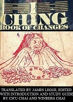

I Ching Book Of Change
Bagian Kedua (Heksagram 33 - 64)
| HEXAGRAM 1 | |
 | 乾 |
| QIAN | |
Langit, raja, ayah, lambang dari keteguhan.
GUA CI (卦辭) :
Qian (mewakili) yang maha pemulai/pencipta (Yuan), maha penembus (Hen), maha pemberkah (Li), maha benar dan teguh (Zhen).
TUAN ZHUAN A (彖傳上) :
- Maha 'luas, besar dan pencipta (daya)' sungguh ditunjukan oleh Qian! Semua benda menerima permulaan darinya :- Qian mengandung semua makna yang dimiliki Langit.
- Awan berpindah hujan tersebar; beragam benda muncul dalam beragam bentuk perkembangannya.
- (Nabi) maha mengetahui (hubungan diantara) awal dan akhir, dan bagaimana (petunjuk dari) keenam garis (dalam heksagram) disempurnakan, (masing-masing) pada musimnya. (Maka) dia mengendarai (kereta) yang dihela oleh keenam naga itu pada waktu yang tepat, naik menuju angkasa.
- Jalan dari Qian adalah untuk mengubah dan mentransformasikan, sehingga segalanya memperoleh sifat yang benar sebagaimana ditetapkan (oleh pikiran dari Langit); dan (sesudah itu keadaan) keselarasan agung akan terjaga didalam persatuan. Hasilnya adalah 'yang membawa berkah, benar dan teguh.'
- (Nabi) nampak tinggi, tinggi diatas segala benda, dan berjuta negeri semua menikmati ketenangan.
- Dalam garis pertama, SEMBILAN, (terlihat subyeknya sebagai) seekor naga terbaring sembunyi (dikedalaman air). Bukanlah saatnya untuk bertindak aktif.
- Dalam garis kedua, SEMBILAN, (terlihat subyeknya sebagai) seekor naga menampakan diri dan berada dilapangan. Akanlah membawa berkah bertemu dengan dengan orang besar.
- Dalam garis ketiga, SEMBILAN, (terlihat subyeknya sebagai) seorang Jun Zi (Kun Cu) aktif dan waspada sepanjang hari, dan dimalam hari tetap berhati-hati dan kuatir. (Kedudukannya) berbahaya, namun tidak akan ada kesalahan.
- Dalam garis keempat, SEMBILAN, (terlihat subyeknya sebagai seekor naga memandang) seakan-akan sedang melompat, (namun tetap) berada dikedalaman air. Tidak akan ada kesalahan.
- Dalam garis kelima, SEMBILAN, (terlihat subyeknya sebagai) seekor naga terbang di langit. Akanlah membawa berkah bertemu dengan dengan orang besar.
- Dalam garis keenam, SEMBILAN, (terlihat subyeknya sebagai) seekor naga melampaui batas-batas yang benar. Akan ada alasan untuk penyesalan.
- (Garis-garis heksagram ini semuanya kuat dan tak terputus, sebagaimana tertampak dari) penggunaan angka SEMBILAN. (Maka) munculah serombongan naga tanpa kepala-kepala untuk membebaskan diri mereka sendiri, akan ada berkah.
Langit didalam gerakannya, (memberikan gagasan mengenai) kekuatan. Seorang Jun Zi (Kun Cu) , sesuai dengan ini, meneguhkan dirinya untuk berkegiatan tanpa henti.
XIANG ZHUAN B (象傳下) :
- 'Seekor naga terbaring sembunyi dikedalaman air. Bukanlah saatnya untuk bertindak aktif:' - (ini timbul dari) garis kuat dan utuh yang berada ditempat paling rendah.
- 'Seekor naga nampak dilapangan:' - penyebaran dari pengaruh kebajikan telah meluas.
- 'Aktif dan waspada sepanjang hari:' - (ini mengacu kepada) pelangkahan Jalan (benar) berulang kali.
- 'Dia seakan-akan sedang melompat, namun tetap berada dikedalaman air.:' - jika dia bergerak maju, tidak akan ada kesalahan.
- 'Seekor naga terbang dilangit:' - orang besar menaikkan sendiri karyanya.
- 'Seekor naga melampaui batas-batas yang benar. Akan ada alasan untuk penyesalan:' - suatu keadaan penuh (sombong), yaitu, yang seharusnya tidak diperturutkan berlama-lama.
| HEXAGRAM 2 | |
 | 坤 |
| KUN | |
Bumi, rakyat, ibu, lambang dari kepatuhan.
GUA CI (卦辭) :
Kun (mewakili) yang maha pemulai, penembus, pemberkah, benar-teguh bagai seekor kuda betina. Ketika seorang Jun Zi (Kun Cu) (disini bermaksud) harus membuat pergerakan, jika mengambil inisiatif, dia akan tersesat; jika mengikuti, dia akan menemukan tuan (sesungguh) nya. Berkah akan terlihat dalam pertemanannya di barat-daya, dan kehilangan teman di timur-laut. Jika dia berdiam dalam kebenaran dan keteguhan, akan ada kerakhmatan.
TUAN ZHUAN A (彖傳上) :
- Maha 'sempurna, besar dan pencipta (penerima)' sungguh ditunjukan oleh Kun! Semua benda menerima kelahiran darinya :-Kun menerima dengan patuh pengaruh-pengaruh dari Langit.
- Kun didalam kebesaranya, mendukung dan mengandung segala benda. Kapasitas penerimaannya yang luar biasa cocok dengan daya tanpa batas (yang dimiliki Qian). Pemahamannya luas dan kecemerlangannya besar. (Dengan Kun) beragam benda memperoleh perkembangan penuhnya.
- Kuda betina adalah mahluk berjenis tanah. (Daya) pergerakannya pada bumi adalah tanpa batas; lembut dan patuh, memberi berkah dan teguh:- demikianlah Jalan dari seorang Jun Zi (Kun Cu) .
- 'Jika mengambil inisiatif, dia akan tersesat:' - dia akan kehilangan, yakni, Jalan benarnya. 'Jika mengikuti', dia patuh, dan akan masuk ke (Jalan) wajarnya. 'Di barat-daya dia akan mendapat teman-teman:' - dia akan berjalan dengan teman-teman dari golongannya sendiri. 'Di timur-laut dia akan kehilangan teman-teman:' - namun pada akhirnya akan ada landasan untuk ucapan selamat.
- 'Kerakhmatan muncul dari berdiam dalam keteguhan' berhubungan dengan kapasitas penerimaan tanpa batas dari bumi.
- Garis pertama, ENAM, (terlihat subyeknya) menginjak embun beku. Es yang keras akan (segera) datang.
- Garis kedua, ENAM, (menunjukan sifat) lurus, persegi, dan besar. (Berkerjanya), tanpa pengulangan usaha, dalam segala hal akan akan membawa berkah.
- Garis ketiga, ENAM, (menunjukan subyeknya) menjaga keunggulannya dibawah pengekangan, namun tetap teguh mempertahankannya. Seandainya berkesempatan turut serta mengabdi raja, walaupun dia tidak akan menuntut keberhasilannya (untuk dirinya sendiri), dia akan menyelesaikan urusan-urusan dengan hasil yang baik.
- Garis keempat, ENAM, (menunjukan lambang dari) sebuah karung yang terikat kuat. Tidak akan ada landasan bagi kesalahan ataupun pujian.
- Garis kelima, ENAM, (menunjukan) pakaian bawah berwarna kuning. Akan ada kerakhmatan besar.
- Garis keenam, ENAM, (menunjukan) naga-naga berkelahi di hutan belantara. Darah mereka berwarna ungu dan kuning.
- (Garis-garis heksagram ini semuanya lemah dan terputus, sebagaimana tertampak dari) penggunaan angka ENAM. Jika itu (yang diwakilkan) senantiasa benar dan teguh, kerakhmatan akan muncul.
Daya (kapasitas menerima dan menopang) dari bumi itulah yang dinyatakan oleh Kun. Seorang Jun Zi (Kun Cu) , sesuai dengan ini, dengan kebajikan besarnya mendukung (manusia dan) benda-benda.
XIANG ZHUAN B (象傳下) :
- 'Dia menginjak embun beku. Es yang keras akan (segera) datang:' - (hawa) dingin mulai mengambil bentuknya. Biarkanlah dingin ini berlangsung dengan tenang sesuai dengan sifatnya, dan (embun beku) akan menjadi es yang keras.
- Pergerakkan yang ditunjukan oleh garis kedua ENAM, adalah 'dari lurus menjadi persegi empat,' '(Berkerjanya), tanpa pengulangan usaha, dalam segala hal akan membawa berkah,' menunjukan hasil cemerlang dari Jalan bumi.
- 'Dia menjaga keunggulannya dibawah pengekangan, namun tetap teguh mempertahankannya:' - pada saat yang tepat dia akan mewujudkannya. 'Seandainya berkesempatan turut serta mengabdi raja:' - besar sungguh kemuliaan dari kebijaksanaannya.
- 'Sebuah karung yang terikat kuat. Tidak akan ada landasan bagi kesalahan ataupun pujian:' - ini menujukan bagaimana, melalui kehati-hatian, tidak akan ada cedera yang menimpa.
- 'Pakaian bawah berwarna kuning. Akan ada kerakhmatan besar:' - ini tersirat dari hiasan (warna) yang berkedudukan di tengah dan benar.
- 'Naga-naga berkelahi di hutan belantara:' - Jalan (maju yang ditunjukan oleh Kun) dikejar hingga ke titik ekstrimnya.
| HEXAGRAM 3 | |
  | 屯 |
| ZHUN | |
Kesulitan awal, lambang dari pertunasan.
GUA CI (卦辭) :
Zhun (menunjukan bahwa dalam hal dimana Zhun menyaratkan) akan ada kemajuan dan keberhasilan besar, dan kerakhmatan akan datang melalui perilaku benar dan teguh. (Namun) pergerakan apapun kedepan seharusnya tidak dijalankan (dengan enteng). Akan ada kerakhmatan dalam pengangkatan pangeran-pangeran feodal.
TUAN ZHUAN A (彖傳上) :
- Dalam Zhun terdapat yang kuat (trigram Qian) memulai hubungan dengan yang lemah (trigram Kun), dan kesukaran-kesukaranpun timbul.
- Pergerakan ditengah bahaya membangkitkan 'kemajuan dan keberhasilan besar (melalui) perilaku benar dan teguh.'
- Dengan tindakan dari guntur dan hujan, (yang merupakan lambang dari trigram Zhen dan Kan), semua (yang ada diantara langit dan bumi) akan terisi penuh. Namun keadaan saat itu masih penuh dengan ketidak teraturan dan kesuraman. Kepangeranan feodal harus dibangun, namun perasaan tenang dan damai yang telah terlindungi tidaklah harus diperturutkan (bahkan kemudian).
- Garis pertama, SEMBILAN, menunjukan kesulitan (yang dimiliki subyek) dalam bergerak maju. Akanlah memberi berkah baginya jika tetap benar dan teguh; (juga) menguntungkan dijadikan seorang penguasa feodal.
- Garis kedua, ENAM, menunjukan (subyeknya seorang gadis) menderita dan harus kembali; (bahkan) kuda-kuda keretanya (juga) nampak mundur. (Seandainya dia diserang) bukanlah oleh seorang perusak, tetapi oleh seseorang yang mencarinya untuk dijadikan isteri. Sang gadis mempertahankan kebenaran keteguhannya, dan menolak untuk menikah. Setelah sepuluh tahun kemudian sang gadis baru menikah, dan mempunyai anak.
- Garis ketiga, ENAM, menunjukan seseorang mengikuti rusa tanpa (panduan dari) jagawana, dan hanya menemukaan dirinya sendirian berada ditengah hutan. Seorang Jun Zi (Kun Cu) mengenali rahasia risiko-risiko, berpikir lebih baik menghentikan perburuan. Jika diteruskan, dia akan menyesalinya.
- Garis keempat, ENAM, menunjukan (subyeknya seorang gadis), kuda-kuda dari keretanya nampak mundur. Sang gadis bergerak maju mencari bantuan, namun, (pertolongan datang dari) dia yang sedang mencarinya untuk dijadikan isteri. Maju akan mujur; semuanya akan menjadi berkah.
- Garis kelima, SEMBILAN, menunjukan kesulitan-kesulitan (yang dialami subyeknya) didalam cara membagikan tanda mata yang mungkin diharapkan kaum kaya darinya. Dengan keteguhan dan kebenaran akan ada kerakhmatan dalam hal-hal kecil; (namun) didalam hal-hal besar akan ada kenahasan.
- Garis paling atas, ENAM, menunjukan ( subyeknya) dengan kuda-kuda keretanya harus mundur, dan mencucurkan air mata darah di sungai.
(Trigram mewakili) awan dan guntur membentuk Zhun. Seorang Jun Zi (Kun Cu) sesuai dengan ini, (mengatur tindakan pemerintahannya) seperti merajut kain tenun.
XIANG ZHUAN B (象傳下) :
- Walaupun 'ada kesulitan dalam bergerak maju,' pikiran (subyek dari garis) dibangun untuk mengerjakan yang benar. Walaupun mulia, dia merendahkan diri sampai ke tengah, dan berhasil besar mendapatkan rakyat.
- Kesukaran (bagi subyek dari) garis kedua ENAM, timbul dari tempatnya yang berada diatas garis utuh dibawahnya. 'Setelah sepuluh tahun kemudian sang gadis baru menikah, dan mempunyai anak' menunjukan sesuatunya kembali ke Jalan wajarnya.
- 'Seseorang mengikuti rusa tanpa (panduan dari) jagawana:' - (dia berbuat demikian) karena (hasratnya) mengikuti perburuan. 'Seorang Jun Zi (Kun Cu) mengenali rahasia risiko-risiko, berpikir lebih baik menghentikan perburuan. Jika diteruskan, dia akan menyesalinya:' - dia akan dikurangkan sampai ke titik ekstrimnya.
- 'Bergerak maju mencari bantuan' menunjukan kecerdasan.
- 'Kesulitan (yang dialami oleh subyek dari garis kelima) didalam cara membagikan tanda mata yang mungkin diharapkan kaum kaya darinya:' - perluasan yang mereka raih belum akan menyolok.
- 'Dia mencucurkan air mata darah di sungai:' - bagaimana keadaan (yang dilambangkan) dapat berlangsung lama?
| HEXAGRAM 4 | |
 | 蒙 |
| MENG | |
Kurang pengalamannya orang muda, lambang dari kekurang-jelasan.
GUA CI (卦辭) :
Meng (menunjukan bahwa didalam hal yang disyaratkannya) akan ada kemajuan dan keberhasilan. Saya tidak (pergi dan) mencari yang muda dan tidak berpengalaman, namun dialah yang datang mencari saya. Ketika dia menunjukan (kesungguhan hati yang menandakan) permintaan bantuan pertama kali untuk belajar penujuman, saya mengajarinya. Jika dia memohon untuk kedua dan ketiga kalinya, itu namanya penyusah; dan saya tidak mengajari penyusah. Akan ada kerakhmatan dengan tetap teguh dan benar.
TUAN ZHUAN A (彖傳上) :
- Dalam Meng terdapat sebuah (trigram) gunung, dan dibawahnya sebuah (trigram) jurang kasar dengan sungai didalamnya. Keadaan berbahaya dan menahan kemajuan (yang disarankan oleh gunung dan jurang) memberikan (gagasan mengenai) Meng.
- 'Meng menunjukan bahwa akan ada kemajuan dan keberhasilan:' - karena ada perkembangan pada kerja didalamnya, dan penindakan pada waktu yang sangat tepat. 'Saya tidak mencari yang muda dan tidak berpengalaman, namun dialah yang datang mencari saya:' - demikianlah keinginan menanggapi keinginan. 'Ketika dia menunjukan (kesungguhan hati yang menandakan) permintaan bantuan pertama kali untuk belajar penujuman, saya mengajarinya:' - untuk kepemilikan kwalitas garis utuh dan berada pada kedudukan tengah (demikianlah yang dikatakan oleh subyek dari garis kedua). 'Permohonan untuk kedua dan ketiga kalinya menciptakan gangguan, dan saya tidaklah mengajar untuk menciptakan gangguan:' - gangguan (dia maksudkan) untuk kebodohan.
(Cara menangani) orang muda dan kurang pengetahuan adalah dengan merawat yang benar (alam ini milik mereka):- ini menyempurnakan tugas sang nabi.
- Garis pertama, ENAM, (berkenaan dengan) penghapusan kebodohan. Akanlah membawa berkah menggunakan hukuman (untuk tujuan itu) dan melepaskan belenggu (dari pikiran). Namun terus melakukan cara (penghukuman) itu akan memberikan alasan untuk penyesalan.
- Garis kedua, SEMBILAN, (menunjukan subyeknya) melatih kesabaran dengan orang bodoh, dimana akan ada kerakhmatan; dan (bahkan) mengakui kebaikan wanita, yang juga akan menjadi rakhmat. (Dia bisa juga digambarkan sebagai) seorang putra yang mampu (menanggung beban) keluarganya.
- Garis ketiga, ENAM, (nampaknya mengatakan) bahwa seseorang janganlah menikahi wanita yang tidak menjaga dirinya ketika melihat lelaki kaya, dan tidak sekalipun kerakhmatan akan datang dari wanita tersebut.
- Garis keempat, ENAM, (menunjukan subyeknya seolah-olah) terbelenggu didalam rantai kebodohan. Akan ada kesempatan untuk penyesalan.
- Garis kelima, ENAM, menunjukan subyeknya sebagai seorang anak lelaki sederhana tanpa pengalaman. Akan ada kerakhmatan.
- Garis paling atas, ENAM, terlihat seseorang (muda) mencintai kebodohan. Namun berkah tidak akan datang jika penghukuman mencederainya. Berkah akan datang dengan cara mencegahnya dari cedera.
(Trigram mewakili) gunung dan dibawahnya mata air memancar membentuk Meng. Seorang Jun Zi (Kun Cu) , sesuai dengan ini, berusaha untuk berperilaku teguh dan memelihara kebajikannya.
XIANG ZHUAN B (象傳下) :
- 'Akanlah membawa berkah menggunakan hukuman:' - obyek ditempatkan dibawah pengaruh hukum perbaikan.
- 'Seorang putra yang mampu (menanggung beban) keluarganya:' - seperti yang terlihat dari hubungan timbal balik antara garis yang kuat dan yang lemah (garis kelima).
- 'Wanita (sebagaimana yang diwakili disini) seharusnya tidak dinikahi:' - perilakunya tidak cocok dengan perilaku yang benar.
- 'Penyesalan yang muncul dari kebodohan terbelenggu dalam rantai' dikarenakan oleh jarak khusus (dari subyek garis ini) dengan kekokohan (yang ditunjukan garis 2 dan 6).
- 'Kerakhmatan milik dari anak lelaki sederhana tanpa pengalaman.' datang dari ketaatannya yang berlangsung dengan kerendahan hati.
- 'Berkah akan datang dengan cara mencegahnya dari cedera:' - (subyek dari garis ini) diatas dan (yang bodoh) dibawahnya, semuanya mengerjakan dan semuanya dikerjakan sesuai dengan sifat mereka.
| HEXAGRAM 5 | |
| 需 |
| XU | |
Penundaan, lambang dari penantian.
GUA CI (卦辭) :
Xu mengisyaratkan bahwa dengan ketulusan yang dinyatakan didalamnya, akan ada keberhasilan yang cemerlang. Dengan keteguhan akan ada kerakhmatan; dan akanlah membawa berkah menyeberangi sungai besar.
TUAN ZHUAN A (彖傳上) :
- Xu menyatakan penantian. (Gambar) menunjukan bahaya didepan; namun sekalipun demikian keteguhan dan kekuatan (yang ditunjukan oleh trigram bagian dalam), subyeknya tidak mengijinkan dirinya untuk terlibat (dalam jurang sempit berbahaya);- ini benar dia seharusnya tidak disulitkan atau dikurangi sampai ke titik ekstrimnya.
- Ketika dikatakan bahwa 'dengan ketulusan yang dinyatakan didalamnya, akan ada keberhasilan yang cemerlang dan dengan keteguhan akan ada kerakhmatan,' ini ditunjukan oleh tempat kedudukan (dari garis kelima) yang ditetapkan oleh Langit, dan pada kedudukan yang benar dan berada di tengah (Zhong Zheng). 'akanlah membawa berkah menyeberangi sungai besar;' - yakni, bergerak maju akan diikuti oleh pencapaian yang berfaedah.
- Garis pertama, SEMBILAN, menunjukan subyeknya menunggu dari batas kejauhan. Akanlah membawa berkah baginya terus menerus mempertahankan (tujuan yang ditunjukan), dalam kasus ini tidak akan ada kesalahan.
- Garis kedua, SEMBILAN, menunjukan subyeknya menunggu diatas pasir (di hulu sungai). Dia akan (menderita luka) kecil akibat berbicara (menentang), namun pada akhirnya akan ada kerakhmatan.
- Garis ketiga, SEMBILAN, menunjukan subyeknya berada dalam lumpur (didekat sungai). Dengan demikian dia sendiri mengundang datangnya cedera.
- Garis keempat, ENAM, menunjukan subyeknya menunggu didalam (ditempat) darah. Namun dia akan keluar dari (himpitan) gua.
- Garis kelima, SEMBILAN, menunjukan subyeknya menunggu ditengah-tengah peralatan sebuah makan besar. Melalui keteguhan dan kebenarannya akan ada kerakhmatan.
- Garis paling atas, ENAM, menunjukan subyeknya masuk kedalam gua. (Tetapi) ada tiga orang tamu yang datang, tanpa diminta, (untuk bantuannya). Jika dia menerimanya dengan hormat, pada akhirnya akan ada kerakhmatan.
(Trigram) awan naik melewati langit membentuk Xu. Seorang Jun Zi (Kun Cu), sesuai dengan ini, makan dan minum, berpesta dan menikmati sendiri (seolah-olah sudah tidak ada perkerjaan lain untuk dia).
XIANG ZHUAN B (象傳下) :
- 'Dia menunggu dari batas kejauhan:' - dia tidak akan gegabah membuat pergerakkan untuk menghadapi kesulitan (dari keadaan). 'Akanlah membawa berkah baginya terus menerus mempertahankan (tujuan yang ditunjukan), dalam kasus ini tidak akan ada kesalahan:' - dia tidak akan gagal mengejar Jalan wajar itu.
- 'Dia menunggu diatas pasir:' - dia menempati kedudukan tengah dengan kesabaran yang banyak. Walaupun 'dia akan (menderita luka) kecil akibat berbicara (menentang),' dia akan membawa sesuatunya sampai hasil yang baik.
- 'Dia menunggu dalam lumpur:' - bencana berada di (dekat, dan seakan didalam trigram) bagian luar. 'Dia sendiri mengundang datangnya cedera:' - jika dia hormat dan berhati-hati, dia tidak akan menjadi yang terburuk.
- 'Dia menunggu didalam (ditempat) darah:' - dia menolong dirinya dari keadaan-keadaan waktu), dan mendengarkan (persyaratan-persyaratan).
- 'Peralatan sebuah makan besar, dan kerakhmatan melalui perilaku teguh dan benar,' ditunjukan oleh (kedudukan di) tengah dan ditempat yang benar.
- 'Tiga orang tamu yang datang, tanpa diminta, (untuk bantuannya). Jika dia menerimanya dengan hormat, pada akhirnya akan ada kerakhmatan:' - walaupun antara penghuni dan tempatnya tidak cocok satu sama lain, tidak ada kegagalan besar (dari apa yang telah dikerjakan).
| HEXAGRAM 6 | |
| 訟 |
| SONG | |
Konflik, lambang dari pertikaian.
GUA CI (卦辭) :
Song mengisyaratkan bagaimana, walaupun ada ketulusan didalam pertikaian seseorang, dia akan bertemu dengan perlawanan dan penghalangan; akan tetapi jika dia menghargai peringatan keprihatinan, akan ada kerakhmatan, sedangkan, jika dia harus meneruskan pertikaian hingga akhir (yang lebih pahit), akan ada kenahasan. Akanlah membawa berkah bertemu dengan orang besar; akanlah tidak membawa berkah menyeberangi sungai besar.
TUAN ZHUAN A (彖傳上) :
- Bagian atas dari Song adalah (trigram yang mewakili) kekuatan dan bagian bawahnya adalah bahaya. (Kedatangan bersama dari) kekuatan dan bahaya memberikan (gagasan yang ada didalam) Song,
- 'Song mengisyaratkan bagaimana, walaupun ada ketulusan didalam pertikaian seseorang, dia akan bertemu dengan perlawanan dan penghalangan; akan tetapi jika dia menghargai peringatan keprihatinan, akan ada kerakhmatan:' - (garis) yang kuat datang dan menempati kedudukan tengah (dalam trigram bawah).
'Jika dia harus meneruskan pertikaian hingga akhir (yang lebih pahit), akan ada kenahasan:' - perselisihan bukanlah sesuatu yang harus dibawa sampai ke titik ekstrimnya.
'Akanlah membawa berkah bertemu dengan orang besar:' - Nilai apapun juga yang dibangun adalah karena kedudukan tengah, dan tempat yang benar (Zhong Zheng).
'Akanlah tidak membawa berkah menyeberangi sungai besar:' - seseorang (yang mencoba melakukan hal yang demikian) akan menemukan dirinya berada didalam sebuah jurang yang dalam sekali.
- Garis pertama, ENAM, menunjukan subyeknya tidak mengabadikan pertikaian. Dia akan menderita (luka) kecil akibat ucapan yang menentang, namun pada akhirnya akan ada kerakhmatan.
- Garis kedua, SEMBILAN, menunjukan subyeknya tidak sepadan untuk pertikaian, Jika dia mundur dan tetap menyembunyikan (dimanakah) penduduk kotanya yang (hanya) 300 keluarga, dia tidak akan jatuh kedalam kesalahan.
- Garis ketiga, ENAM, memperlihatkan subyeknya menjaga tempat lama yang ditujukan untuk mendukungnya, dan berperilaku benar teguh. Kedudukannya berbahaya, akan ada kerakhmatan pada akhirnya. Jika sekiranya dia ikut serta didalam usaha sang raja. Dia tidak akan (menuntut jasa dari) pencapaiannya.
- Garis keempat, SEMBILAN, menunjukan subyeknya tidak sepadan untuk pertikaian. Dia pulang untuk (mempelajari) peraturan-peraturan (dari Langit), mengubah (keinginannya untuk bertikai), dan beristirahat dalam keteguhan dan kebenaran. Akan ada kerakhmatan.
- Garis kelima, SEMBILAN, menunjukan subyeknya bertikai;- dan dengan kerakhmatan yang besar.
- Garis paling atas, SEMBILAN, menunjukan bagaimana subyeknya bisa memiliki sabuk kulit yang dianugerahkan kepadanya (oleh penguasa), dan 3 kali sabuk akan diambil darinya dalam suatu pagi.
(Trigram mewakili) langit dan air, berpindah satu sama lain membentuk Song. Seorang Jun Zi (Kun Cu), sesuai dengan ini, didalam transaksi urusan merembukan (dengan baik) langkah-langkah pertamanya.
XIANG ZHUAN B (象傳下) :
- 'Dia tidak mengabadikan pertikaian:' - pertikaian tidak seharusnya diperpanjang. Walau 'dia akan menderita (luka) kecil akibat ucapan yang menentang,' alasannya jelas.
- 'Dia tidak sepadan untuk pertikaian; dia mundur dan tetap menyembunyikan, dengan diam-diam mundur dari pertikaian:' - baginya yang bertempat lebih rendah bertikai dengan yang (lebih kuat) diatas, akanlah (mengundang) bencana, seakan-akan dia membawa malapetaka untuk dirinya sendiri.
- 'Dia membatasi dirinya dari dukungan yang ditujukan kepadanya dari tempat yang lama:' - (maka) mengikuti mereka yang diatasnya, dia akan mendapatkan rakhmat.
- 'Dia pulang untuk (mempelajari) peraturan-peraturan (dari Langit), mengubah (keinginannya untuk bertikai), dan beristirahat dalam keteguhan dan kebenaran:' - dia tidak gagal (dalam mengerjakan yang benar).
- 'Dia bertikai;- dan dengan kerakhmatan yang besar:' - ini ditunjukan oleh pegangannya pada yang tengah dan berada ditempat yang benar.
- Dia menerima jubah kebesaran melalui pertikaiannya:' - namun dia tetap belum patut dihormati.
| HEXAGRAM 7 | |
| 師 |
| SHI | |
Tindakan kelompok, lambang dari orang banyak.
GUA CI (卦辭) :
Shi menunjukan bagaimana (dalam kasus yang dianggapnya) dengan keteguhan dan kebenaran, serta usia dan pengalaman (dari pemimpinya), akan ada kerakhmatan dan tanpa kesalahan.
TUAN ZHUAN A (彖傳上) :
- (Nama) Shi menggambarkan orang banyak (dari pasukan). 'keteguhan dan kebenaran' (yang ditunjukan oleh heksagram) merujuk kepada (moral) kebenaranan (dari sebuah tujuan). Bilamana (sipenggerak) mampu menggunakan orang banyak dengan kebenaran yang demikian, dia bisa mencapai kekuasaan raja.
- Terdapat (lambang dari) kekuatan ditengah (trigram bawah), dan kekuatan ini disambut (oleh korelasi benarnya dari trigram atas). Tindakan akan menerbitkan bahaya, meskipun bersesuaian (dengan perasaan terbaik dari orang-orang). (Penggeraknya) dengan tindakan demikian bisa menyusahkan seluruh negeri, namun orang tetap akan mengikutinya; - akan ada kerakhmatan dan kesalahan apakah yang akan terjadi disana?
- Garis pertama, ENAM, menunjukan pasukan dikerahkan keluar sesuai dengan peraturan (untuk suatu pergerakan yang demikian). Jika (peraturan) ini tidak baik, akan ada kenahasan.
- Garis kedua, SEMBILAN, menunjukan (pemimpin) ditengah-tengah pasukan. Akan ada rakhmat dan tanpa kesalahan. Raja sudah 3 kali menyampaikan titah kepadanya (untuk mendukungnya).
- Garis ketiga, ENAM, menunjukan bagaimana pasukan bisa, berkemungkinan, mempunyai banyak komandan yang tidak tepat-guna. Akan ada kenahasan.
- Garis keempat, ENAM, menunjukan pasukan sedang mundur. Tidak ada kesalahan.
- Garis kelima, ENAM, menunjukan burung-burung ditengah sawah yang menguntungkan jika ditangkap (dan dibasmi). Dalam hal tersebut tidak akan ada kesalahan. Jika putra sulung memimpin pasukan, dan orang-orang yang lebih muda (enggan menempati jabatan-jabatan yang ditugaskan kepada mereka), bagaimana teguh dan benarnya dia, akan ada kenahasan.
- Garis paling atas, ENAM, menunjukan penguasa besar menurunkan titahnya (mengangkat beberapa orang) untuk menjadi penguasa-penguasa negeri, dan yang lainnya untuk menjalankan kepemimpinana suku-suku; namun orang-orang kecil tidak boleh diperkerjakan (dalam kedudukan-kedudukan yang demikian).
(Trigram mewakili) bumi dan air ditengahnya, membentuk Shi. Seorang Jun Zi (Kun Cu), sesuai dengan ini, merawat dan mendidik rakyat, dan menghimpun (dari antara mereka) orang banyak (pasukan).
XIANG ZHUAN B (象傳下) :
- 'Pasukan dikerahkan keluar sesuai dengan peraturan:' - jika peraturan tersebut tidak dipatuhi, akan ada kenahasan.
- 'Dia ditengah-tengah pasukan, dan akan ada kerakhmatan:' - dia telah menerima kebaikan dari Langit. 'Raja sudah 3 kali menyampaikan titah kepadanya (untuk mendukungnya):' (raja) menghargai berjuta-juta wilayah didalam hatinya.
- 'Pasukan dengan kemungkinan mempunyai banyak komandan yang tidak tepat-guna:'- kekurang berhasilannya akan mejadi besar.
- 'Pasukan sedang mundur. Tidak ada kesalahan:' tidak ada kegagalan dalam Jalan wajarnya.
- 'Putra sulung memimpin pasukan:' - pergerakkannya diarahkan oleh dia sesuai dengan kedudukannya di tengah. 'Orang-orang yang lebih muda enggan menempati jabatan-jabatan yang ditugaskan kepada mereka:' - penggunaan orang-orang demikian tidaklah tepat.
- 'Sang penguasa besar menurunkan titahnya:' - dengan demikian dia membagi jasa dengan adil dan benar. 'Orang-orang kecil tidak boleh diperkerjakan:' - mereka pasti menghempaskan negeri kedalam kekacauan.
| HEXAGRAM 8 | |
| 比 |
| BI | |
Persatuan, kerukunan, lambang dari kerja sama.
GUA CI (卦辭) :
Bi menunjukan bahwa (dibawah keadaan yang dianggapnya) terdapat kerakhmatan. Namun biarkanlah (pihak utama yang dimaksudkan didalamnya) memeriksa kembali dirinya, (seolah-olah) dengan penujuman, apakah kebajikannya besar, tidak terputus-putus, dan teguh. Jika demikian adanya, tidak akan ada kesalahan. Mereka yang belum beristirahat kemudian akan datang kepadanya; dan untuk mereka yang datang (terlalu) terlambat akan ada kenahasan.
TUAN ZHUAN A (彖傳上) :
- 'Bi menunjukan bahwa terdapat kerakhmatan:' - (nama) Bi menyatakan pertolongan; (dan terlihat dalam gambar) orang-orang rendahan dengan patuh mengikuti (Jun Zi / Kun Cu mereka).
- 'Biarkanlah (fihak utama yang dimaksudkan didalamnya) memeriksa kembali dirinya, (seolah-olah) melalui penujuman, apakah kebajikannya besar, tidak terputus-putus, dan teguh; Jika demikian adanya, tidak akan ada kesalahan:' - semua ini mengikuti garis kuat yang berkedudukan di tengah (dari trigram atas). 'Mereka yang belum beristirahat kemudian akan datang kepadanya:' - tinggi dan rendah akan menyambut subyeknya. 'Dengan mereka yang datang (terlalu) terlambat akan ada kenahasan:' - (bagi mereka) Jalan (dari kerakhmatan yang ditunjukan disini) telah habis.
- Garis pertama, ENAM, menunjukan subyeknya mencari dengan ketulusan untuk memenangkan jalinan hati dari obyeknya. Tidak akan ada kesalahan. Biarlah (dada) penuh dengan ketulusan hati seperti periuk yang penuh isinya, dan pada akhirnya akan membawa keberkahan-keberkahan lain.
- Garis kedua, ENAM, terlihat pergerakan menuju persatuan dan jalinan yang dimulai dari dalam batin (pikiran). Dengan benar teguh akan ada kerakhmatan.
- Garis ketiga, ENAM, terlihat subyeknya mencari persatuan dengan fihak yang sepertinya tidak mau bersekutu.
- Garis keempat, ENAM, terlihat subyeknya mencari persatuan dengan seseorang diluar dirinya. Dengan benar teguh akan ada kerakhmatan.
- Garis kelima, SEMBILAN, memberikan contoh paling termahsyur tentang pencarian persatuan dan jalinan. (rupanya terlihat didalamnya) raja mendesak buruannya (hanya) dalam 3 arah, dan membiarkan lolos semua binatang yang ada didepannya, sementara rakyat dari kotanya tidak memperingatkan satu sama lain (untuk mencegahnya). Akan ada kerakhmatan.
- Garis paling atas, ENAM, terlihat seseorang mencari persatuan dan jalinan tanpa mengambil langkah yang pertama (untuk akhir yang demikian). Akan ada kenahasan.
(Trigram mewakili) bumi dan air diatasnya, membentuk Bi. Raja purba, sesuai dengan ini, mendirikan berbagai negeri dan menjaga hubungan yang penuh kasih sayang dengan para pangerannya.
XIANG ZHUAN B (象傳下) :
- Dari 'mencari persatuan dengan obyeknya' terlihat dalam ENAM yang pertama, akan ada keberkahan lainnya.
- 'Pergerakan menuju persatuan dan jalinan yang dimulai dari dalam batin (pikiran):' - (pihak yang diperdulikan) tidak gagal dalam apa yang benar bagi dirinya.
- 'Persatuan dicari dengan fihak yang sepertinya tidak mau bersekutu:' - namun akankah selamat menjadi hasilnya?
- 'Persatuan dicari (oleh pihak yang dimaksudkan disini) dengan seseorang diluar dirinya, dan (dalam kasus ini) dengan obyek yang pantas:' - dia mengikuti (penguasa) yang diatasnya.
- 'Kerakmatan yang termasuk dalam contoh paling termahsyur tentang pencarian persatuan dan jalinan' muncul dalam kedudukan benar dan tengah (dari garis kelima, utuh).
(Raja) mengabaikan (hewan-hewan) dihadapannya (yang kemudian hilang), dan (hanya) mengambil hewan=hewan yang seolah hadirkan dirinya dengan patuh, terlihat didalam 'membiarkan lolos semua binatang yang ada didepannya.' 'Bahwa rakyat dari kotanya tidak memperingatkan satu sama lain (untuk mencegah kelolosan demikian),' menunjukan bagaimana dia, dalam kemahsyuran tingginya, telah membuat mereka mengejar Jalan tengah. - 'Dia mencari persatuan dan jalinan tanpa mengambil langkah yang pertama (untuk akhir yang demikian):' - tidak ada kemungkinan untuk sebuah hasil (yang baik).
| HEXAGRAM 9 | |
 | 小畜 |
| XIAO XU | |
Pengekangan kecil, lambang dari kekuatan menjinakkan.
GUA CI (卦辭) :
Xiao Chu menunjukan bahwa (dibawah keadaannya) akan ada kemajuan dan keberhasilan. (Terlihat) awan tebal, namun tidak ada hujan yang datang dari perbatasan sebelah barat.
TUAN ZHUAN A (彖傳上) :
- Dalam Xiao Chu garis lemah menempati kedudukannya (yang benar), dan (garis-garis) diatas dan dibawahnya menyambutnya. Maka datanglah nama Xiao Chu (Pengekangan Kecil).
- (Heksagram menghadirkan lambang dari) kekuatan dan keluwesan. Garis-garis kuat berada pada kedudukan di tengah, dan keinginan (dari subyek-subyeknya) akan mendapat jalan bebas. Maka Xiao Chu menunjukan bahwa akan ada kemajuan dan keberhasilan.
- 'Awan tebal, namun tidak ada hujan' menunjukan pergerakan maju (dari garis kuat) tetap berlanjut. 'Datang dari perbatasan sebelah barat' menunjukan bahwa pengaruh (yang membawa berkah) belum secara luas diperlihatkan.
- Garis pertama, SEMBILAN, menunjukan subyeknya kembali dan mengejar jalannya sendiri. Akan terjatuh dalam kesalahan apakah dia? Akan ada kerakhmatan.
- Garis kedua, SEMBILAN, menunjukan subyeknya oleh tarikan (dari garis sebelumnya), kembali (ke jalan yang benar). Akan ada kerakhmatan.
- Garis ketiga, SEMBILAN, mengusulkan gagasan tentang sebuah kereta, dengan tali pengikat dibawahnya yang telah terlepas, atau seorang suami dan isteri yang saling berpaling muka.
- Garis keempat, ENAM, menunjukan subyeknya dirasuki ketulusan hati. Bahaya banjir darah terhindarkan karenanya, dan (alasan bagi) kekhawatirannya sirna.
- Garis kelima, SEMBILAN, menunjukan subyeknya dirasuki ketulusan hati, dan menarik orang lain untuk bergabung dengannya. Kaya akan sumber daya, dia memperkerjakan tetangga-tetangganya (dalam sebab yang sama dengan dirinya)
- Garis paling atas, SEMBILAN, menunjukan hujan telah turun, dan (kemajuan kedepan) tertahan; - (sehingga) akumulasi penuh dari kebajikan (yang diwakili oleh trigram atas) harus dinilai. Akan tetapi seorang isteri (yang sedang melatih pengendalian), bagaimanapun teguh dan benarnya, dia berada dalam kedudukan yang berbahaya, (dan seperti) bulan menjelang penuh. Jika seorang Jun Zi (Kun Cu) meneruskan tindakan-tindakannya (dalam keadaan demikian), akan ada kenahasan.
(Trigram mewakili) langit dan angin yang bergerak diatasnya, membentuk Xiao Chu. Seorang Jun Zi (Kun Cu) sesuai dengan ini, memperindah penjelmaan luar dari kebajikannya.
XIANG ZHUAN B (象傳下) :
- 'Dia kembali dan mengejar jalannya sendiri:' - benar bahwa seharusnya ada kerakhmatan.
- 'Oleh tarikan (dari garis sebelumnya), dia kembali (ke Jalan sendiri),' dan berada di tengah: - dia tidak akan salah didalam apa yang disebabkan darinya.
- 'Suami dan isteri saling berpaling muka:' - (subyek dari garis ketiga adalah seperti seorang suami yang) tidak dapat menjaga secara benar hubungan dengan isterinya.
- 'Dia dirasuki ketulusan hati; (alasan bagi) kekhawatirannya sirna:' - (subyek dari garis-garis) diatas mempunyai tujuan yang sama dengan dirinya.
- 'Dia dirasuki ketulusan hati, dan menarik orang lain untuk bergabung dengannya:' - dia tidak menggunakan semata-mata sumber kaya miliknya.
- 'Hujan telah turun, dan (kemajuan kedepan) tertahan:' - kekuasaan (yang ditandakan dalam gambar) telah terhimpun penuh. 'Jika seorang Jun Zi (Kun Cu) meneruskan tindakan-tindakannya, akan ada kenahasan:' - dia akan mengetahui dirinya terhalang.
| HEXAGRAM 10 | |
 | 履 |
| LU | |
Melangkah berhati-hati, lambang dari tindakan pembebasan.
GUA CI (卦辭) :
Lu (mengusulkan gagasan tentang) seseorang melangkahi ekor harimau, yang tidak menggigitnya. Akan ada kemajuan dan keberhasilan.
TUAN ZHUAN A (彖傳上) :
- Dalam Lu terdapat (lambang dari) kelemahan melangkahi kekuatan.
- (Trigram bawah) menunjukan kesenangan dan kepuasan, dan menyambut (trigram atas yang menunjukan) kekuatan. Maka (dikatakan), 'Dia melangkahi ekor harimau, yang tidak menggigitnya; Akan ada kemajuan dan keberhasilan.'
- (Garis kelima adalah garis) kuat, berada di tengah, dan berkedudukan benar (Zhong Zheng). (Subyeknya) menempati kedudukan (yang diberikan) Shang Ti, dan tidak terjerumus kedalam kemalangan dan kegagalan;- tindakan(nya) akan cemerlang.
- Garis pertama, SEMBILAN, menunjukan subyeknya melangkah dijalan yang biasa dilintasinya. Jika dia bergerak maju kedepan, tidak akan ada kesalahan.
- Garis kedua, SEMBILAN, menunjukan subyeknya melangkah dijalan datar dan mudah;- seorang kalem dan pertapa, yang, jika dia berperilaku teguh dan benar, akan ada kerakhmatan.
- Garis ketiga, ENAM, menunjukan seorang bermata satu (yang berpikir dia) dapat melihat sempurna; seorang pincang (yang berpikir dia) dapat berjalan tegap; seseorang yang melangkahi ekor harimau dan digigit. (Semuanya ini menunjukan) kenahasan. Terdapat (semata-mata) seorang pemberani yang melakonkan peran penguasa besar.
- Garis keempat, SEMBILAN, menunjukan subyeknya melangkahi ekor harimau. Dia menjadi penuh dengan peringatan keprihatinan, dan pada akhirnya akan ada kerakhmatan.
- Garis kelima, SEMBILAN, menunjukan langkah tegas dari subyeknya. Walau dia teguh dan benar, akan ada bahaya.
- Garis keenam, SEMBILAN, memberitahukan kita untuk memperhatikan (keseluruhan jalan) yang dilangkahi, dan memeriksa pertanda yang diberikan. Jika sempurna dan tanpa kegagalan, akan ada kerakhmatan besar.
(Trigram mewakili) langit diatas, dan rawa (yang mewakili air) dibawahnya, membentuk Lu. Seorang Jun Zi (Kun Cu), sesuai dengan ini, membedakan antara yang tinggi dan yang rendah, dan memberikan penyelesaian kepada tujuan-tujuan rakyat.
XIANG ZHUAN B (象傳下) :
- 'Dia melangkah dijalan yang biasa dilintasinya dan bergerak maju kedepan:' - dengan bersendiri dan secara eklusif dia menjalankan keinginannya (yang telah lama dihargainya).
- 'Seorang kalem dan pertapa, yang, berperilaku teguh dan benar, akan ada kerakhmatan:' - berpegangan di tengah, dia tidak akan mengijinkan dirinya terhempas kedalam kekacauan.
- 'Seorang bermata satu (yang berpikir dia) dapat melihat sempurna:' - dia belum bisa melihat dengan jelas. 'Seorang pincang (yang berpikir dia) dapat berjalan tegap:' - seseorang tidak dapat berjalan bersama dia. 'Kenahasan digigit harimau' muncul dari tempat yang tidak tepat baginya. '(semata-mata) seorang pemberani yang melakonkan peran penguasa besar:' - ini memperlihatkan kehendaknya yang (terlalu) keras.
- 'Dia menjadi penuh dengan peringatan keprihatinan, dan pada akhirnya akan ada kerakhmatan:' - kehendanya terselenggara.
- 'Dia melangkah dengan tegas; dan walau dia berperilaku teguh dan benar, akan ada bahaya:' - ini dikarenakan dia berada pada kedudukan yang benar dan sesuai.
- 'Akan ada kerakhmatan besar,' dan itu ada pada garis peghuni teratas: - ini adalah hal besar untuk ucapan selamat.
| HEXAGRAM 11 | |
| 泰 |
| TAI | |
Damai, kemajuan, lambang dari keberhasilan.
GUA CI (卦辭) :
Didalam Tai (terlihat) yang kecil pergi dan yang besar datang. (Ini menunjukan bahwa) akan ada keberuntungan, dengan kemajuan dan kesuksesan
TUAN ZHUAN A (彖傳上) :
- 'Yang kecil pergi dan yang besar datang' menunjukan kepada kita langit dan bumi menjalin hubungan satu sama lain, dan segala benda sebagai akibatnya mendapat jalan bebas, dan (juga) yang tinggi dan yang rendah, (para Jun Zi / Kun Cu dan orang-orang rendahan), menjalin hubungan satu sama lain, dan dikuasai oleh tujuan yang sama. (Trigram) bagian dalam terdiri dari garis-garis kuat dan utuh, dan bagian luar terdiri dari garis-garis yang lemah dan terbelah dua; Bagian dalam adalah (lambang dari) kekuatan, dan bagian luar adalah kepatuhan; bagian dalam (mewakili) seorang Jun Zi (Kun Cu) dan bagian luar (mewakili) orang kecil. (Maka) jalan seorang Jun Zi (Kun Cu) nampak bertambah, dan jalan orang kecil berkurang.
- Garis pertama, SEMBILAN, menyarankan gagasan tentang mencabut rumput, dan membawa serta batang rumput lain yang akar-akarnya saling melekat. Maju (pada bagian subyeknya) akan membawa kerakhmatan.
- Garis kedua, SEMBILAN, menunjukan seseorang yang dapat mengasuh orang belum terdidik, akan menyeberangi sungai Ho tanpa perahu, tanpa melupakan jaraknya, dan tanpa persahabatan (yang egois). Jadi dia benar-benar membuktikan dirinya bertindak sesuai dengan Jalan Tengah.
- Garis ketiga, SEMBILAN, menunjukan bahwa, selagi belum ada keadaan damai tidaklah tepat untuk diganggu, dan tidak ada keberangkatan (dari orang-orang jahat) sehinggga mereka tidak akan kembali, namun jika seseorang teguh dan benar, ketika menyadari kesukaran yang akan muncul, dia tidak akan membuat kesalahan. Tidak akan ada kesempatan bagi kesedihan dalam kepastian (dari perubahan yang sedemikian berulangnya); dan didalam suasana hati ini kebahagaian (dari yang sekarang) bisa dinikmati(dalam waktu yang lama).
- Garis keempat, ENAM, menunjukan subyeknya kegugupan;-tidak bersandar kepada sumber-sumber kaya dari dirinya sendiri, namum memanggil tetangga-tetangganya. (Mereka semua datang) bukan karena menerima peringatan, tetapi karena ketulusan (dari dalam hati mereka).
- Garis kelima, ENAM, mengingatkan kita akan (Raja) Di-yi (yang mengatur tentang) pernikahan adik perempuannya. Dengan jalan ini akan ada kebahagian dan keberuntungan besar.
- Garis keenam, ENAM, menunjukan kita tembok kota kembali menjadi parit. Bukanlah waktunya untuk mengerahkan pasukan. (Subyek dari garis ini) sesungguhnya bisa, menurunkan perintah kepada rakyat kotanya; namun betapapun benar dan teguh dirinya, dia akan mempunyai sebab bagi penyesalan.
(Trigram) langit dan bumi menjalin hubungan bersama-sama membentuk Tai. (Nabi) penguasa, selaras dengan ini, menciptakan dan menyempurnakan (peraturan-peraturannya) menurut Jalan langit dan bumi, dan membantu penggunaan dari penyesuaian-penyesuaian yang disediakan olehnya dalam rangka menguntungkan rakyat.
XIANG ZHUAN B (象傳下) :
- 'Keberkahan dari pergerakkan maju (seperti yang diusulkan oleh lambang) rumput yang dicabut,' muncul dari keinginan (dari fihak yang dimaksudkan) yang terbangun dari luar dirinya.
- 'Dia menderita dengan yang belum terdidik, dan membuktikan dirinya bertindak sesuai dengan Jalan tengah:' - karena (kecerdasannya yang) cemerlang dan (daya penerimaannya yang) besar.
- 'Tidak ada keberangkatan sehingga tidak akan ada kepulangan,' merujuk ini sebagai titik dimana interaksi langit dan bumi terjadi.
- 'Dia kegugupan, tidak bersandar kepada sumber-sumber kaya dari dirinya sendiri:-' baik dia maupun tetangganya berada diluar (tempat mereka) yang sesungguhnya. 'Mereka tidak menerima peringatan, namun (datang) dalam ketulusan (hati mereka):' - inilah yang diidamkan dalam relung hati mereka.
- 'Dengan jalan ini akan ada kebahagian dan keberuntungan besar:' - (subyek dari garis) menggunakan kebajikannya sesuai dengan kedudukan tengahnya untuk melaksanakan kehendaknya.
- 'Tembok kota kembali menjadi parit' menunjukan bagaimana tatanan (pemerintahan) sudah (lama) kacau.
| HEXAGRAM 12 | |
| 否 |
| PI | |
Kemunduran, kemandekan, lambang dari kegagalan.
GUA CI (卦辭) :
Didalam Pi terdapat ketiadaan pengertian yang baik antara orang-orang (yang berbeda golongan), dan petunjuknya tidaklah memberikan berkah untuk jalan teguh dan benar dari seorang Jun Zi (Kun Cu). Didalamnya terlihat yang besar pergi dan yang kecil datang.
TUAN ZHUAN A (彖傳上) :
- 'Ketiadaan pengertian yang baik antara orang-orang (yang berbeda golongan), dan petunjuknya tidaklah memberikan berkah untuk jalan teguh dan benar dari seorang Jun Zi (Kun Cu). Didalamnya terlihat yang besar pergi dan yang kecil datang:' - semuanya ini mencuat melihat kenyataan bahwa didalamnya langit dan bumi tidak berhubungan satu sama lain, dan segala benda sebagai akibatnya tidak mendapat jalan bebas; dan bahwa yang tinggi dan yang rendah (para Jun Ci / Kun Cu dan orang-orang rendahan) tidak berhubungan satu sama lain, dan tidak akan ada negeri (yang tertib teratur) dikolong langit. (Trigram) bagian dalam terdiri dari garis-garis lemah dan terbelah dua, bagian luar terdiri dari garis-garis kuat dan utuh; bagian dalam adalah (lambang dari) kelemahan, dan bagian luar adalah kekuatan; bagian dalam (mewakili orang kecil, dan bagian luar mewakili seorang Jun Zi (Kun Cu). Maka jalan dari orang kecil namapak bertambah, dan jalan dari seorang Jun Zi (Kun Cu) berkurang.
- Garis pertama, SEMBILAN, menyarankan gagasan tentang mencabut rumput, dan membawa serta batang rumput lain yang akar-akarnya saling melekat. Dengan benar teguh (pada perilaku subyeknya), akan ada kerakhmatan dan kemajuan.
- Garis kedua, ENAM, menunjukan subyeknya sabar dan patuh. Untuk orang kecil (yang menyikapi dirinya demikian) akan ada kerakhmatan. Jika orang besar (menyikapi dirinya) karena hambatan dan keadaan bahaya yang memaksa, dia akan memperoleh keberhasilan.
- Garis ketiga, ENAM, menunjukan subyeknya merasa malu dengan maksud yang terlipat (dalam dada)
- Garis keempat, SEMBILAN, menunjukan subyeknya bertindak sesuai dengan perintah (dari Langit), dan tidak melakukan kesalahan. Kawan-kawannya akan datang dan berbagi kebahagiaannya.
- Garis kelima, SEMBILAN, terlihat dia yang membawa bahaya dan hambatan sampai dekat,-orang besar dan kerakhmatan. (Namun biarkan dia berseru), 'Saya bisa binasa! Saya bisa binasa!' (dengan demikian keadaan benda-benda akan menjadi teguh, seolah-olah) terikat pada serumpunan pohon mulberry bersemak.
- Garis keenam, SEMBILAN, menunjukan penyingkiran (dan penghilangan dari) keadaan bahaya dan hambatan. Sebelum ini terdapat keadaan itu. Sesudah ini akan gembira.
(Trigram) langit dan bumi, tidak saling menjalin hubungan, membentuk Pi. Seorang Jun Zi (Kun Cu), sesuai dengan ini, mengekang (perwujudan dari) kebajikannya, dan menghindari bencana (yang mengancamnya). Tidak ada kesempatan menganugerahkan dia kemuliaan dari pembayaran.
XIANG ZHUAN B (象傳下) :
- 'Kerakhmatan melalui perilaku teguh dan benar, (yang disarankan oleh) pencabutan rumput,' muncul dari keinginan (fihak-fihak yang dimaksudkan) yang condong ke (mengabdi) penguasa.
- 'Orang besar, menyikapi dirinya karena hambatan dan keadaan bahaya yang memaksa, akan memperoleh keberhasilan:' - dia tidak mengijinkan dirinya dikacaukan oleh kawanan (orang-orang kecil).
- Bahwa 'rasa malunya terlipat dalam dada' memperlihatkan ketidak-sesuaian dari kedudukannya.
- 'Dia bertindak sesuai dengan perintah (dari Langit), dan tidak melakukan kesalahan:' - maksud dari pikirannya dapat dilaksanakan.
- 'Kerakhmatan dari orang besar' muncul dari kedudukannya yang benar.
- 'Keadaan bahaya dan hambatan mencapai akhirnya, disingkiran dan dihilangkan:' - bagaimanakah ini bisa diperpanjang?
| HEXAGRAM 13 | |
 | 同人 |
| TONG REN | |
Persahabatan, lambang dari komunitas.
GUA CI (卦辭) :
Tong Ren (atau 'Persatuan dari orang-orang') muncul disini (sebagaimana telah diketahui) didalam (wilayah terpencil dari) negeri, menunjukan kemajuan dan keberhasilan. Akanlah membawa berkah menyeberangi sungai besar. Akanlah memberikan berkah menjaga perilaku benar teguh seorang Jun Zi (Kun Cu).
TUAN ZHUAN A (彖傳上) :
- Dalam Tong Ren (garis) lemah mempunyai kedudukan (berpengaruh), berada di tengah, dan menyambut (garis korelasinya dalam trigram atas) Qian; maka datanglah nama Tong Ren (atau 'Persatuan Orang-orang').
- Tong Ren mengatakan:-
- Bahasa, 'Tong Ren muncul disini (sebagaimana telah diketahui) didalam (wilayah terpencil dari) negeri, menunjukan kemajuan dan keberhasilan dan bahwa akanlah membawa berkah menyeberangi sungai besar,' terbentuk karena terkandungnya kekuatan (yang dilambangkan oleh) didalam Qian. (Kemudian) terdapat (trigram yang menunjukan) keanggunan dan kecerdasan, didukung oleh (trigram yang menunjukan) kekuatan; dengan garis yang berada di tengah, dan pada kedudukan yang benar (Zhong Zheng), dan menyambut (garis korelasinya diatas): - (semuanya) mewakili jalan benar seorang Jun Zi (Kun Cu). Hanya seorang Jun Zi(Kun Cu)lah yang dapat memahami dan mempengaruhi pikiran-pikiran dari segala dikolong langit.
- Garis pertama, SEMBILAN, (menunjukan perwakilan dari) persatuan orang-orang yang baru saja keluar dari pintunya. Tidak akan ada kesalahan.
- Garis kedua, ENAM, (menunjukan perwakilan dari) persatuan orang-orang yang berhubungan dengan keluarganya. Akan terdapat kesempatan bagi penyesalan.
- Garis ketiga, SEMBILAN, (menunjukan subyeknya) dengan senjatanya yang tersembunyi didalam rumput belukar, dan pada puncak gundukan tinggi. (Namun) selama 3 tahun dia tidak melakukan pergerakan.
- Garis keempat, SEMBILAN, (menunjukan subyeknya) naik keatas tembok kota; namum dia tidak meneruskan serangan (dia merenung). Akan ada kerakhmatan.
- Garis kelima, SEMBILAN, (perwakilan dari) persatuan orang-orang mula-mula meratap dan menangis, dan kemudian tertawa. Pasukan besarnya menaklukan musuh, dan dia (dan subyek dari garis kedua) bertemu bersama-sama.
- Garis paling atas, SEMBILAN, (menunjukan perwakilan dari) persatuan orang-orang dipinggiran kota. Tidak akan ada kesempatan bagi penyesalan.
(Trigram) langit dan api membentuk Tong Ren. Seorang Jun Zi (Kun Cu) sesuai dengan ini, membedakan benda-benda berdasarkan jenis dan golongannya.
XIANG ZHUAN B (象傳下) :
- '(Perwakilan dari) persatuan orang-orang yang baru saja keluar dari pintunya:' - siapa yang akan menyalahkan dia?
- '(Perwakilan dari) persatuan orang-orang yang berhubungan dengan keluarganya:' - yaitu Jalan untuk mundur.
- 'Dia menyembunyikan senjatanya didalam rumput belukar:' - karena kekuatan lawannya. 'Selama 3 tahun dia tidak melakukan pergerakan:' - bagaimanakah dia dapat mengerjakan apapun?
- 'Dia naik keatas tembok kota;' namun mengalah kepada yang benar, 'Dia tidak meneruskan serangan (dia merenung).' (Dimana dikatakan), 'akan ada kerakhmatan,' (yang menunjukan bagaimana) dia merasa berada dalam kesulitan, dan kembali kepada normahukum.
- Tindakan pertama dari (perwakilan dari) persatuan orang-orang (yang digambarkan disini) timbul dari kedudukan tengahnya dan sifat berterus-terangnya. 'Pertemuan dilindungi oleh pasukan besarnya' mengisyaratkan bahwa lawan telah berhasil ditaklukan.
- '(Perwakilan dari) persatuan orang-orang dipinggiran kota:' - tujuannya belum tercapai.
| HEXAGRAM 14 | |
| 大有 |
| DA YOU | |
Kepemilikan besar, lambang dari keberlimpahan.
GUA CI (卦辭) :
Da You menunjukan bahwa (dibawah keadaan yang dimaksudkannya), akan ada kemajuan dan keberhasilan besar.
TUAN ZHUAN A (彖傳上) :
- Dalam Da You (garis) yang lemah menduduki tempat terhormat, sepenuhnya ditengah (Da Zhong), dan (garis-garis kuat) diatas dan dibawahnya menyambutnya. Maka datanglah nama Da You (Mempunyai apa yang Besar).
- Daya (Te)(dari trigram-trigram pembentuknya) adalah kuat dan bertenaga dengan keanggunan dan kecemerlangan. (Garis penguasa didalamnya) menyambut (garis penguasa dalam lambang dari) langit, dan (sebagai akibatnya semua) tindakannya dilaksanakan pada waktu yang tepat. Dalam jalan ini kemajuan dan keberhasilan besar ditunjukan (dikatakan).
- Garis pertama, SEMBILAN, tidak ada pendekatan terhadap apa yang mencederakan, dan tidak ada kesalahan. Biarlah ada suatu perwujudan kesulitan (dan bahaya karena kedudukan), dan tidak akan ada kesalahan (sampai akhir).
- Garis kedua, SEMBILAN, terdapat sebuah kereta besar berserta muatannya. Dalam arah apapun kemajuan dibuat, tidak akan ada kesalahan.
- Garis ketiga, SEMBILAN, menunjukan kita seorang pangeran feodal melakukan persembahyangan kepada Putra Langit (Tian Ci). Orang kecil tidak akan sepadan (untuk tugas sedemikian itu).
- Garis keempat, SEMBILAN, menunjukan subyeknya menjaga sumber daya besarnya dibawah pengendalian. Tidak akan ada kesalahan.
- Garis kelima, ENAM, menunjukan ketulusan dari subyeknya ditimbal-balikan oleh ketulusan dari semua yang lainnya (diwakilkan dalam heksagram). Biarlah dia memperlihatkan keagungan yang benar, dan akan ada kerakhmatan.
- Garis paling atas, SEMBILAN, menunjukan subyeknya diberikan pertolongan dari Langit . Akan ada kerakhmatan, berkah dalam setiap hal.
(Trigram) langit dan api diatasnya membentuk Da you. Seorang Jun Zi (Kun Cu), sesuai dengan ini, menekan yang jahat dan membedakan yang baik, bersetujuan dengan anugerah-Langit (alam) yang unggul.
XIANG ZHUAN B (象傳下) :
- SEMBILAN pertama ini, dari Da You menunjukan apa yang mencelakakan tidak mendekat.
- 'Sebuah kereta besar berserta muatannya' merujuk kepada (kebajikan) yang terhimpun (dalam subyek dari garis), sehingga dia tidak akan menderita kehilangan (dalam menjalankan urusan).
- 'Seorang pangeran feodal melakukan persembahyangan kepada Putra Langit:' - seorang kecil (dalam kedudukan demikian) sungguh membahayakan (dirinya sendiri).
- 'Dia menjaga sumber daya besarnya dibawah pengendalian:' - kebijaksanaannya membedakan dengan jelas (apa yang seharusnya dilakukan).
- 'Ketulusannya ditimbal-balikan oleh ketulusan dari semua yang lainnya:' - ketulusannya bertugas membangkitkan dan memanggil apa yang ada didalam pikiran mereka. 'Kerakhmatan muncul dari penglihatan keagungan yang benar' menunjukan bagaimana mereka bisa (sebaliknya) merasa sangat mudah, dan tidak perlu membuat persiapan (untuk melayani dia).
- 'Kerakhmatan melekat pada garis paling atas dari Da You' muncul dari pertolongan Langit.
| HEXAGRAM 15 | |
| 謙 |
| QIAN_ | |
Kesederhanaan, lambang dari kerendahan hati.
GUA CI (卦辭) :
Qian menunjukan kemajuan dan sumber-sumber. Seorang Jun Zi (Kun Cu), (dengan rendah hati seperti yang dimaksudkannya), akan memperoleh hasil (yang baik dari usahanya).
TUAN ZHUAN A (彖傳上) :
- Qian menunjukan kemajuan dan keberhasilan. Inilah jalan langit mengirimkan pengaruh-pengaruh bermanfaatnya kebawah, dimana pengaruh-pengaruh itu ditampilkan dengan cemerlang. Inilah jalan dari bumi, berbaring rendah, untuk mengirimkan pengaruh-pengaruh-nya keatas dan untuk bertindak (disana).
- Inilah jalan langit mengurangi yang penuh (sombong) dan menambah yang sederhana (rendah hati). Inilah jalan bumi meruntuhkan yang penuh dan melengkapi yang sederhana. Para malaikat (Shen Ming) menurunkan bencana kepada yang penuh dan memberkati yang sederhana. Inilah jalan manusia membenci yang penuh dan mencintai yang sederhana. Kesederhanaan dalam kedudukan mulia membuat kemulian tetap lebih cemerlang; dan dalam kedudukan rendah manusia tidak akan (mencari untuk) melampaui batasnya. Jadi itulah 'seorang Jun Zi (Kun Cu) akan memperoleh hasil (yang baik untuk usahanya).'
- Garis pertama, ENAM, menunjukan kita seorang Jun Zi (Kun Cu) yang menambahkan kerendahan hati dengan kerendahan hati. (Bahkan) sungai yang besarpun dapat diseberangi dengan ini, dan akan ada kerakhmatan.
- Garis kedua, ENAM, menunjukan kita kerendahan hati telah membuat dirinya sendiri dikenali. Dengan perilaku benar teguh akan ada kerakhmatan.
- Garis ketiga, SEMBILAN, menunjukan seorang Jun Zi (Kun Cu) berkerja keras bersusah payah dan lagi rendah hati! Dia akan menyelesaikan sesuatu hingga akhirnya, dan dengan kerakmatan.
- Garis keempat, ENAM, menunjukan seseorang, yang tindakannya dalam setiap cara akan membawa berkah, membangkitkan (lebih lagi) kerendahan hatinya.
- Garis kelima, ENAM, menunjukan seseorang yang, tanpa harus menjadi kaya, mampu memperkerjakan tetangga-tetangganya. Dia bisa berdasarkan kefaedahan menggunakan kekuatan senjatanya. Semua pergerakannya akan membawa berkah.
- Garis keenam, ENAM, menunjukan kita kerendahan hati telah membuat dirinya dikenali. Dengan keuntungan subyeknya akan menggerakan pasukannya; namun (dia hanya akan) menghukum kota-kota dan negerinya sendiri.
(Trigram) bumi dan gunung ditengahnya membentuk Qian. Seorang Jun Zi (Kun Cu) sesuai dengan ini, mengurangi yang berlebihan (dalam dirinya), dan menambahkan disetiap ada kekurangan (kecacatan), menghasilkan sebuah kesetaraan perlakuan (bagi diri sendiri dan orang lain), sesuai dengan sifat dari kasus.
XIANG ZHUAN B (象傳下) :
- 'Seorang Jun Zi (Kun Cu) yang menambahkan kerendahan hati dengan kerendahan hati' adalah seseorang yang memelihara (kebajikannya) didalam kerendahan.
- 'Kerakhmatan akibat dari perilaku benar teguh, dimana kerendahan hati telah membuat dirinya sendiri dikenali,' memperlihatkan sang pemilik mempunyai (kebajikan) didalam inti dari hatinya.
- 'Seorang Jun Zi (Kun Cu) dengan jasa (yang diakui), namun tetap rendah hati:' - berjuta orang akan menyerahkan diri kepadanya.
- 'Seseorang, yang tindakannya dalam setiap cara akan membawa berkah, membangkitkan (lebih lagi) kerendahan hatinya:' - (namun dalam melakukan yang demikian) dia tidak bertindak bertentangan dengan peraturan (yang benar).
- 'Dia bisa berdasarkan kefaedahan menggunakan kekuatan senjatanya:' - menghukum, yaitu, mereka yang tidak menyerahkan.
- 'Kerendahan hatinya telah membuat dirinya dikenali:' - (namun) semua tujuannya belum tercapai. 'Dia bisa menggerakan pasukannya, (namun hanya) dalam menghukum kota-kota dan negerinya sendiri.'
| HEXAGRAM 16 | |
| 豫 |
| YU | |
Kegembiraan harmonius, lambang dari enthusiasme.
GUA CI (卦辭) :
Yu menunjukan bahwa, (dalam keadaan yang dimaksudkannya), kepangeranan feodal bisa dibangun, dan pasukan bisa digerakan, dengan keberkahan.
TUAN ZHUAN A (彖傳上) :
- Dalam Yu terlihat (garis) yang kuat disambut oleh semua yang lainnya, dan keinginan (dari dia yang diwakilinya) dilaksanakan; dan (juga) ketertiban kepatuhan menggunakan pergerakkan (sesuai kegunaannya). (Dari hal-hal ini datanglah) Yu (Keadaan Keselarasan dan Kepuasan).
- Dalam keadaan ini terdapat ketertiban kepatuhan menggunakan pergerakan (sesuai kegunaannya), dan dengan demikian keadaan ini seperti keadaan diantara langit dan bumi; - betapa lebih akan demikianlah (keadaan diantara orang-orang) dalam 'pembangunan kepangeranan feodal dan penggerakan pasukan!'
- Langit dan bumi menunjukan ketertiban kepatuhan itu dalam hubungannya dengan pergerakkan, dan maka matahari dan bulan tiada membuat kesalahan (dalam waktu), dan empat musim tiada menyimpang (dari urutannya). Nabi menunjukan ketertiban kepatuhan yang demikian dalam hubungan dengan pergerakkannya dan maka hukuman-hukuman keseluruhannya adalah hukuman=hukuman yang adil, dan orang mengakuinya melalui ketundukan mereka. Sungguh besar waktu dan makna penting yang ditunjukan didalam Yu!
- Garis pertama, ENAM, menunjukan subyeknya menyatakan kesenangan dan kepuasannya. Akan ada kenahasan.
- Garis kedua, ENAM, menunjukan seseorang yang teguh bak batu karang. (Dia bertindak) tanpa penundaan satu haripun. (Dia melihat sesuatu) tanpa menunggu sampai sesuatu itu datang melewatinya; dengan perilaku benar teguh akan ada kerakhmatan.
- Garis ketiga, ENAM, menunjukan seseorang memandang keatas (untuk hadiah), sementara dia menuruti perasaan senang dan puas. Andai dia akan mengerti!--Jika dia menjadi terlambat dalam mengerjakan yang demikian, sungguh akan ada kesempatan untuk penyesalan.
- Garis keempat, SEMBILAN, menunjukan dia yang mendatangkan keselarasan dan kepuasan. Besarlah keberhasilan yang akan dia peroleh. Biarlah dia melarang kecurigaan masuk kedalam pikirannya, dan maka para sahabat akan berkumpul dengannya.
- Garis kelima, ENAM, menunjukan seseorang dengan keluhan menahun, namun bertahan hidup tanpa sekarat.
- Garis paling atas, ENAM, menunjukan subyeknya dengan pikiran gelap sayang kepada kesenangan dan kepuasan (sesaat); namun bila dia mengubah jalannya bahkan ketika (ini bisa dianggap) telah selesai, tidak akan ada kesalahan.
(Trigram) bumi dan guntur yang keluar darinya disertai gemuruh benturan membentuk Yu. Raja purba, sesuai dengan ini, membuat musik dan sungguh memuliakan kebajikan, mempersembahkannya dengan khusus dan dengan cara yang paling agung kepada Tian, ketika berhubungan dengan Tian (pada persembahyangan) leluhur tertinggi dan ayahnya.
XIANG ZHUAN B (象傳下) :
- '(Subyek dari) garis pertama ENAM menyatakan kesenangan dan kepuasannya:' - Akan ada kenahasan; keinginannya telah terpenuhi sampai luber.
- '(Dia melihat sesuatu) tanpa menunggu sampai itu datang melewatinya; dengan perilaku benar teguhnya akan ada kerakhmatan:' - ini ditunjukan oleh kedudukan (dari garis) yang ada di tengah dan benar.
- 'Dia memandang keatas (untuk hadiah), sementara dia menuruti perasaan senang dan puas; akan ada kesempatan untuk penyesalan:' - ini diisyaratkan oleh kedudukan yang tidak tepat.
- 'Dari dialah keselarasan dan kepuasan datang; besarlah keberhasilan yang akan dia peroleh:' - tujuannya terselengara pada skala yang besar.
- '(Subyek dari) garis kelima ENAM mempunyai keluhan menahun:' - ini ditunjukan oleh berdirinya dia diatas (garis) yang kuat. 'Dia bertahan hidup tanpa sekarat:' - dia berada di tengah, (dan ingatan masa lalunya) belum lenyap.
- 'Dengan pikiran gelap sayang kepada kesenangan dan kepuasan (sesaat).' seperti yang ditunjukan oleh (garis) yang paling atas: - bagaimanakah seseorang didalam keadaan yang demikian dapat berlanjut lama?
| HEXAGRAM 17 | |
| 隨 |
| SUI | |
Mengikuti, lambang dari suksesi.
GUA CI (卦辭) :
Sui menunjukan (dibawah keadaannya) akan ada kemajuan dan keberhasilan besar. Namun akan memberi berkah berperilaku teguh dan benar. (Maka) tidak akan ada kesalahan.
TUAN ZHUAN A (彖傳上) :
- Dalam Sui terlihat (trigram) yang kuat datang dan menempatkan dirinya dibawah (trigram) yang lemah; terlihat (dalam kedua trigram) daya (te) dari pergerakkan dan kenikmatan: - ini memberikan (gagasan mengenai) Sui.
- 'Akan ada kemajuan dan keberhasilan besar; dan melalui perilaku teguh benar tiada kesalahan:' - semua dikolong langit akan diketahui mengikuti waktu yang demikian.
- Besar sungguh waktu dan makna penting yang ditunjukan Sui.
- Garis pertama, SEMBILAN, menunjukan kita seseorang mengubah obyek buruannya; namun jika dia teguh dan benar, akan ada kerakhmatan. Pergi keluar dari pintu (kepunyaannya) untuk mencari rekan-rekan, dia akan mencapai kebaikan.
- Garis kedua, ENAM, menunjukan kita seseorang yang menggantungkan diri kepada bocah lelaki, dan menyilahkan pergi orang tua dan berpengalaman.
- Garis ketiga, ENAM, menunjukan kita seseorang yang menggantungkan diri kepada orang tua dan berpengalaman, dan menyilahkan pergi bocah lelaki. Mengikuti yang demikian akan memperoleh apa yang dicari; namun akan membawa berkah mengikuti kepada apa yang teguh dan benar.
- Garis keempat, SEMBILAN, menunjukan kita seseorang diikuti dan mendapat (pengikut). Walaupun dia teguh dan benar, akan ada kenahasan. (Akan tetapi) jika dia tulus didalam jalannya, dan membuat itu jelas, kedalam kesalahan apakah dia akan terjerumus?
- Garis kelima, SEMBILAN, menunjukan kita (penguasa) tulus dalam (memelihara semua) yang unggul. Akan ada kerakhmatan.
- Garis paling atas, ENAM, menunjukan kita (ketulusan itu) dipegang teguh, benar, dan ditambatkan. (Terlihat) raja dengan ini melakukan persembahyangannya di pengunungan barat.
(Trigram air berupa) rawa dan guntur (tersembunyi) ditengahnya membentuk Sui. Seorang Jun Zi (Kun Cu), sesuai dengan ini, ketika menjelang gelap, masuk (kedalam rumah) dan beristirahat.
XIANG ZHUAN B (象傳下) :
- 'Dia mengubah obyek buruannya:' - namun jika dia mengikuti yang benar, akan ada kerakhmatan. 'Dia pergi keluar dari pintu (kepunyaannya) untuk mencari rekan-rekan:' - dia tidak akan gagal (dalam Jalan yang dikejarnya).
- 'Dia menggantungkan diri kepada bocah lelaki:' - dia tidak dapat bersama dengan kedua-duanya pada saat yang bersamaan.
- 'Dia menggantungkan diri kepada orang tua dan berpengalaman:' - dengan keputusan atas kehendaknya, dia mengabaikan (yang muda) yang dibawah.
- 'Dia diikuti dan mendapat (pengikut):' - sesuai dengan gagasan (dari heksagram), ini nahas. 'Dia tulus didalam jalannya:' - menunjukan kecerdasannya dan membawa kepada keberhasilan.
- 'Dia tulus dalam (memelihara semua) yang unggul:' - kedudukannya benar dan di tengah.
- 'Ketulusan itu dipegang teguh, benar, dan ditambatkan. seperti yang ditunjukan dalam garis paling atas:' - (gagasan dari heksagram) telah mencapai pekembangan ekstrimnya.
| HEXAGRAM 18 | |
| 蠱 |
| GU | |
Pelapukan, pembusukan, lambang dari kekuasaan utama.
GUA CI (卦辭) :
Gu mengindikasikan kemajuan dan kesuksesan besar (untuk dia yang menangani dengan tepat keadaan yang diwakilinya). Akan ada kerakhmatan dalam (usaha seperti) menyeberangi sungai besar. (Bagaimanapun juga dia harus menimbang dengan baik kejadian-kejadian) tiga hari sebelum titik-balik, dan (yang perlu diselesaikan) tiga hari sesudahnya.
TUAN ZHUAN A (彖傳上) :
- Dalam Gu terdapat (trigram) yang kuat diatas dan yang lemah dibawah; terdapat kealotan (dibawah) dan penghentian (diatas): - ini memebrikan gagasan mengenai Gu (Keadaan Menyusahkan dari peristiwa-peristiwa diambang kehancuran).
- 'Gu mengindikasikan kemajuan dan kesuksesan besar:' - (melalui jalan yang ditunjukan didalamnya), semua dikolong langit, akan ada ketertiban yang baik. 'Akan ada kerakhmatan dalam menyeberangi sungai besar:' - barang siapa yang bergerak maju akan menghadapi usaha yang harus diselesaikan. '(Dia harus menimbang dengan baik kejadian-kejadian) tiga hari sebelum (titik-balik), dan (yang perlu diselesaikan) tiga hari sesudahnya:' - akhir (dari kekacauan) adalah awal (dari ketertiban); demikianlah tatacara dari Langit (Tian).
- Garis pertama, ENAM, menunjukan (seorang putra) menangani kekacauan yang disebabkan oleh ayahnya. Jika dia adalah putra (yang handal), ayahnya akan lolos dari tudingan telah melakukan kesalahan. Posisinya berbahaya namun akan ada rahmat pada akhirnya.
- Garis kedua, SEMBILAN, menunjukan (seorang putra) menangani kekacauan yang disebabkan oleh ibunya. Dia tidak akan (menjalankan) benar teguhnya (sampai yang paling tinggi).
- Garis ketiga, SEMBILAN, menunjukan (seorang putra) menangani kekacauan yang disebabkan oleh ayahnya. Akan ada beberapa kesempatan kecil untuk penyesalan, namun tidak akan ada kesalahan besar apapun.
- Garis keempat, ENAM, menunjukan (seorang putra) memandang dengan sangat sabar kekacauan yang disebabkan oleh ayahnya. Jika dia maju kedepan, dia akan menemukan penyebab untuk menyesalinya.
- Garis kelima, ENAM, menunjukan (seorang putra) menangani kekacauan yang disebabkan oleh ayahnya. Dia memperoleh pujian karena menggunakan (peralatan yang cocok untuk pekerjaannya)
- Garis keenam, ENAM, menunjukan kita seseorang yang tidak melayani raja maupun tuan feodal, namun dalam semangat tinggi lebih menyukai (mengurus) urusannya sendiri.
(Trigram) gunung, dan angin dibawahnya, membentuk Gu. Seorang Jun Zi (Kun Cu), sesuai dengan ini, (mengarahkan dirinya untuk) menolong rakyat dan memelihara kebajikannya.
XIANG ZHUAN B (象傳下) :
- 'Dia menangani kekacauan yang disebabkan oleh ayahnya:' - dia merasakan bahwa dia telah masuk kedalam pekerjaan ayahnya.
- 'Dia menangani kekacauan yang disebabkan oleh ibunya:' - dia berpegangan kepada Jalan tengah (karena berada di tengah).
- 'Dia menangani kekacauan yang disebabkan oleh ayahnya:' - pada akhirnya tidak akan ada kesalahan.
- 'Dia memandang dengan sangat sabar kekacauan yang disebabkan oleh ayahnya:' - jika dia bergerak maju, dia tidak akan berhasil.
- 'Dia menangani kekacauan yang disebabkan oleh ayahnya, dan memperoleh pujian:' - dia disambut (oleh subyek dari garis kedua) dengan segala kebajikannya.
- 'Dia tidak melayani raja maupun tuan feodal:' - namun tujuannya bisa menjadi contoh (bagi orang lain).
| HEXAGRAM 19 | |
| 臨 |
| LIN | |
Mendekat, lambang dari kemajuan.
GUA CI (卦辭) :
Lin (menunjukan bahwa dibawah keadaan yang dianggap ada didalamnya) akan ada kemajuan dan keberhasilan besar, sementara akanlah memberikan berkah berperilaku benar teguh. Dalam 8 bulan akan ada kenahasan.
TUAN ZHUAN A (彖傳上) :
- Dalam Lin (terlihat garis-garis) yang kuat perlahan-lahan meningkat dan maju.
- (Trigram bawah adalah lambang dari) kegembiraan dan (trigram atas melambangkan) kerelaan. (Garis) yang kuat berada pada kedudukan tengah dan disambut dengan tepat.
- 'Akan ada kemajuan dan keberhasilan besar bersama-sama dengan perilaku benar teguh:' - inilah jalan Langit.
- 'Dalam 8 bulan akan ada kenahasan:' - (kekuatan untuk bergerak maju) akan melemah tidak lama lagi.
- Garis pertama, SEMBILAN, menunjukan subyeknya maju bersama (dengan subyek dari garis kedua). Melalui perilaku benar teguhnya akan ada kerakhmatan.
- Garis kedua, SEMBILAN, menunjukan subyeknya maju bersama (dengan subyek dari garis pertama). Akan ada kerakhmatan; (maju) dalam cara apapun akan membawa berkah.
- Garis ketiga, ENAM, menunjukan seseorang sangat senang (sungguh) untuk maju, (namun tindakannya) akan tidak membawa berkah dalam cara apapun, (akan tetapi) jika dia menjadi khawatir tentang ini, tidak akan ada kesalahan.
- Garis keempat, ENAM, menunjukan seseorang maju dengan cara tertinggi. Tidak akan ada kesalahan.
- Garis kelima, ENAM, menunjukan majunya kebijaksanaan, sedemikian cocok untuk penguasa besar. Akan ada kerakhmatan.
- Garis keenam, ENAM, menunjukan majunya kejujuran dan kebaikan hati. Akan ada kerakhmatan dan tidak ada kesalahan.
(Trigram) air dari sebuah rawa dan bumi diatasnya membentuk Lin. Seorang Jun Zi (Kun Cu), sesuai dengan ini, mempunyai tujuan pengajaran yang tidak habis-habisnya, dan memelihara dan menyokong rakyat tanpa batas.
XIANG ZHUAN B (象傳下) :
- 'Kerakhmatan melalui perilaku benar teguh (dari subyek garis pertama) maju bersama (dengan subyek dari garis kedua)' dikarenakan cita-citanya dibangun dengan melakukan yang benar.
- 'Kerakhmatan dan setiap kemungkinan keberkahan menyertai kemajuan (dari subyek garis kedua), bersama-sama (dengan subyek dari garis pertama)' muncul dari kenyataan bahwa mereka (yang dibuat maju) belum patuh kepada peraturan-peraturan (dari Langit).
- 'Dia (menunjukan dirinya) sangat senang untuk maju:' - kedudukannya bukan kedudukan yang cocok untuknya. 'Akan tetapi, jika dia menjadi khawatir akan tindakannya,' kesalahannya tidak akan berlanjut.
- 'Bebas dari kesalahan akibat dari maju dengan cara tertinggi' dikarenakan (berbagai) kecocokan kedudukannya.
- 'Yang cocok untuk penguasa besar' artinya pengejaran Jalan tengah.
- 'Kerakhmatan akibat dari majunya kejujuran dan kebaikan hati' dikarenakan cita-cita (dari subyek dari garis) dibangun diatas subyek dari (dua garis pertama dari trigram) bagian dalam.
| HEXAGRAM 20 | |
| 觀 |
| GUAN | |
Pengamatan, lambang dari perenungan.
GUA CI (卦辭) :
Guan menunjukan (bagaimana dia yang diwakilinya akan seperti) peziarah yang sudah mencuci tangannya, tetapi tidak (belum) melakukan persembahyangannya;- dengan kesungguhan dan penampilan bermartabat (mengesankan hormat takzim).
TUAN ZHUAN A (彖傳上) :
- Pengamat Agung (Da Guan) menempati kedudukan atas (didalam gambar), yang terdiri dari (trigram beratribut) kepatuhan dan keluwesan. Dia berada dalam kedudukan tengah dan benar, dan maka memamerkan (pelajaran-pelajarannya) kepada semua dikolong langit.
- 'Guan menunjukan (bagaimana dia yang diwakilinya akan seperti) peziarah yang sudah mencuci tangannya, tetapi tidak (belum) melakukan persembahyangannya;- dengan kesungguhan dan penampilan bermartabat (mengesankan hormat takzim):' - (semua) yang dibawah memandang dia dan ditransformasikan.
- Ketika jalan Langit dari malaikat (Shen Dao) direnungkan, terlihat bagaimana empat musim berlangsung tanpa salah. Nabi, bersesuaian dengan jalan malaikat (ini), meletakan ajarannya (Jiao), dan semua dikolong langit tunduk kepadanya.
- Garis pertama, ENAM, menunjukan pandangan dari seorang anak lelaki;-tidak bisa-salah pada orang rendahan, tetapi perkara penyesalan pada seorang Jun Zi (Kun Cu).
- Garis kedua, ENAM, menunjukan sesorang mengintip dari sebuah pintu. Akanlah memberikan berkah jika perilaku subyek dari garis (melulu) adalah perilaku benar teguhnya seorang wanita.
- Garis ketiga, ENAM, menunjukan sesorang memandang (jalan) kehidupannya sendiri, untuk maju atau mundur (sesuai dengan apa yang mendahuluinya).
- Garis keempat, ENAM, menunjukan sesorang merenungkan kemuliaan dari kerajaan. Akan ada berkah baginya, menjadi seperti dirinya sendiri, (mencoba) menjadi tamu baginda raja.
- Garis kelima, SEMBILAN, menunjukan subyeknya merenungkan (jalan) kehidupannya sendiri. (Maka) dia, seorang Jun Zi (Kun Cu), tidak akan jatuh kedalam kesalahan.
- Garis keenam, SEMBILAN, menunjukan subyeknya merenungkan sifatnya untuk mengetahui apakah sungguh merupakan sifat seorang Jun Zi (Kun Cu). Dia tidak akan jatuh kedalam kesalahan.
(Trigram mewakili) bumi dan angin yang bergerak diatasnya membentuk Guan. Raja purba, sesuai dengan ini, memeriksa wilayah-wilayah (berbeda dari kerajaan), untuk mengetahui (Jalan dari) rakyat, dan mengajukan pelajaran-pelajarannya.
XIANG ZHUAN B (象傳下) :
- 'Pandangan dari seorang anak lelaki yang ditunjukan oleh garis pertama ENAM,' menunjukan Jalan dari orang-orang rendahan.
- 'Perilaku benar teguhnya seorang wanita, dalam mengintip dari sebuah pintu' juga adalah sesuatu yang memalukan (didalam seorang Jun Zi / Kun Cu).
- 'Dia memandang (jalan) kehidupannya sendiri, untuk maju atau mundur (sesuai dengan jalan itu):' - dia tidak akan salah di Jalan (yang dikejarnya).
- 'Dia merenungkan kemuliaan dari kerajaan:' - (maka kemudian) munculah keinginan untuk menjadi tamu (istana).
- 'Dia merenungkan (jalan) kehidupannya sendiri:' - dia harus (untuk tujuan ini) merenungkan (keadaan) rakyat.
- 'Dia merenungkan sifatnya sendiri:' - dia bahkan belum dapat membiarkan pikirannya beristirahat.
| HEXAGRAM 21 | |
| 噬嗑 |
| SHI KE | |
Menggerogoti, lambang dari laporan kriminal.
GUA CI (卦辭) :
Shi Ke menunjukan kemajuan utuh keberhasilan (dalam keadaan yang dianggapnya). Akan membawa berkah menggunakan ketentuan hukum.
TUAN ZHUAN A (彖傳上) :
- Keberadaan sesuatu diantara rahang memunculkan nama Shih Ke (Persatuan dalam pengertian menggigit menembus benda penggangu).
- Persatuan dalam pengertian menggigit menembus benda penggangu menunjukan 'kemajuan penuh keberhasilan' (yang dinyatakan oleh heksagram).
(Garis) yang kuat dan yang lemah berjumlah sama (didalam gambar). Pergerakan yang dinyatakan oleh (trigram bawah), dan kecerdasan yang cemerlang (oleh trigram atas); guntur dan kilat bersatu didalamnya, dan membuat perwujudan yang cemerlang. Garis (kelima) yang lemah berada di tengah, dan bertindak dalam kedudukan tingginya. Walaupun ini bukanlah kedudukan yang benar, ini menguntungkan bagi penggunaan ketentuan-ketentuan hukum.
- Garis pertama, SEMBILAN, menunjukan seseorang dengan kaki terbelengu dan kehilangan jari kaki. Tidak akan ada kesalahan.
- Garis kedua, ENAM, menunjukan seseorang menggerogoti daging lunak, dan (selanjutnya) menggigit hidung. Tidak akan ada kesalahan.
- Garis ketiga, ENAM, menunjukan seseorang mengerogoti daging kering dan bertemu dengan beberapa penyesalan kecil, namun tidak akan ada kesalahan (besar).
- Garis keempat, SEMBILAN, menunjukan seseorang menggerogoti daging yang mengering pada tulang, dan mendapatkan janji uang dan anak panah. Akan membawa berkah baginya menyadari kesulitan dari tugasnya dan berperilaku teguh,- dalam kasus manapun akan ada kerakhmatan.
- Garis kelima, ENAM, menunjukan seseorang mengerogoti daging kering dan menemukan emas kuning. Biarlah dia beperilaku teguh dan benar, menyadari bahaya (akan kedudukannya). Tidak akan ada kesalahan.
- Garis keenam, SEMBILAN, menunjukan seseorang memakai cangue (borgol leher) dan kehilangan telinganya. Akan ada kenahasan.
(Trigram mewakili) guntur dan kilat membentuk Shih Ke. Raja purba, sesuai dengan ini, membingkai hukuman-hukumannya dengan kecerdasan, dan mengumumkan hukum-hukumnya.
XIANG ZHUAN B (象傳下) :
- 'Kakinya didalam kaus kaki, dan dia kehilangan jari kakinya:' - tidak ada yang berjalan (untuk berbuat kejahatan).
- 'Dia menggerogoti daging lunak, dan (selanjutnya) menggigit hidung:' - (subyek dari garis) berdiri diatas yang kuat (garis pertama).
- 'Dia bertemu dengan beberapa penyesalan kecil dan menyakitkan:' - kedudukannya bukan kedudukan yang cocok untuknya.
- 'Akanlah membawa berkah baginya menyadari kesulitan dari tugasnya dan berperilaku teguh, dalam kasus manapun akan ada kerakhmatan:' - terangnya belum cukup terlihat.
- 'Biarlah dia beperilaku teguh dan benar, menyadari bahaya (akan kedudukannya), dan tidak akan ada kesalahan:' - dia akan menguasai setiap kwalitas yang cocok (dengan kedudukan dan tugasnya).
- 'Dia memakai cangue (borgol leher) dan kehilangan telinganya:' - dia mendengar, namun tidak akan mengerti.
| HEXAGRAM 22 | |
| 賁 |
| BI_ | |
Hiasan, lambang dari percontohan.
GUA CI (卦辭) :
Bi menunjukan bahwa akan ada jalan bebas (didalam yang dinyatakannya). (Bagaimanapun) akan ada berkah kecil jika diperkenankan maju (dan memimpin).
TUAN ZHUAN A (彖傳上) :
- Bi menunjukan bahwa akan ada jalan bebas (didalam apa yang dinyatakannya):-
- (Terlihat) garis yang lemah datang dan menghiasi garis-garis yang kuat (dari trigram bawah), dan maka (dikatakan hiasan itu) 'akan mendapat jalan bebas.' Difihak lain garis kuat diatas menghiasi garis-garis yang lemah (dari trigram atas), dan maka (dikatakan) bahwa 'akan ada berkah kecil jika hiasan) diperkenankan maju (dan memimpin).' (Ini tergambarkan dalam) tulisan-tulisan yang menghiasi angkasa (Tian Wen).
- Keanggunan dan kecerdasan (yang dinyatakan oleh trigram bawah) diatur oleh yang menghentikan (yang dinyatakan oleh trigram atas) menyarankan ketaatan-ketaatan (ibadah) yang menghiasi manusia (Ren Wen).
- Terlihat tulisan-tulisan yang menghiasi angkasa, dan memastikan perubahan musim. Terlihat ketaatan-ketaatan yang menghiasi masyarakat, dan memahami bagaimana proses transformasi menyempurnakan semua dikolong langit.
- Garis pertama, SEMBILAN, menunjukan seseorang memperoleh (jalan) kakinya. Dia dapat mengabaikan kereta dan berjalan kaki.
- Garis kedua, ENAM, menunjukan seseorang memperindah jenggotnya.
- Garis ketiga, SEMBILAN, menunjukan subyeknya dengan penampilannya yang diperindah dan ditaburi (dengan hadiah-hadiah kaya). Namun biarlah dia selalu menjaga perilaku benar teguhnya, dan akan ada kerakhmatan.
- Garis keempat, ENAM, menunjukan seseorang melihat seolah-olah dihiasi, tetapi hanya dengan warna putih, dan dilengkapi dengan sayap, (dia mencari persatuan dengan subyek dari garis pertama), karena (fihak ketiga yang turut campur mengejar), bukan sebagai seorang perampok, tetapi bermaksud sungguh-sungguh untuk bersekutu dalam perkawinan.
- Garis kelima, ENAM, menunjukan subyeknya diperindah oleh (penduduk dari) bukit-bukit dan teman-teman. Dia mengenakan sutera segulung, kecil dan ringan. Dia bisa nampak kikir; namun akan ada kerakhmatan pada akhirnya.
- Garis keenam, SEMBILAN, menunjukan seseorang dengan warna putih sebagai (satu-satunya) hiasan. Tidak akan ada kesalahan.
(Trigram mewakili) gunung dan api dibawahnya membentuk Bi. Seorang Jun Zi (Kun Cu), sesuai dengan ini, memancarkan kecemerlangannya ke berbagai proses pemerintahannya, namun tidak berani (dalam jalan yang serupa) memutuskan kasus-kasus proses perkarakriminal.
XIANG ZHUAN B (象傳下) :
- 'Dia dapat mengabaikan kereta dan berjalan kaki:' - kebajikan menuntut bahwa dia seharusnya tidak mengendarai.
- 'Dia memperindah jenggotnya:' - dia membangunkan dirinya untuk bertindak (hanya) bersama-sama dengan (subyek dari) garis diatas.
- 'Kerakhmatan akibat dari dia yang selalu selalu menjaga perilaku benar teguhnya:' - dikarenakan inilah, - bahwa pada akhirnya tiada seorangpun yang akan menghinanya.
- 'Tempat yang diduduki oleh (subyek dari garis) yang keempat ENAM,' memberikan dasar bagi keraguan (seperti pada subyeknya); namun '(karena subyek dari garis ketiga mengejar) bukan sebagai seorang perampok, tetapi karena bermaksud untuk bersekutu dalam perkawinan,' dia pada akhirnya tidak akan menaruh dendam terhadapnya.
- 'Kerakhmatan jatuh pada (subyek dari garis) yang kelima ENAM,' memberikan kesempatan untuk kebahagiaan.
- 'Bebas dari kesalahan melekat pada (subyek dari) garis paling atas, tanpa hiasan kecuali warna putih,' menunjukan betapa dia telah mencapai tujuannya.
| HEXAGRAM 23 | |
| 剝 |
| BO | |
Runtuh, tercerai berai, lambang dari penyebaran.
GUA CI (卦辭) :
Bo menunjukan bahwa (dalam keadaan yang dilambangkannya) akanlah tidak memberikan berkah membuat pergerakan kearah manapun juga.
TUAN ZHUAN A (彖傳上) :
- Bo menyatakan perobohan atau dirobohkan. Terlihat (dalam gambar garis-garis) yang lemah (mengancam akan) mengubah (garis terakhir) yang kuat (menjadi salah satu dari mereka sendiri).
- Bahwa 'akanlah tidak memberikan berkah membuat pergerakan kearah manapun juga' muncul dari kenyataan bahwa orang-orang kecil (sekarang) bertumbuh dan bertambah. Seorang Jun Zi (Kun Cu) bertindak bersesuaian (dengan kedaruratan waktu), dan menghentikan semua pergerakkan maju, memeriksa (makna penting dari) gambar-gambar simbolis (didalam heksagram). Dia menilai proses penurunan dan peningkatan, proses pemenuhan dan pemerosotan, (sebagaimana terlihat) dalam pergerakkan benda-benda langit.
- Garis pertama, ENAM, menunjukan seseorang menjungkir-balikan dipan dengan mencederai kaki-kakinya (cedera akan berlanjut sampai) penghancuran (semua) perilaku benar teguh, dan akan ada kenahasan.
- Garis kedua, ENAM, menunjukan seseorang merobohkan dipan dengan mencederai bingkainya (cedera akan berlanjut sampai) penghancuran (semua) perilaku benar teguh, dan akan ada kenahasan.
- Garis ketiga, ENAM, menunjukan subyeknya berada diantara para peroboh; namun tidak akan ada kesalahan.
- Garis keempat, ENAM, menunjukan subyeknya sudah merobohkan dipan, dan (akan mencederai) kulit (dari dia yang berbaring diatasnya). Akan ada kenahasan.
- Garis kelima, ENAM, menunjukan (subyeknya memimpin yang lain seperti) seuntaian ikan-ikan, dan (mendapatkan untuk mereka) kebaikan hati yang menghinggapi penghuni istana. Akan ada berkah dalam cara apapun.
- Garis paling atas, SEMBILAN, menunjukan subyeknya (seperti) buah besar yang belum dimakan. Seorang Jun Zi (Kun Cu) menemukan (rakyat kembali) karena tandu membawanya. Orang-orang kecil (dengan jalan mereka) merobohkan kediaman mereka sendiri.
(Trigram mewakili) bumi dan gunung diatasnya, yang melekat pada bumi, membentuk Bo. Seorang Jun Zi (Kun Cu), sesuai dengan ini, mencoba untuk memperkuat yang dibawahnya, untuk melindungi kedamaian dan kemantapan dari kedudukannya sendiri.
XIANG ZHUAN B (象傳下) :
- 'Dia menjungkir-balikan dipan dengan mencederai kaki-kakinya:' - maka (dia memulai) kerja penghancuran dengan apa yang paling rendah (didalam seorang Jun Zi / Kun Cu).
- 'Dia merobohkan dipan dengan mencederai bingkainya:' - (seorang Jun Zi / Kun Cu) belum mempunyai mitra.
- 'Bahwa 'Tidak akan ada kesalahan dalam peranan dia diantara para peroboh:' - muncul dari perbedaan antara dia dan yang lain diatas dan dibawah.
- 'Dia sudah merobohkan dipan, dan (akan mencederai) kulit (dari dia yang berbaring diatasnya):' - bencana sudah sangat dekat.
- 'Dia mendapatkan untuk mereka kebaikan hati yang menghinggapi penghuni istana:' - pada akhirnya tidak akan ada dendam terhadap dia.
- 'Seorang Jun Zi (Kun Cu) mengetahui dirinya berada didalam sebuah tandu:' - dia didukung oleh rakyat. 'Orang-orang kecil (dengan jalan mereka) merobohkan kediaman mereka sendiri:' - mereka tidak pernah dapat berguna lagi untuk mereka.
| HEXAGRAM 24 | |
| 復 |
| FU | |
Pulang, lambang dari berbaliknya arah.
GUA CI (卦辭) :
Fu menunjukan bahwa akan ada jalan bebas dan kemajuan (dari apa yang dinyatakannya). (Subyeknya) tidak menemukan seorangpun yang menyusahkan dalam keluar dan masuknya; teman-teman datang kepadanya dan tidak ada kesalahan dilakukan. Dia akan pulang kembali dan mengulangi jalan (benar)nya. Dalam 7 hari tibalah kepulangannya. Akan ada berkah dalam arah apapun pergerakan dibuat.
TUAN ZHUAN A (彖傳上) :
- 'Fu menunjukan bahwa akan ada jalan bebas dan kemajuan (dari apa yang dinyatakannya):' - inilah kembalinya harapan dari garis utuh.
- Tindakan (dari subyeknya) menunjukan pergerakkan yang diarahkan sesuai dengan urut-urutan alamiah . Maka 'dia tidak menemukan seorangpun yang menyusahkan dalam keluar dan masuknya,' dan 'teman-teman datang kepadanya dan tidak ada kesalahan dilakukan.'
- 'Dia akan pulang kembali dan mengulangi jalan (benar)nya; Dalam 7 hari tibalah kepulangannya:' - demikianlah pergerakkan (revolusi) kelangitan.
- 'Akan ada berkah dalam arah apapun pergerakan dibuat:' - garis-garis kuat akan bertumbuh dan bertambah.
- Tidakkah terlihat didalam Fu pikiran langit dan bumi?
- Garis pertama, SEMBILAN, menunjukan subyeknya pulang dari kesalahan yang belum membawanya terlalu jauh. Tidak ada kesempatan untuk penyesalan. Akan ada kerakhmatan besar.
- Garis kedua, ENAM, menunjukan kepulangan yang mengagumkan (dari subyeknya). Akan ada kerakhmatan.
- Garis ketiga, ENAM, menunjukan seseorang yang telah pulang berkali-kali. Kedudukan berbahaya, namun tidak akan ada kesalahan.
- Garis keempat, ENAM, menunjukan subyeknya bergerak benar di tengah (diantara yang diwakili oleh garis-garis terbelah dua yang lainnya), dan namun pulang sendirian (ke jalan benarnya).
- Garis kelima, ENAM, menunjukan kepulangan mulia dari subyeknya. Tidak akan ada landasan untuk penyesalan.
- Garis paling atas, ENAM, menunjukan subyeknya semua tersesat pada pokok kepulangan. Akan ada kenahasan. Akan ada bencana dan kesalahan. Jika melalui pandangannya dia menggerakkan pasukan, akhirnya akanlah sebuah kekalahan besar, yang akibatnya akan meluas kepada penguasa negeri. Bahkan dalam 10 tahun dia tidak akan mampu memperbaiki kemalangan.
(Trigram mewakili) bumi dan guntur ditengah-tengahnya membentuk Fu. Raja purba, sesuai dengan ini, pada hari titik balik matahari (musim dingin) atau Dong Zhi / Tang Cee (22 Desember), menutup gerbang-gerbang perlintasan (dari satu negeri ke negeri yang lain), sehingga pedagang tidak dapat meneruskan perjalanan, demikian juga para pangeran tidak dapat meneruskan inspeksinya ke negeri-negeri mereka.
XIANG ZHUAN B (象傳下) :
- 'Pulang dari kesalahan yang belum membawanya terlalu jauh' merupakan persiapan untuk perkembangan seseorang.
- 'Kerakhmatan yang menyertai kepulangan yang mengagumkan (dari subyek dari garis kedua)' dikarenakan sikap merendahkan diri pada kebajikan (subyek dari garis) yang dibawah.
- Sekalipun 'kedudukan berbahaya bagi dia yang telah pulang berkali-kali,' tidak akan ada kesalahan sampai (tujuannya mencari kebajikan) selesai.
- 'Dia bergerak benar di tengah (diantara yang diwakili oleh garis-garis terbelah dua lainnya), dan namun pulang sendirian:' - tujuannya adalah untuk mengejar jalan (yang benar).
- 'Kepulangan mulia, tidak memberikan landasan untuk penyesalan,' dikarenakan (subyek dari garis) berjuang menyempurnakan dirinya sesuai dengan kedudukan tengahnya.
- 'Kenahasan akibat semua tersesat pada pokok kepulangan' adalah karena jalan yang dikejar bertentangan dengan jalan benar untuk seorang penguasa.
| HEXAGRAM 25 | |
| 无妄 |
| WU WANG | |
Bebas dari kesalahan, lambang dari ketidak bersalahan.
GUA CI (卦辭) :
Wu Wang menunjukan kemajuan dan keberhasilan besar, sementara akan ada keberkahan didalam berperilaku teguh dan benar. Jika (subyeknya dan tindakannya) tidaklah benar, dia akan jatuh kedalam kesalahan, dan tidak akan membawa berkah baginya bergerak kearah manapun.
TUAN ZHUAN A (彖傳上) :
- Dalam Wu Wang terdapat garis (pertama) yang kuat datang dari (trigram) bagian luar, dan menjadi tuan (dari keseluruhan gambar) pada trigram bagian dalam; terdapat (atribut) daya penggerak dan kekuatan; terdapat garis kuat (ditempat kelima) dalam kedudukan tengah, dan disambut (oleh garis kedua yang lemah): - akan ada 'kemajuan dan keberhasilan besar meneruskan perilaku teguh dan benar;' demikianlah penetapan dari Langit.
'Jika (subyeknya dan tindakannya) tidaklah benar, dia akan jatuh kedalam kesalahan, dan tidak akan membawa berkah baginya bergerak kearah manapun:' - Apakah dia yang (berpikir bahwa dia) terbebas dari semua ketidak-tulusan, (dan namun sebagaimana tergambarkan disini) dapat maju? Dapatkah segala sesuatu dikerjakan (dengan keberkahan) oleh dia yang tidak dibantu oleh (kehendak dan) penetapan dari Langit?.
- Garis pertama, SEMBILAN, menunjukan subyeknya bebas dari segala ketidak tulusan. Majunya dia akan diikuti oleh keberkahan.
- Garis kedua, ENAM, menunjukan seseorang yang menuai tanpa meluku (yang bisa dia tuai), dan mengumpulkan hasil ladang tahun ketiganya tanpa mencocok tanam ditahun pertama untuk akhir tersebut. Untuk orang yang demikian akan ada keberkahan kearah manapun dia bergerak.
- Garis ketiga, ENAM, menunjukan terjadi bencana pada seseorang yang terbebas dari ketidak tulusan;- seperti dalam kasus seekor lembu yang terikat. Orang yang lewat menemukan lembu itu (dan membawanya pergi), sedangkan orang-orang disekitar ketempuan bencana (dituduh dan ditangkap).
- Garis keempat, SEMBILAN, menunjukan (sebuah kasus) dimana, jika subyeknya dapat tetap berperilaku teguh dan benar, tidak akan ada kesalahan.
- Garis kelima, SEMBILAN, menunjukan seseorang yang terbebas dari ketidak tulusan, dan namun jatuh sakit. Biarlah dia tidak menggunakan obat, dan dia akan mendapat kesempatan untuk bergembira (didalam kesembuhannya).
- Garis paling atas, SEMBILAN, menunjukan subyeknya terbebas dari ketidak tulusan, namun pastilah terjatuh kedalam kesalahan, jika dia mengambil tindakan. (Tindakannya) tidak akan memberikan berkah dalam cara apapun.
Guntur mengulung semua dikolong langit dan (segala) benda diberikan (sifatnya) disana, bebas dari segala ketidak tulusan. Raja purba, sesuai dengan ini, (membuat peraturan-peraturan) dalam kesesuaian yang sempurna dengan musim-musim, maka dengan demikian memelihara segala benda.
XIANG ZHUAN B (象傳下) :
- Ketika 'Dia yang bebas dari segala ketidak tulusan membuat pergerakkan apapun,' dia akan mendapatkan apa yang dia inginkan.
- 'Dia menuai tanpa meluku:' - (pemikiran akan) kekayaan yang harus didapatkan belum muncul (dalam pikirannya).
- 'Orang yang lewat membawa pergi lembu:' - ini membuktikan bencana untuk rakyat tetangga.
- 'Jika dia dapat tetap berperilaku teguh dan benar, tidak akan ada kesalahan:' - dia dengan teguh memegang erat (kebenarannya).
- 'Obat dalam kasus seseorang yang terbebas dari ketidak tulusan! - ini (sama sekali) tidak boleh dicoba.
- 'Tindakan (dalam kasus ini) dari seseorang yang bebas dari ketidak tulusan' akan memberi kesempatan kepada bencana untuk muncul dari tindakan yang (ketika waktu untuk bertindak) telah habis.
| HEXAGRAM 26 | |
| 大畜 |
| DA CHU | |
Pengekangan besar, lambang dari kekuatan menjinakan yang besar.
GUA CI (卦辭) :
Dibawah keadaan Da Chu akan membawa berkah berperilaku teguh dan benar. (Jika subyeknya tidak berupaya untuk) menikmati penghasilan (tanpa mengambil dinas di istana) dalam keluarganya sendiri, akanlah ada kerakhmatan. Akanlah memberikan berkahbaginya menyeberangi sungai besar.
TUAN ZHUAN A (彖傳上) :
- Dalam (trigram pembentuk) Da Chu terdapat (atribut) kekuatan terbesar dan kesatu-paduan yang kuat sekali, yang memancarkan cahaya cemerlang; dan menunjukan pembaharuan setiap hari dari kebajikannya (oleh subyeknya).
- Garis kuat ada ditempat tertinggi, dan menyarankan nilai yang ditetapkan untuk bakat dan kebajikan; terdapat kekuasaan (dalam trigram atas) untuk menjaga yang terkuat tetap dalam pengekangan: - semua ini menunjukan 'kelurus-tepatan besar' (yang diperlukan didalam heksagram).
- 'Kerakhmatan melekat dengan subyeknya yang tidak berupaya untuk menikmati penghasilan didalam keluarganya sendiri' menunjukan bagaimana bakat dan kebajikan dipelihara.
- 'Akanlah memberikan berkah baginya menyeberangi sungai besar:' - (garis kelima mewakili penguasa) disambut oleh (garis kedua, garis tengah dari Qian yang mewakili) Langit.
- Garis pertama, SEMBILAN, menunjukan subyeknya didalam kedudukan berbahaya. Akanlah membawa berkah baginya menghentikan gerak majunya.
- Garis kedua, SEMBILAN, menunjukan sebuah kereta dengan tali pengikat dibawahnya terlepas.
- Garis ketiga, SEMBILAN, menunjukan subyeknya mendorong jalannya dengan kuda-kuda bagus. Akanlah membawa berkah baginya menyadari kesulitan (dari jalannya), dan berperilaku teguh dan benar, melatih dirinya sendiri setiap hari mengendarai kereta dan cara-cara bertahan; maka akan ada keberkahan kearah manapun dia bergerak maju.
- Garis keempat ENAM, menunjukan seekor kerbau muda, (dan namun) dengan sepotong kayu mencucuk hidungnya. Akan ada kerakhmatan besar.
- Garis kelima ENAM, menunjukan taring dari seekor babi kebiri. Akan ada kerakhmatan.
- Garis keenam, SEMBILAN, menunjukan subyeknya (sebagai) penguasa Cakrawala Langit. Akan ada kemajuan.
(Trigram mewakili) gunung dan langit yang ada ditengah-tengahnya, membentuk Da Chu. Seorang Jun Zi (Kun Cu), sesuai dengan ini, menyimpan sebesar-besarnya kedalam ingatannya kata-kata dan perbuatan-perbuatan dari orang-orang terdahulu, untuk mengabdikan timbunan kebajikannya.
XIANG ZHUAN B (象傳下) :
- 'Dia didalam kedudukan berbahaya; akanlah membawa berkah baginya menghentikan gerak majunya:' - dia tidak boleh tergesa-gesa memaparkan dirinya dengan bencana.
- '(Dia sebagai) sebuah kereta dengan tali pengikat dibawahnya terlepas:' - berada di tengah, dia tidak akan mengundang kesalahan.
- 'Akan ada keberkahan kearah manapun dia bergerak maju:' - (subyek dari) garis paling atas mempunyai pikiran yang sama dengan dia.
- 'Kerakhmatan besar yang ditunjukan oleh yang keempat ENAM,' menunjukan bahwa akan ada kesempatan untuk kebahagian.
- 'Kerakhmatan besar yang ditunjukan oleh yang kelima ENAM,' menunjukan bahwa akan ada kesempatan untuk ucapan selamat.
- 'Sebagai penguasa Cakrawala Langit:' - Jalan terbuka lebar untuk pergerakkan.
| HEXAGRAM 27 | |
| 頤 |
| YI | |
Makanan, lambang dari makanan.
GUA CI (卦辭) :
Yi menunjukan bahwa dengan teguh dan benar akan ada kerakhmatan (dalam apa yang dinyatakannya). Haruslah dilihat apa yang sedang diupayakan untuk memelihara, dan dengan pengamalan pikiran mengupayakan pemberian makanan yang benar.
TUAN ZHUAN A (彖傳上) :
- 'Yi menunjukan bahwa dengan teguh dan benar akan ada kerakhmatan:' - jika pemeliharaannya benar, akan ada kerakhmatan. 'Haruslah dilihat apa yang sedang diupayakan untuk memelihara:' - harus diperiksa mereka yang ingin dipelihara. 'Haruslah dengan pengamalan pikiran mengupayakan pemberian makanan yang benar:' - harus diperiksa pemeliharaan diri sendiri.
- Langit dan bumi memelihara segala benda. Nabi memelihara orang-orang berbakat dan bajik, melalui merekalah berjuta-juta orang akan terjangkau. Besar sungguh (kerja yang dimaksudkan oleh) pemeliharaan (ini) didalam waktunya!
- Garis pertama, SEMBILAN, (nampaknya untuk dipidatokan) 'Engkau meninggalkan kura-kura mujarabmu, dan melihatku sampai rahang bawahmu menggantung.' Akan ada kenahasan.
- Garis kedua, ENAM, menunjukan seseorang mencari makanan kearah bawah, yang bertentangan dengan apa yang benar; atau mencarinya dari puncak (atas), tetap mencarinya akan membawa kenahasan.
- Garis ketiga, ENAM, menunjukan seseorang yang bertindak berlawanan dengan cara pemberian makanan. Bagaimanapun teguhnya dia, akan ada kenahasan. Selama 10 tahun biarkanlah dia tidak mengambil tindakan apapun, (karena) dalam cara apapapun tidak akan membawa berkah.
- Garis keempat, ENAM, menunjukan seseorang mencari (kekuasaan) kearah bawah untuk memberi makan. Akan ada kerakhmatan. Melihat kearah bawah dengan tatapan teguh seekor harimau, dan dengan hasrat yang senantiasa mendorongnya, dia tidak akan jatuh kedalam kesalahan.
- Garis kelima, ENAM, menunjukan seseorang yang bertindak berlawanan dengan apa yang biasa dan benar; namun jika dia tinggal didalam keteguhan, akan ada kerakhmatan. Dia seharusnya tidak (namun mencoba untuk) menyeberangi sungai besar.
- Garis keenam, SEMBILAN, menunjukan dia yang mendatangkan makanan. Kedudukannya berbahaya, namun akan ada kerakhmatan. Akanlah membawa berkah menyeberangi sungai besar.
(Trigram mewakili) gunung dan guntur dibawahnya membentuk Yi. Seorang Jun Zi (Kun Cu), sesuai dengan ini, (memerintahkan supaya) waspada terhadap kata-kata kita, dan terhadap peraturan ringan dari makan dan minum kita.
XIANG ZHUAN B (象傳下) :
- 'Engkau melihatku sampai rahang (bawah)mu menggantung:' - (subyek dari garis) yang ditunjukan tidak tepat dianggap mulia.
- 'Kenahasan gerak maju oleh subyek dari garis yang kedua ENAM,' memperlihatkan keluarnya dia dari pergerakkan dari mitra benarnya.
- 'Selama 10 tahun biarkanlah dia tidak mengambil tindakan apapun:' - Jalannya ditentang hebat (oleh yang benar).
- 'Kerakmatan yang melekat pada pencarian kearah bawah untuk (kekuasaan) memberi makan:' menunjukan betapa akan cemerlangnya penyebaran (kekuasaan itu) dari kedudukan unggul (dari subyek dari garis).
- 'Kerakhmatan dari tinggal didalam keteguhan' dikarenakan kepatuhan (subyek dari garis) dalam mengikuti (subyek dari garis) yang diatas.
- 'Kerakhmatan, meskipun kedudukannya berbahaya, dari dialah datangnya makanan,' memberikan penyebab yang besar bagi ucapan selamat.
| HEXAGRAM 28 | |
| 大過 |
| DA GUO | |
Kelebihan besar, lambang dari jumlah sangat besar.
GUA CI (卦辭) :
Da Guo mengusulkan kepada kita palang kayu yang lemah. Akan ada berkah dalam bergerak (dibawah keadaannya) kearah manapun; akan ada keberhasilan.
TUAN ZHUAN A (彖傳上) :
- Da Guo menunjukan sesuatu yang besar (= garis utuh) yang berlebihan.
- Dalam 'palang kayu yang lemah' terlihat kelemahan baik pada (garis) yang paling bawah maupun yang paling atas.
- Garis yang kuat jumlahnya berkelebihan, namun (dua diantaranya) berada pada kedudukan tengah. Tindakannya luwes dan memuaskan (dari heksagram yang diwakilkan oleh lambang keluwesan dan kepuasan). (Maka dikatakan), 'Akan ada berkah dalam bergerak kearah manapun; tetap akan ada keberhasilan.'
- Besar sungguh (kerja yang harus dilakukan dalam) waktu yang sangat luar biasa ini.
- Garis pertama, ENAM, menunjukan seseorang menggelar tikar rumput mao putih ditanah kemudian menaruh benda-benda diatasnya. Tidak akan ada kesalahan.
- Garis kedua, SEMBILAN, menunjukan pohon yangliu yang lapuk menghasilkan tunas-tunas baru, atau seorang suami tua yang memiliki isteri lebih muda. Akan ada keberkahan dalam setiap cara.
- Garis ketiga, SEMBILAN, menunjukan sebuah palang kayu yang lemah. Akan ada kenahasan.
- Garis keempat, SEMBILAN, menunjukan sebuah palang kayu yang melengkung keatas. Akan ada kerakhmatan. (Jika subyeknya) mencari yang lain (pertolongan dari garis pertama), akan ada sebab untuk penyesalan.
- Garis kelima, SEMBILAN, menunjukan pohon yangliu yang lapuk menghasilkan bunga-bunga, atau seorang isteri yang sudah tua memiliki suami yang lebih muda. Tidak akan ada kesempatan untuk salah ataupun pujian.
- Garis paling atas, ENAM, menunjukan subyeknya dengan (keberanian) luar biasa melintasi sungai sampai air merendam mahkota dikepalanya. Akan ada kenahasan, namun tidak ada landasan untuk salah.
(Trigram mewakili) pepohonan tersembunyi dibawah rawa membentuk Da Guo. Seorang Jun Zi (Kun Cu), sesuai dengan ini, berdiri sendiri dan tanpa rasa takut, dan terus mundur dari dunia tanpa penyesalan.
XIANG ZHUAN B (象傳下) :
- 'Dia menggelar tikar rumput mao putih ditanah kemudian menaruh benda-benda diatasnya:' - dia merasakan kelemahannya dan keberadaannya ditempat terendah, (dan menggunakan perhatian yang luar biasa).
- 'Seorang suami tua dan seorang isteri yang lebih muda:' - hubungan demikian adalah luar biasa.
- 'Kenahasan berkaitan dengan palang kayu yang lemah' muncul dari ini, bahwa tidak ada pertolongan yang dapat diberikan (kepada keadaan yang diwakilkan).
- 'Kerakhmatan berkaitan dengan palang kayu yang melengkung keatas' muncul dari ini, bahwa palang tidak membengkok kearah yang dibawah.
- 'Pohon yangliu yang lapuk menghasilkan bunga-bunga:' - namun bagaimana ini dapat melindungi keberlanjutannya yang lama? 'Seorang isteri yang tua dan seorang suami yang muda:' ini juga merupakan sesuatu yang memalukan.
- 'Kenahasan tersirat dalam pelintasan (sungai yang dilakukan) dengan keberanian (yang luar biasa):' - namun (tindakan itu) tidak memberikan landasan bagi kesalahan.
| HEXAGRAM 29 | |
| 坎 |
| KAN | |
Jurang, lambang dari ketenggelaman.
GUA CI (卦辭) :
Kan, disini berulang, menunjukan kepemilikan dari ketulusan hati, melaluinya pikiran menembusi. Tindakan (yang bersesuaian dengan ini) akan bernilai tinggi
TUAN ZHUAN A (彖傳上) :
- Kan yang berulang menunjukan kita sebuah jurang sempit didalam sebuah jurang yang sempit lainnya.
- Inilah sifat dari air: - mengalir tanpa mengumpul (agar supaya meluap); mengejar jalannya melalui jurang sempit berbahaya, tanpa kehilangan kebenaran (sifat alamiah) nya.
- Bahwa 'pikiran menembusi' ditunjukan oleh (garis) yang kuat di tengah. Bahwa 'tindakan (yang bersesuaian dengan ini) akan bernilai tinggi' memberitahukan kita bahwa pergerakkan maju akan diikuti oleh pencapaian.
- (Puncak) langit yang berbahaya tidak dapat didaki; tempat sulit di bumi adalah gunung, sungai, bukit, dan gundukan. Raja dan pangeran mengatur, dengan kekuatan yang demikian, untuk mempertahankan wilayah mereka. Besar sungguh pemanfaatan (apa yang ada disini) pikiran mengenai musim-musim berbahaya.
- Garis pertama, ENAM, menunjukan subyeknya ada didalam jurang ganda, dan (malah) masuk kedalam sebuah lubang diantaranya. Akan ada kenahasan.
- Garis kedua, SEMBILAN, menunjukan subyeknya berada didalam segala bahaya jurang sempit. Akan tetapi, dia akan memperoleh sedikit (pembebasan) dari yang dicarinya.
- Garis ketiga, ENAM, menunjukan subyeknya apakah datang atau pergi (= naik atau turun), dihadapankan dengan sebuah jurang sempit. Semuanya berbahaya dan menggelisahkan baginya . (Kerja kerasnya) akan membawa dia kedalam goa didalam lubang. Seharusnya tidak bertindak (dalam kasus yang demikian).
- Garis keempat, ENAM, menunjukan subyeknya (pada sebuah pesta), (cuma) dengan sebotol arak dan sebakul nasi tambahan, sementara (gelas dan mangkoknya) terbuat (hanya) dari tanah liat. Dia memperkenalkan pelajaran pentingnya (karena) kecerdasan (sang penguasa) mengakuinya. Pada akhirnya tidak akan ada kesalahan.
- Garis kelima, SEMBILAN, menunjukan air didalam celah jurang belum penuh, (supaya air bisa luber mengalir); namun ketertiban akan (segera) dihasilkan. Tidak akan ada kesalahan.
- Garis paling atas, ENAM, menunjukan subyeknya diikat dengan tali 3 pilin atau 2 pilin, dan ditempatkan dalam semak-semak duri. Namun dalam 3 tahun dia tidak mempelajari jalan untuk keluar. Akan ada kenahasan.
(Perwakilan dari) air yang mengalir terus menerus membentuk Kan yang berulang. Seorang Jun Zi (Kun Cu), sesuai dengan ini, menjaga terus kebajikan (hatinya) dan (integritas) perilakunya, dan mengamalkan usaha pelajaran.
XIANG ZHUAN B (象傳下) :
- 'Didalam jurang ganda, dia masuk kedalam sebuah lubang didalamnya:' - dia telah kehilangan Jalan (benar)nya, dan akan ada kenahasan.
- 'Dia akan memperoleh sedikit (pembebasan) dari yang dicarinya:' - dia belum akan keluar dari kedudukannya yang terkungkung.
- 'Apakah dia datang atau pergi, dia dihadapankan dengan sebuah jurang sempit:' - dia tidak akan pernah (dalam keadaan yang demikian) mencapai keberhasilan apapun.
- '(Tiada yang lain kecuali) sebotol arak dan sebakul nasi tambahan:' - (ini menggambarkan) pertemuan (dari yang diwakilkan oleh) garis yang kuat dan yang lemah pada titik ini.
- 'Air didalam celah jurang belum penuh, (supaya air bisa luber mengalir):' - (kebajikan yang ditunjukan oleh) keadaan di tengah belum (cukup) besar.
- 'Garis keENAM menunjukan subyeknya kehilangan jalan (benar)nya:' - akan ada kenahasan selama 3 tahun.
| HEXAGRAM 30 | |
| 離 |
| LI | |
Berpegangan, kecemerlangan, lambang dari kesetiaan, atau dari api dan cahaya.
GUA CI (卦辭) :
Li menunjukan bahwa (dalam hal apa yang dinyatakannya) akan memberikan berkah untuk teguh dan benar, dan maka akan ada jalan bebas dan sukses. Biarkanlah (subyeknya) juga memelihara (kepatuhan seperti) lembu, dan akan ada kerakhmatan.
TUAN ZHUAN A (彖傳上) :
- Li artinya melekat. Matahari dan bulan memiliki tempat di langit. Semua biji-bijian, rerumputan, dan pepohonan memiliki tempat di bumi. Kecemerlangan ganda (dari kedua trigram) menambahkan kepada apa yang benar, dan hasilnya adalah transformasi dan penyempurnaan segala dikolong langit.
- Yang lemah (garis kedua) menempati kedudukan tengah dan benar, dan memberikan petunjuk mengenai 'jalan bebas dan sukses;' dan selain itu, 'memelihara (kepatuhan seperti) lembu' akan membawa kepada keberkahan.
- Garis pertama, SEMBILAN, menunjukan seseorang siap untuk bergerak dengan langkah-langkah kacau. Namun pada saat yang sama dia melangkah dengan ta'zim (hormat), dan tidak akan ada kesalahan.
- Garis kedua, ENAM, menunjukan subyeknya berada ditempatnya dalam warna kuning. Akan ada kerakhmatan besar.
- Garis ketiga, SEMBILAN, menunjukan subyeknya berkedudukan seperti matahari yang sedang turun. Ketimbang memainkan instrumen tembikarnya, dan bernyanyi, dia mengucapkan rintihan orang tua 80 tahunan. Akan ada kenahasan.
- Garis keempat, SEMBILAN, menunjukan cara kedatangan dari subyeknya. Betapa mendadaknya, seperti api, dengan kematian, untuk ditolak (oleh semua)!
- Garis kelima, ENAM, menunjukan subyeknya sebagai seseorang dengan air mata deras mengucur, dan meratap dalam kesedihan. Akan ada kerakhmatan.
- Garis paling atas, SEMBILAN, menunjukan raja memperkerjakan subyeknya dalam ekspedisi penghukuman. Pencapaian (jasa) luar biasa, dia mematahkan (hanya) pimpinan-pimpinan (pemberontak). Jika tawanan bukanlah sekutu mereka, dia tidak menghukumnya. Tidak akan ada kesalahan.
(Trigram) kecemerlangan, berulang, membentuk Li. Orang besar, sesuai dengan ini, menanamkan lebih dan lebih banyak lagi (kebajikan) cemerlangannya, dan menyebarkan kecemerlangannya kesegenap 4 penjuru (negeri).
XIANG ZHUAN B (象傳下) :
- 'Perhatian yang ta'zim diarahkan kepada langkah-langkahnya yang kacau' adalah Jalan dimana kesalahan akan terhindarkan.
- 'Kerakhmatan besar (dari subyek dari garis kedua) mendiami tempatnya dalam warna kuning' memperlihatkan berpegangnya dia pada Jalan tengah.
- 'Sebuah kedudukan seperti matahari yang sedang turun:' - bagaimana kedudukan ini dapat berlansung lama?
- 'Betapa mendadaknya cara dari kedatangannya!' - tak seorangpun dapat bertahan bersama dia.
- 'Kerakhmatan melekat pada yang kelima ENAM,' karena menempati kedudukan raja atau pangeran.
- 'Raja memperkerjakan dia dalam ekspedisi penghukuman:' - tujuannya adalah untuk membawa wilayah-wilayah ke keadaan yang benar.
| HEXAGRAM 31 | |
| 咸 |
| XIAN | |
Pengaruh, lambang dari saling mempengaruhi.
GUA CI (卦辭) :
Xian menunjukan bahwa (pada pemenuhan keadaan yang dimaksudkan didalamnya) akan ada jalan bebas dan sukses. Keberkahannya bergantung kepada perilaku teguh dan benar, (seperti) dalam menikahi seorang gadis muda. Akan ada kerakhmatan.
TUAN ZHUAN A (彖傳上) :
- Xian disini digunakan dalam pengertian Gen, artinya (saling) mempengaruhi.
- (Trigram) yang lemah diatas, dan yang kuat dibawah; pengaruh keduanya saling menggerakkan dan menyambuti satu sama lain, dan dengan demikian membentuk sebuah persatuan; ketertekanan (dari yang satu) dan kepuasan (dari yang lain); (dengan kedudukan relatifnya), dimana jantan berkedudukan dibawah betina: - semua ini menyampaikan pengertian mengenai 'sebuah jalan bebas dan sukses. Keberkahannya bergantung kepada perilaku teguh dan benar, (seperti) dalam menikahi seorang gadis muda. Akan ada kerakhmatan.'
- Langit dan bumi mengerahkan pengaruh mereka, dan menghasilkan transformasi dan penciptaan segala benda. Nabi mempengaruhi pikiran orang-orang, dan hasilnya adalah keselarasan dan kedamaian segala dikolong langit. Jika diperiksa (cara dan hasil dari) pengaruh tersebut, sifat sejati dari langit dan bumi dan segala benda dapat terlihat.
- Garis pertama, ENAM, menunjukan seseorang menggerakkan ibu jari kakinya.
- Garis kedua, ENAM, menunjukan seseorang menggerakkan betis kakinya. Akan ada kenahasan. Jika dia berdiam (sunyi ditempatnya), akan ada kerakhmatan.
- Garis ketiga, SEMBILAN, menunjukan seseorang menggerakkan pahanya, dan menjaga tetap dekat dengan orang-orang yang diikutinya. Bergerak maju (dalam cara ini) akan menyebabkan penyesalan.
- Garis keempat, SEMBILAN, menunjukan bahwa perilaku benar teguhlah yang akan membawa kepada kerakhmatan, dan mencegah segala kesempatan untuk penyesalan. Subyeknya penuh dengan pikiran khawatir datang dan pergi; (cuma) kawan yang mengikuti dan berpikir bersamanya.
- Garis kelima, SEMBILAN, menunjukan seseorang menggerakkan daging disepanjang tulang punggung diatas hati. Tidak akan ada kesempatan untuk penyesalan.
- Garis keenam, ENAM, menunjukan seseorang menggerakkan rahang dan lidahnya.
(Trigram mewakili) gunung dan rawa diatasnya membentuk Xian. Seorang Jun Zi (Kun Cu), sesuai dengan ini, menjaga pikirannya bebas dari keasyikan dan membuka pikirannya untuk menerima (pengaruh-pengaruh dari) yang lainnya.
XIANG ZHUAN B (象傳下) :
- 'Dia menggerakkan ibu jari kakinya:' - pikirannya dibangun pada apa yang diluar (dirinya).
- Walaupun 'akan ada kenahasan; namun, jika dia berdiam (sunyi ditempatnya), akan ada kerakhmatan:' - melalui kerelaan (dengan keadaan dan kedudukan sekitar) tidak akan ada kecelakaan.
- 'Dia menggerakkan pahanya:' - dia terap tidak mau berdiam ditempatnya. Keinginannya dibangun pada 'mengikuti orang-orang lainnya:' - apa yang terpegang dalam gengamannya adalah rendah.
- 'Perilaku benar teguh akan membawa kepada kerakhmatan, dan mencegah segala kesempatan untuk penyesalan:' - belum terdapat bahaya apapun dari (seorang egois yang ingin ber) pengaruh. 'Penuh dengan pikiran khawatir dia datang dan pergi:' - dia tidak menentu didalam pergerakkannya, (daya pengaruhnya) belum besar ataupun cemerlang.
- 'Dia (mencoba untuk) menggerakkan daging disepanjang tulang punggung diatas hati:' - tujuannya sepele.
- 'Dia menggerakkan rahang dan lidahnya:' - dia (hanya) berbincang dengan mulut yang gemar bicara.
| HEXAGRAM 32 | |
| 恆 |
| HENG | |
Kesinambungan, lambang dari daya tahan lama, keuletan.
GUA CI (卦辭) :
Heng menunjukan kemajuan yang berhasil dan tanpa salah (didalam apa yang dinyatakannya). Namun berkah akan datang dari perilaku benar teguh; dan pergerakkan dalam arah apapun akan membawa berkah.
TUAN ZHUAN B (彖傳下) :
- Heng menyatakan kesinambungan. (Trigram) yang kuat diatas, dan yang lemah dibawah; (mereka adalah lambang dari) guntur dan angin, yang saling berhubungan; (mereka memiliki kwalitas) kepatuhan dan daya penggerak; (garis) kuat dan lemahnya semua saling menyambut, satu sama lain: - semua ini ditemukan dalam Heng.
- (Ketika dikatakan) 'Heng menunjukan kemajuan yang berhasil dan tanpa salah (didalam apa yang dinyatakannya). Namun berkah akan datang dari perilaku benar teguh,' ini menunjukan bahwa harus ada kesinambungan didalam caranya berkerja. Jalan langit dan bumi akan lama berkelanjutan dalam kerjanya yang tanpa henti.
- (Ketika dikatakan bahwa) 'pergerakkan dalam arah apapun akan membawa berkah,' ini maksudnya bahwa ketika (daya penggerak) habis, akan dimulai kembali.
- Matahari dan bulan menyadari sendiri (jalan Langit), dapat memancarkan sinar terus menerus. Empat musim, dengan segala perubahan dan transformasinya, dapat terus menerus menciptakan (benda-benda). Nabi bertahan lama dalam jalannya, dan semua dikolong langit ditransformasikan dan disempurnakan. Jika diperiksa apa yang nabi kerjakan lama dan berkelanjutan, kecenderungan-kecenderungan alamiah dari langit dan bumi, dan segala benda dapat terlihat.
- Garis pertama, ENAM, menunjukan subyeknya dengan sangat mendalam (berhasrat) mempunyai keberlanjutan (daya tahan) yang lama. Walaupun dengan teguh dan benar akan ada kenahasan. Tidak akan ada berkah dalam cara apapun.
- Garis kedua, SEMBILAN, menunjukan semua kesempatan untuk penyesalan menghilang.
- Garis ketiga, SEMBILAN, menunjukan seseorang yang tidak secara berkesinabungan menjaga kebajikaknnya. Ada yang menyalahkan ini kepadanya sebagai sesuatu yang memalukan. Bagaimanapun teguhnya dia, akan ada landasan untuk penyesalan.
- Garis keempat, SEMBILAN, menunjukan sebuah lapangan dimana tidak ada permainan.
- Garis kelima, ENAM, menunjukan subyeknya secara berkesinambungan menjaga kebajikan yang ditunjukan olehnya. Pada isteri hal ini akan menjadi rakhmat; pada suami, nahas.
- Garis paling atas, ENAM, menunjukan subyeknya menggairahkan dirinya sendiri untuk berdaya tahan lama. Akan ada kenahasan.
(Trigram mewakili) guntur dan angin membentuk Heng. Seorang Jun Zi (Kun Cu), sesuai dengan ini, berdiri teguh, dan tidak mengubah Jalannya (berkerja).
XIANG ZHUAN B (象傳下) :
- 'Kenahasan yang melekat pada hasrat mendalam untuk keberlanjutan yang lama (dalam subyek dari garis yang pertama)' muncul dari pencarian yang mendalam untuk itu pada permulaaan (dari benda-benda).
- 'Semua kesempatan untuk penyesalan pada peranan subyek dari garis kedua SEMBILAN, menghilang: - dia dapat tinggal lama di tengah.
- 'Dia tidak secara berkesinabungan menjaga kebajikaknnya:' - dimanapun tiada yang akan sabar dengan dia.
- (Pergi) untuk waktu yang lama ke tempat yang bukan tempat benarnya, bagaimana dia bisa mendapat buruannya?.
- 'Perilaku benar teguh yang demikian pada seorang isteri akan membawa kerakhmatan:' - dialah yang sampai akhir hidup mengikuti dengan pikiran yang tidak berubah. Suami harus memutuskan apa yang benar dan meletakan aturan yang sesuai: - bagi dia mengikuti (seperti) seorang isteri adalah nahas.
- 'Subyek dari garis paling atas menggairahkan dirinya sendiri untuk berkelanjutan (berdaya tahan) lama:' - akan jauhlah dia dari pencapaian jasa.
| HEXAGRAM 33 | |
| 遯 |
| DUN | |
Mundur, lambang dari pengunduran.
GUA CI (卦辭) :
Dun menunjukan kemajuan yang berhasil (didalam keadaannya). Sampai perluasan yang kecil akanlah (tetap) membawa berkah berperilaku teguh dan benar.
TUAN ZHUAN B (彖傳下) :
- 'Dun menunjukan kemajuan yang berhasil:' - yakni, didalam pengunduran yang sangat yang dinyatakan oleh Dun terdapatlah kemajuan itu. (Garis) yang kuat berada pada kedudukan penguasa (kelima), dan disambut dengan benar (oleh garis kedua). Tindakannya berlangsung sesuai dengan (persyaratan) waktu.
- 'Sampai perluasan yang kecil akanlah (tetap) membawa berkah berperilaku teguh dan benar:' - (orang-orang kecil) perlahan-lahan melanggar batas dan bergerak maju.
- Besar sungguh makna penting dari (apa yang perlu diselesaikan dalam) waktu yang memerlukan pengunduran.
- Garis pertama, ENAM, menunjukan ekor yang ditarik mundur. Kedudukannya berbahaya. Jangan membuat gerakan kearah manapun.
- Garis kedua, ENAM, menunjukan subyeknya memegang erat-erat (tujuannya) seolah-olah diikat oleh (tali yang terbuat dari) kulit lembu kuning, yang tidak dapat diputus.
- Garis ketiga, SEMBILAN, menunjukan seseorang mengundurkan diri namun terikat,-oleh kesukaran dan bahaya. (Jika dia telah berhubungan dengan para pengikatnya seperti dalam) memberi makan seorang pembantu atau selir, akanlah memberi rakhmat baginya.
- Garis keempat, SEMBILAN, menunjukan subyeknya mengundurkan diri sekalipun dia masih suka. Untuk seorang Jun Zi (Kun Cu) ini akan membawa kerakhmatan; orang kecil tidak dapat mencapai ini.
- Garis kelima, SEMBILAN, menunjukan subyeknya mengundurkan diri dalam jalan yang mengagumkan. Dengan perilaku benar teguh akan ada kerakhmatan.
- Garis keenam, SEMBILAN, menunjukan subyeknya mengundurkan diri dalam jalan yang mulia. Akan memberi berkah dalam setiap hal.
(Trigram mewakili) langit dan gunung dibawahnya membentuk Dun. Seorang Jun Zi (Kun Cu) sesuai dengan ini, menjaga jarak dengan orang-orang kecil, dengan tidak menunjukan bahwa dia membenci mereka, namun dengan gaya bobot martabat dirinya.
XIANG ZHUAN B (象傳下) :
- 'Terdapat 'kebahayaan kedudukan yang ditunjukan oleh ekor yang ditarik mundur:' - namun jika 'tidak ada gerakan' yang dibuat, malapetaka apakah yang dapat terjadi?
- 'Dia memegangnya seperti mengikatnya dengan (tali yang terbuat dari kulit) lembu kuning:' tujuannya teguh.
- 'Bahaya yang dikaitkan dengan kasus seseorang yang mengundurkan diri, walaupun terikat,' dikarenakan (akibat dari) derita dan kepayahan. 'Jika dia telah (berhubungan seperti dalam) memberi makan seorang pembantu atau selir, akanlah memberi rakhmat baginya:' - namun urusan besar tidak dapat ditangani dengan jalan ini.
- 'Seorang Jun Zi (Kun Cu) mengundurkan diri sekalipun dia masih suka; orang kecil tidak dapat mencapai ini.'
- 'Dia mengundurkan diri dalam jalan yang mengagumkan, dan dengan perilaku benar teguh akan ada kerakhmatan:' - ini karena pelurusan tujuannya.
- 'Dia mengundurkan diri dalam jalan yang mulia, dan pengundurannya yang demikian akan memberi berkah dalam setiap hal:' - dia yang berbuat demikian tidak memiliki keraguan apapun mengenai Jalannya.
| HEXAGRAM 34 | |
| 大壯 |
| DA ZHUANG | |
Kekuatan besar, lambang dari kekuatan utama.
GUA CI (卦辭) :
Da Zhuang menunjukan bahwa (dibawah keadaan yang dilambangkannya) akanlah membawa berkah berperilaku teguh dan benar.
TUAN ZHUAN B (彖傳下) :
- Dalam Da Zhuang terlihat bahwa yang besar menjadi kuat. Terdapat (trigram yang menyatakan) kekuatan mengarahkan (trigram yang menyatakan) pergerakkan, dan maka (keseluruhannya) adalah pernyataan dari keperkasaan.
- 'Da Zhuang menunjukan bahwa akanlah membawa berkah berperilaku teguh dan benar:' - bahwa yang besar (seharusnya) benar. Dengan adanya kebenaran dan kebesaran (dalam derajat tertingginya), sifat dan kecenderungan langit dan bumi dapat terlihat.
- Garis keenam, SEMBILAN, menunjukan subyeknya mewujudkan kekuatan dalam jari-jari kakinya. Namun maju akan membawa kenahasan,-hampir pasti.
- Garis kedua, SEMBILAN, menunjukan bahwa dengan perilaku benar teguh akan ada kerakhmatan.
- Garis ketiga, SEMBILAN, menunjukan, dalam kasus orang kecil (rendah budi), seseorang menggunakan semua kekuatannya; dan dalam kasus seorang Jun Zi (Kun Cu), seseorang yang memerintah tidaklah melakukan hal yang demikian. Walaupun dengan perilaku benar teguh kedudukannya akan berbahaya. (Pelatihan kekuatan didalamnya bisa dibandingkan dengan kasus) seekor kambing jantan menanduk pagar, dan tanduknya tersangkut.
- Garis keempat, SEMBILAN, menunjukan (kasus dimana) perilaku benar teguh membawa keberkahan, dan menghilangnya kesempatan untuk penyesalan. (Terlihat) pagar terbuka tanpa tanduk yang tersangkut. Kekuatannya adalah seperti kekuatan dalam jeruji roda kereta besar.
- Garis kelima, ENAM, menunjukan seseorang yang kehilangan kambing jantannya(-seperti kekuatannya) didalam ketentraman kedudukannya. (Namun) tidak akan ada kesempatan untuk penyesalan.
- Garis keenam, ENAM, menunjukan (seseorang yang bisa dibandingkan dengan) kambing jantan yang menanduk pagar, dan tidak mampu mundur, ataupun maju seperti berpura-pura. Tidak akan ada keberkahan dalam hal apapun; namun jika dia menyadari kesulitan (dari kedudukannya), akan ada kerakhmatan.
(Trigram mewakili) langit dan guntur diatasnya membentuk Da Zhuang. Seorang Jun Zi (Kun Cu) sesuai dengan ini, tidak akan mengambil langkah apapun yang tidak sesuai dengan kesusilaan.
XIANG ZHUAN B (象傳下) :
- 'Dia mewujudkan kekuatan dalam jari-jari kakinya:' - ini tentu akan membawa kepada kepayahan.
- 'SEMBILAN yang kedua, menunjukan bahwa dengan perilaku benar teguh akan ada kerakhmatan:' - ini dikarenakan keberadaannya yang di tengah, (dan subyeknya yang mencontohkan perilaku tengah).
- 'Orang kecil menggunakan semua kekuatannya; dalam kasus seorang Jun Zi (Kun Cu), dialah yang memerintahkan tidak melakukan demikian.'
- 'Pagar terbuka tanpa tanduk yang tersangkut:' - (subyek dari garis) tetap maju.
- 'Dia kehilangan kambing jantannya dan hampir tidak merasakannya:' - dia tidak berada dalam kedudukan benarnya.
- 'Dia tidak mampu mundur, ataupun maju:' - ini memperlihatkan kekurang perhatiannya. 'Jika dia menyadari kesulitan (dari kedudukannya), akan ada kerakhmatan:' - kesalahannya tidak akan berkepanjangan.
| HEXAGRAM 35 | |
| 晉 |
| JIN | |
Maju, lambang dari kemajuan.
GUA CI (卦辭) :
Dalam Jin terlihat seorang pangeran yang mengamankan kesentosaan (rakyat) dihadiahkan sejumlah kuda (oleh raja), dan 3 kali dalam sehari menerima wawancara.
TUAN ZHUAN B (彖傳下) :
- Jin menyatakan gerak maju.
- (Dalam Jin terdapat) terang (matahari) muncul diatas bumi; (lambang dari) kepatuhan ketundukan membelah kepatuhan ketundukan dari kecemerlangan Besar; dan garis lemah maju dan bergerak ke atas: - semua ini memberikan kita gagasan mengenai 'seorang pangeran yang melindungi kesentosaan (rakyat) dihadiahkan sejumlah kuda (oleh raja), dan 3 kali dalam sehari menerima wawancara.'
- Garis pertama, ENAM, menunjukan seseorang yang ingin maju dan (pada saat yang bersamaan) tertahan. Biarkanlah dia berperilaku teguh dan benar, dan akan ada kerakhmatan. Jika kepercayaan tidak tinggal didalam dirinya, biarlah dia menjaga pikiran dan kemurahan hati yang besar, dan tidak akan ada kesalahan.
- Garis kedua, ENAM, menunjukan subyeknya kelihatan bergerak maju, dan namun bersedih hati. Jika dia teguh dan benar, akan ada kerakhmatan. Dia akan menerima berkah yang besar ini dari neneknya.
- Garis ketiga, ENAM, menunjukan subyeknya dipercaya oleh semua (disekitar dia). Semua kesempatan untuk penyesalan menghilang.
- Garis keempat, SEMBILAN, menunjukan subyeknya kelihatan bergerak maju, namun seperti seekor tupai. Bagaimanapun teguh dan benarnya dia, kedudukannya berbahaya.
- Garis kelima, ENAM, menunjukan bagaimana segala kesempatan untuk penyesalan menghilang (dari subyeknya). (Namun) biarkanlah dia tidak memperdulikan dirinya sendiri tentang apakah akan gagal atau berhasil. Maju akan rakhmat, dan dalam cara apapun akan membawa berkah.
- Garis paling atas, SEMBILAN, menunjukan seseorang memajukan tanduknya. Tetapi dia hanya menggunakannya untuk menghukum (para pemberontak dari) kota (nya sendiri). Kedudukannya berbahaya, namun akan ada kerakhmatan. (Namun) bagaimanapun teguh dan benarnya dia, akan ada kesempatan untuk penyesalan.
(Trigram mewakili) bumi dan sinar terang (matahari) yang muncul diatasnya membentuk Jin. Seorang Jun Zi (Kun Cu), sesuai dengan ini, menyerahkan dirinya untuk membuat kebajikan cemerlangnya (Ming De) lebih memancar.
XIANG ZHUAN B (象傳下) :
- 'Dia nampak ingin maju, namun (pada saat yang bersamaan) tertahan:' - serba-sendiri dia mengejar Jalan yang benar. 'Biarlah dia menjaga pikiran dan kemurahan hati yang besar, dan tidak akan ada kesalahan:' - dia belum menerima tuntutan resmi.
- 'Dia akan menerima berkah yang besar ini:' - karena dia ada di tengah dan pada kedudukan benar (Zhong Zheng).
- 'Semua (disekitar dia) mempercayainya:' - tujuan (bersama) mereka adalah bergerak ke atas dan bertindak.
- '(Dia bergerak maju seperti) seekor tupai. Bagaimanapun teguh dan benarnya dia, kedudukannya berbahaya:' - bukan tempat yang cocok untuk dia.
- 'Biarkanlah dia tidak memperdulikan dirinya sendiri tentang apakah akan gagal atau berhasil:' - pergerakkan majunya akan memberikan dasar untuk ucapan selamat.
- 'Dia menggunakan tanduknya hanya untuk menghukum (para pemberontak dari) kotanya:' - Jalan dari tata kerjanya belum cemerlang.
| HEXAGRAM 36 | |
| 明夷 |
| MING YI | |
Pengaburan cahaya, lambang dari kurangnya penghargaan.
GUA CI (卦辭) :
Ming Yi menunjukan bahwa (dalam keadaan yang dinyatakannya) akanlah membawa berkah menyadari kesulitan (dari kedudukannya), dan menjaga perilaku benar teguh.
TUAN ZHUAN B (彖傳下) :
- (Lambang dari) Kecemerlangan yang masuk ke tengah-tengah Bumi dan memberikan gagasan mengenai Ming Yi (Kecemerlangan yang terluka atau terkaburkan).
- (Trigram) bagian dalam menandakan telah sempurna dan terang; bagian luar, keuletan dan ketundukan. Kasus raja Wen adalah kasus dari seseorang yang dengan kwalitas-kwalitas ini namun terlibat dalam kesulitan besar.
- 'Akanlah membawa berkah menyadari kesulitan (dari kedudukannya), dan menjaga perilaku benar teguh:' - yakni, (orang yang bersangkutan) harus mengaburkan kecemerlangannya. Kasus menteri Qi Ci adalah kasus dari seseorang, ditengah-tengah kesulitan Rumahnya, mampu mempertahankan tujuan dan pikiran benarnya.
- Garis pertama, SEMBILAN, menunjukan subyeknya (dalam keadaan yang ditunjukan oleh) Ming Yi, terbang, tetapi dengan sayap-sayap terkulai. Ketika seorang Jun Zi / Kun Cu (sedang memutar) kepergiannya, dia bisa 3 hari tanpa makan. Kemanapun dia pergi, orang-orang disana bisa membicarakan (mengejek)nya.
- Garis kedua, ENAM, menunjukan subyeknya (dalam keadaan yang ditunjukan oleh) Ming Yi, cedera dipaha kirinya. Dia menyelamatkan diri dengan kekuatan dari seekor kuda (tangkas); dan rakhmat.
- Garis ketiga, SEMBILAN, menunjukan subyeknya (dalam keadaan yang ditunjukan oleh) Ming Yi, memburu ke Selatan, dan menangkap pemimpin besar (dari kegelapan). Dia tidak akan berhasrat membuat (semuanya) benar (sekaligus).
- Garis kedua, ENAM, menunjukan subyeknya baru saja memasuki perut sebelah kiri (dari tanah kegelapan). (Namun) dia mampu menjalankan pikirannya dengan benar (dalam keadaan yang ditunjukan oleh) Ming Yi, meninggalkan pintu dan halaman (dari tuan kegelapan).
- Garis kelima, ENAM, menunjukan bagaimana pangeran Ki memenuhi keadaan yang ditunjukan oleh Ming Yi. Akan membawa berkah berperilaku teguh dan benar.
- Garis keenam, ENAM, menunjukan kasus dimana tidak ada cahaya, namun (hanya) kesuraman. (Subyeknya) pada awalnya telah naik ke (puncak) langit; masa depannya akanlah pergi ke bumi.
(Trigram mewakili) bumi dan sinar terang (matahari) yang masuk kedalamnya membentuk Ming Yi. Seorang Jun Zi (Kun Cu), sesuai dengan ini, menjalankan pengelolaan manusianya; - dia menunjukan kecerdasannya dengan memburamkan (kecerdasan)nya.
XIANG ZHUAN B (象傳下) :
- 'Seorang Jun Zi (Kun Cu) (sedang memutar) kepergiannya:' - (dalam kasus demikian) dia merasa benar untuk tidak makan.
- 'Kerakhmatan dari (subyek dari) yang kedua ENAM,' dikarenakan kebiasaan benar dari tindakannya yang sesuai dengan keadaaan.
- Dengan tujuan yang diwakili oleh 'memburu ke Selatan' keberhasilan besar akan tercapai.
- 'Dia baru (saja) memasuki perut sebelah kiri (dari tanah kegelapan):' - dia tetap mampu melaksanakan gagasan yang ada didalam pikirannya.
- 'Dengan perilaku benar teguh dari pangeran Ki,' kecemerlangannya tidak (cukup) dapat dipadamkan.
- 'Dia sudah pada awalnya naik ke (puncak) langit:' - dia barangkali sudah mencerahkan keempat penjuru kerajaan. 'Masa depannya akanlah pergi ke bumi:' - dia sudah gagal memenuhi keteladanan (dari seorang penguasa).
| HEXAGRAM 37 | |
| 家人 |
| JIA REN | |
Anggota keluarga, lambang dari keluarga.
GUA CI (卦辭) :
Untuk (membuat nyata apa yang diajarkan) Jia Ren, (atau peraturan keluarga), apa yang paling membawa berkah itulah jika isteri berperilaku teguh dan benar.
TUAN ZHUAN B (彖傳下) :
- Dalam Jia Ren isteri mempunyai kedudukan yang benar dibagian dalam (trigram), dan suami berkedudukan benar dibagian luar. Suami dan isteri menempati kedudukan benarnya adalah kebajikan besar yang ditunjukan (dalam hubungan dan kedudukannya dengan) langit dan bumi.
- Dalam Jia Ren terdapat gagasan mengenai seorang penguasa yang berwenang; - yaitu, yang diwakilkan oleh kewenangan orang tua.
- Biarlah ayah sungguh menjadi ayah, dan anak menjadi anak; biarlah kakak sungguh menjadi kakak, dan adik menjadi adik; biarlah suami sungguh menjadi suami dan isteri menjadi isteri: - maka keluarga akanlah menjadi normal. Bawalah keluarga kedalam keadaan tersebut, dan segala dikolong langit akan terbangun.
- Garis pertama, SEMBILAN, menunjukan subyeknya mendirikan peraturan pembatasan didalam rumah tangga. Kesempatan untuk penyesalan akan menghilang.
- Garis kedua, ENAM menunjukan subyeknya seorang perempuan tidak mengambil apapun untuk dirinya sendiri, namun menyelesaikan penyiangan makanan didalam kedudukannya yang sentral. Melalui perilaku benar teguhnya akan ada berkah.
- Garis ketiga, SEMBILAN, menunjukan subyeknya (memperlakukan) para anggota keluarga dengan kekerasan. Akan ada kesempatan untuk penyesalan, akan ada bahaya, (namun juga) akan ada rahmat. Jika isteri dan anak-anak tersenyum pura-pura dan mengobrol, pada akhirnya akan ada kesempatan untuk penyesalan.
- Garis keempat, ENAM menunjukan subyeknya memperkaya keluarga. Akan ada kerakhmatan yang besar.
- Garis kelima, SEMBILAN, menunjukan pengaruh raja yang meluas hingga ke keluarganya. Tidak perlu resah; akan ada rahmat.
- Garis paling atas, SEMBILAN, menunjukan subyeknya mempunyai ketulusan hati dan terlarik didalam keagungan. Pada akhirnya akan ada kerakhmatan.
(Trigram mewakili) api dan angin yang timbul darinya, membentuk Jia Ren. Seorang Jun Zi (Kun Cu), sesuyai dengan ini, menata kata-katanya sesuai dengan (kebenaran dari) benda-benda, dan kelakuannya sedemikian rupa sehingga konsisten seragam.
XIANG ZHUAN B (象傳下) :
- 'Dia mendirikan peraturan pembatasan didalam rumah tangga:' - (dia berbuat demikian), sebelum terjadi perubahan apapun pada keinginan atau cita-citanya.
- 'Kerakhmatan yang melekat pada yang kedua ENAM,' dikarenakan kepatuhan (dari subyeknya), berkerja dengan kerendahan hati.
- Ketika 'Anggota keluarga diperlakukan dengan kekerasan,' tidak ada kegagalan (besar dalam peraturan keluarga). Ketika 'Isteri dan anak-anak tersenyum pura-pura dan mengobrol,' ekonomi (yang benar) dari keluarga menghilang.
- 'Keluarga menjadi kaya, dan ada kerakhmatan besar:' - ini dikarenakan kepatuhan (kepunyaan subyek dari garis), dan berada ditempat benarnya.
- 'Pengaruh raja yang meluas hingga ke keluarganya:' - hubungan diantara mereka adalah hubungan cinta sesama.
- 'Kerakhmatan yang terkait dengan tayangan keagungan' menggambarkan (hasil dari) penyembuhan sifat sejati.
| HEXAGRAM 38 | |
| 睽 |
| KUI | |
Keterpisahan dan ketidak-satuan, lambang dari perlawanan.
GUA CI (卦辭) :
Kui menunjukan bahwa, (meskipun keadaan dari benda-benda yang dinyatakannya), dalam persoalan kecil (tetap) akan ada keberhasilan yang baik.
TUAN ZHUAN B (彖傳下) :
- Dalam Kui terdapat (lambang dari) Api, yang, jika bergerak, cenderung keatas, dan Rawa, yang airnya, jika bergerak, cenderung kebawah. (Juga) terdapat (lambang dari) dua wanita bersaudara yang hidup bersama-sama, namun keinginan mereka tidaklah bergerak dalam arah yang sama.
- (Terlihat bagaimana trigram bagian dalam menyatakan) kepuasan yang rukun melekat kepada (bagian luar yang menyatakan) kecerdasan yang cemerlang; (terlihat) garis lemah maju dan bertindak ke atas, dan bagaimana garis menempati tempat di tengah, dan disambut oleh (garis dibawah) yang kuat. Petunjuk ini menandakan bahwa 'dalam persoalan kecil (tetap) akan ada kerakhmatan.'
- Langit dan bumi dipisahkan dan terpisah, namun kerja yang mereka lakukan adalah sama. Jantan dan betina dipisahkan dan terpisah, namun dengan sebuah keinginan bersama mereka mencari obyek yang sama. Terdapat keragaman diantara berjuta-juta golongan mahluk, namun terdapat analogi diantara kerja mereka. Besar sungguh fenomena dan hasil dari keadaan ketidak-satuan dan keterpisahan ini.
- Garis pertama, SEMBILAN, menunjukan bahwa (untuk subyeknya) kesempatan untuk penyesalan menghilang. Dia kehilangan kuda-kudanya, namun biarlah dia tidak mencarinya;- akan kembali dengan sendirinya. Biarpun bertemu dengan orang-orang jahat, dia tidak akan salah (dalam berkomunikasi dengan mereka).
- Garis kedua, SEMBILAN, menunjukan subyeknya tidak sengaja bertemu dengan tuannya disebuah jalan-pintas. Tidak akan ada kesalahan.
- Dalam garis ketiga, ENAM, terlihat seseorang yang keretanya ditarik mundur, sementara lembu-lembu didalamnya terdorong mundur, dan dia sendiri dijadikan sasaran penggundulan kepala dan pemotongan hidung. Tidak ada permulaan yang baik, namun akan ada akhir yang baik.
- Garis keempat, SEMBILAN, menunjukan subyeknya mengasingkan diri ditengah perpecahan (umum). Namun dia bertemu dengan orang baik (diwakili oleh garis pertama), dan mereka mencampurkan hasrat tulusnya bersama-sama. Kedudukannya berbahaya, namun tidak akan ada kesalahan.
- Garis kelima, ENAM, menunjukan bahwa (untuk subyeknya) kesempatan untuk penyesalan akan menghilang. Dengan sanak keluarganya (dan menteri yang rapat dan siap bersatu dengannya) seolah-olah dia sedang menggigit menembusi sepotong kulit. Jika dia terus maju (dengan pertolongan ini) kesalahan apakah yang dapat terjadi disana?
- Garis paling atas, SEMBILAN, menunjukan subyeknya mengasingkan diri ditengah perpecahan (umum). (Dalam subyek dari garis ketiga, dia nampaknya) melihat seekor babi yang punggungnya penuh lumpur, (atau mengkhayalkan) ada sebuah kereta yang penuh dengan hantu. Dia mula-mula menarik busur melawannya, kemudian mengendurkannya, (karena mengetahui) bahwa dia bukanlah seorang pangeran yang harus dilumpuhkan, namun seorang kerabat dekat. Bergerak maju, dia akan bertemu dengan hujan (yang ramah) dan akan ada kerakhmatan.
(Trigram mewakili) api diatas, rawa dibawah, membentuk Kui. Seorang Jun Zi (Kun Cu), sesuai dengan ini, dimana terdapat persetujuan umum, namun mengakui keberagaman.
XIANG ZHUAN B (象傳下) :
- 'Dia bertemu dengan orang-orang jahat (dan berkomunikasi dengan mereka):' - (dia berbuat demikian), untuk menghindarkan kenahasan akibat dari penghukuman mereka.
- 'Dia tidak sengaja bertemu dengan tuannya disebuah jalan-pintas:' - namun dia tidak menyimpang (untuk pertemuan ini) dari Jalan (benarnya).
- 'Terlihat keretanya ditarik mundur:' - ini ditunjukan oleh ketidak sesuaian kedudukan (dari garis).
'Tidak ada permulaan (yang baik), namun akan ada akhir (yang baik):' - ini muncul dari pertemuan dengan yang kuat (subyek dari garis yang paling atas). - 'Mereka mencampurkan hasrat tulusnya bersama-sama, dan tidak akan ada kesalahan:' - tujuan (bersama) mereka terlaksanakan.
- 'Dengan sanak keluarganya (dan menteri yang rapat dan siap bersatu dengannya) seolah-olah dia sedang menggigit menembusi sepotong kulit:' bergerak majunya akan memberikan dasar untuk ucapan selamat.
- 'Kerakhmatan yang dilambangkan oleh pertemuan dengan hujan (yang ramah)' muncul dari matinya semua keragu-raguan.
| HEXAGRAM 39 | |
| 蹇 |
| JIAN | |
Rintangan, halangan, lambang dari kesulitan.
GUA CI (卦辭) :
Dalam (keadaan yang ditunjukan oleh) Jian berkah akan ditemukan di Barat-daya dan nahas di Timur-laut. (Juga) akanlah membawa berkah bertemu dengan orang besar. (Dalam keadaan ini) dengan keteguhan dan kebenaran, akanlah ada kerakhmatan.
TUAN ZHUAN B (彖傳下) :
- Jian menyatakan kesukaran. Terdapat (trigram yang menandakan) bahaya didepan. Ketika seseorang, melihat bahaya, dapat menahan langkahnya (sesuai dengan makna penting dari trigram bawah), tidak bijaksanakah dia?
- (Bahasa) Jian; bahwa 'berkah akan ditemukan di Barat-daya,' mengacu kepada gerakan maju (garis kelima yang kuat)dan berada di tengah. Bahwa 'akanlah tidak ada berkah di Barat-daya,' mengisyaratkan bahwa jalan (untuk menangani keadaan Jian) telah habis. Bahwa 'akanlah membawa berkah bertemu dengan orang besar,' mengisyaratkan bahwa gerakan maju akan membawa kepada keberhasilan. Bahwa tempat-tempat (dari garis selang-seling setelah yang pertama) adalah tempat-tempat yang tepat untuk menunjukan perilaku benar teguh dan kerakmatan, dengan perilaku dan kerakmatan inilah wilayah-wilayah (kerajaan) dibawa kembali kedalam keadaan normalnya. Sungguh besar kerja yang harus dilaksanakan pada saat Jian!
- Dari garis pertama, ENAM, dipelajari bahwa maju (pada fihak subyeknya) akan membawa kepada kesulitan-kesulitan (yang lebih besar), sementara tetap diam akan memberikan landasan untuk pujian.
- Garis kedua, ENAM, menunjukan menteri raja berjuang dengan kesulitan pada kesulitan, dan bukan dengan sebuah pandangan untuk keuntungan diri sendiri.
- Garis ketiga, SEMBILAN, menunjukan subyeknya maju, (namun hanya) untuk kesulitan-kesulitan (yang lebih besar). Dia tetap diam, dan kembali (kepada rekan-rekan terdahulunya).
- Garis keempat, ENAM, menunjukan subyeknya maju (namun hanya) untuk kesulitan-kesulitan (yang lebih besar). Dia tetap diam dan bersatu (dengan subyek dari garis diatas).
- Garis kelima, SEMBILAN, menunjukan subyeknya berjuang dengan kesulitan-kesulitan terbesar, sementara teman-teman akan datang menolong dia.
- Garis paling atas, ENAM, menunjukan subyeknya harus maju, (hanya untuk meningkatkan) kesulitan, sementara tetap diamnya akan (menghasilkan faedah) besar. Akan ada kerakhmatan, dan akan memberikan berkah bertemu dengan orang besar.
(Trigram mewakili) gunung dan air diatasnya, membentuk Jian. Seorang Jun Zi (Kun Cu), sesuai dengan ini, membalikan (dan memeriksa) dirinya, dan menanamkan kebajikannya.
XIANG ZHUAN B (象傳下) :
- 'Maju akan membawa kepada kesulitan-kesulitan (yang lebih besar), sementara tetap diam akan memberikan landasan untuk pujian:' - jalan yang benar adalah menunggu.
- 'Raja berjuang dengan kesulitan pada kesulitan:' - pada akhirnya tidak ada kesalahan yang melekat pada dia.
- 'Dia maju, (namun hanya) untuk kesulitan-kesulitan (yang lebih besar); Dia tetap diam, dan kembali kepada rekan-rekan terdahulunya:' - mereka, (yang terwakili dalam trigram) bagian dalam, gembira dalam dia.
- 'Maju (hanya) akan menghadapai kesulitan-kesulitan (yang lebih besar); Dia tetap diam, dan bersatu (dengan subyek dari garis diatas):' - yakni berada pada kedudukan benarnya dan mempunyai keutuhan (soliditas) (dikarenakan kedudukannya pada tempat tersebut).
- 'Dia berjuang dengan kesulitan-kesulitan terbesar, sementara teman-teman akan datang (menolong dia):' - dia berada di tengah (Zhong Jie), dan mempunyai kebajikan yang dibutuhkan.
- 'Maju (hanya) akan meningkatkan kesulitan, sementara tetap diamnya akan (menghasilkan faedah) besar:' - tujuannya adalah membantu (subyek dari garis) yang ada didalam dia.
'Akan memberikan berkah bertemu dengan orang besar:' - dengan jalannya dia mengikuti (tuan dari heksagram) yang mulia itu.
| HEXAGRAM 40 | |
| 解 |
| JIE | |
Pelepasan, lambang dari pembebasan.
GUA CI (卦辭) :
Dalam (keadaan yang ditujunkan oleh) Xie keberkahan akan ditemukan di Barat-daya. Jika tidak ada tugas (lebih lanjut) yang diminta, akan ada kerakhmatan dalam kepulangannya (ke keadaan yang lama). Jika beberapa pekerjaaan masih diperlukan, akan ada kerakhmatan didalam pelaksanaannya yang lebih dini.
TUAN ZHUAN B (彖傳下) :
- Dalam Xie terdapat (trigram yang menandakan) bahaya berlangsung pada (trigram) yang menandakan pergerakkan. Melalui pergerakkan akan ada jalan keluar dari bahaya: - (inilah arti dari) Xie.
- 'Dalam (keadaan yang ditujunkan oleh) Xie keberkahan akan ditemukan di Barat-daya:' - pergerakkan (yang demikian) mengisyaratkan akan memenangkan semuanya. Bahwa 'akan ada kerakhmatan dalam kepulangannya (ke keadaan yang lama)' menunjukan bahwa tindakan demikian adalah tindakan dari jalan tengah. Bahwa 'jika beberapa pekerjaaan diperlukan, akan ada kerakhmatan didalam pelaksanaannya yang lebih dini' menunjukan bahwa tindakan demikian akan berhasil.
- Ketika langit dan bumi terbebaskan (dari cengkeraman musim dingin) terdapat guntur dan hujan. Jika ini terjadi, kuncup-kuncup bunga dari tetumbuhan dan pepohonan yang menghasilkan bermacam buah-buahan mulai merekah. Besar sungguh fenomena dalam waktu yang diisyaratkan oleh Xie.
- Garis pertama, ENAM, menunjukan bahwa subyeknya tidak akan melakukan kesalahan.
- Garis kedua, SEMBILAN, menunjukan subyeknya dalam perburuan, menangkap 3 ekor rubah, dan memperoleh anak-anak panah kuning (=emas). Dengan perilaku benar teguh akan ada kerakhmatan.
- Garis ketiga, ENAM, menunjukan seorang portir dengan bebannya, (dan lagi) mengendarai sebuah kereta. Dia (hanya) akan membuat perampok tergoda menyerangnya. Bagaimanapun teguh dan benarnya dia (mencoba), akan ada sebab untuk penyesalan.
- Garis keempat, SEMBILAN, (subyeknya dikatakan), 'Lepaskan jari-jari kakimu. Kawan-kawan (kemudian) akan datang, diantara kamu dan orang-orang yang disana akan saling percaya.'
- Garis kelima, ENAM, menunjukan (subyeknya), seorang Jun Zi / Kun Cu (=penguasa) menjalankan tugas pembuangannya (apapun yang melukai gagasan dari heksagram), dalam hal ini akan ada kerakhmatan, dan kepercayaan terhadap dirinya akan ditunjukan bahkan oleh orang kecil sekalipun.
- Dalam garis keenam, ENAM, terlihat seorang pangeran feodal (dengan gendewanya) memanah burung elang yang bertengger pada puncak sebuah tembok tinggi, dan mengenainya. (Akibat dari tindakan ini) akan membawa berkah dalam setiap cara.
(Trigram mewakili) guntur dan hujan, dengan gejala-gejala ini didalam suatu keadaan penjelmaan, membentuk Xie. Seorang Jun Zi (Kun Cu), sesuai dengan ini, mamaafkan kesalahan-kesalahan, dan menangani kejahatan dengan lembut.
XIANG ZHUAN B (象傳下) :
- Garis (keempat) yang kuat dan yang lemah disini saling berhubungan: - perkataan bahwa 'subyeknya tidak akan melakukan kesalahan' sudah dinilai dengan benar.
- 'Kerakhmatan yang muncul dari perilaku benar teguh dari SEMBILAN yang kedua,' dikarenakan subyeknya memegang perilaku tengah.
- Untuk 'Seorang portir dengan bebannya akan memasuki sebuah kereta' adalah sesuatu yang memalukan, 'Dialah yang akan membuat perampok tergoda menyerangnya:' kepada siapakah harus dipersalahkan?
- 'Lepaskan jari-jari kakimu:' - kedudukan (dari garis ini dan garis ketiga dan garis pertama) semuanya tidak tepat.
- Ketika 'Seorang Jun Zi (Kun Cu) menjalankan tugas pembuangannya (apapun yang melukai gagasan dari heksagram),' orang-orang kecil akan mundur dengan sendirinya.
- 'Seorang pangeran (dengan gendewanya) memanah burung elang:' - maka dia menghilangkan (para penggalang) pemberontakan.
| HEXAGRAM 41 | |
| 損 |
| SUN | |
Pengurangan, penyusutan, lambang dari pengecilan.
GUA CI (卦辭) :
Dalam (apa yang dinyatakan oleh) Sun, jika ada ketulusan (dalam diri yang menggunakannya), akanlah ada kerakhmatan besar;- bebas dari kesalahan; keteguhan dan kebenaran yang dapat dipertahankan; dan berkah dalam setiap gerakkan yang akan dibuat. Didalam apakah ini (ketulusan hati dalam pelaksanaan dari Sun) akan digunakan? (Bahkan) didalam persembahyangan dua bakul biji-bijian, (meski tiada yang lain), bisa dipersembahkan.
TUAN ZHUAN B (彖傳下) :
- Dalam Sun (terlihat trigram) bagian bawah berkurang dan bagian atas bertambah. (Namun) jalan (dari tindakan) yang dinyatakan didalam hal ini berkerja juga di atas (atau, (juga) naik ke atas dan berkerja).
- 'Jika ada ketulusan dalam jalan pengurangan ini, akanlah ada kerakhmatan besar; bebas dari kesalahan; keteguhan dan kebenaran yang dapat dipertahankan; dan berkah dalam setiap gerakkan yang akan dibuat. Didalam apakah ini (ketulusan hati dalam pelaksanaan dari Sun) akan digunakan? (Bahkan) didalam persembahyangan dua bakul biji-bijian, (meski tiada yang lain), bisa dipersembahkan:' - untuk kedua bakul ini seharusnya ada waktu pencocokannya. Terdapat waktu dimana yang kuat akan diperlemah dan yang lemah akan diperkuat. Pengurangan dan penambahan, keberlimpahan dan kekosongan: - ini terjadi didalam keselarasan dengan keadaan-keadaan dari waktu.
- Garis pertama, SEMBILAN, menunjukan subyeknya menunda urusannya sendiri; dan bergegas (untuk menolong subyek dari garis keempat). Dia tidak akan melakukan kesalahan, namun biarlah dia mempertimbangkan seberapa jauh dia akan menyumbangkan apa yang dimilikinya (untuk orang lain).
- Garis kedua, SEMBILAN, menunjukan bahwa akan membawa berkah bagi subyeknya untuk menjaga perilaku benar teguh, dan bahwa tindakan pada fihaknya akan nahas. Dia dapat memberikan peningkatan (kepada korelasinya) tanpa harus mengambil dari dirinya sendiri.
- Garis ketiga, ENAM, menunjukan bagaimana tiga orang berjalan bersama-sama, jumlahnya dikurangi satu; dan bagaimana (ada kecuali) satu orang, berjalan, mendapatkan temannya.
- Garis keempat, ENAM, menunjukan subyeknya mengurangi penyakit (dibawah mana) dia berkerja dengan membuat (subyek dari garis pertama) mempercepat (pertolongannya), dan membuatnya gembira. Tidak akan ada kesalahan.
- Garis kelima, ENAM, menunjukan fihak-fihak menambahkan 10 pasang kulit kura-kura kepada (gudang dari) subyeknya, dan tidak menerima satupun penolakan. Akan ada kerakhmatan besar.
- Garis paling atas, SEMBILAN, menunjukan subyeknya memberikan peningkatan kepada orang lain tanpa harus mengambil dari dirinya sendiri. Tidak akan ada kesalahan. Dengan perilaku benar teguh akan ada kerakhmatan. Akan ada berkah dalam setiap pergerakan yang akan dibuat. Dia akan menemukan menteri-menteri lebih daripada yang dapat dihitung oleh kaum-kaum mereka.
(Trigram mewakili) gunung dan rawa dibawahnya membentuk Sun. Seorang Jun Zi (Kun Cu), sesuai dengan ini, mengekang kemurkaannya dan menekan hasratnya.
XIANG ZHUAN B (象傳下) :
- 'Dia menunda urusannya sendiri dan bergegas (untuk menolong subyek dari garis keempat):' - keinginan dari (subyek dari garis) yang diatasnya membaur dengan keinginan dia.
- 'Akanlah membawa berkah bagi (subyek dari) SEMBILAN yang kedua, untuk menjaga perilaku benar teguhnya:' - sifat dari tujuannya diberikan oleh kedudukan tengahnya.
- 'Satu orang, berjalan, (mendapatkan temannya):' - ketika tiga orang bersama-sama, keragu-raguan muncul diantara mereka.
- 'Dia mengurangi penyakit dimana dia berkerja:' - ini adalah hal bagi kebahagiaan.
- 'Kerakhmatan besar yang melekat pada ENAM yang kelima,' dikarenakan berkah dari atas.
- 'Dia memberikan peningkatan kepada orang lain tanpa harus mengambil dari dirinya sendiri:' - dia memperoleh keinginannya dalam skala yang besar.
| HEXAGRAM 42 | |
| 益 |
| YI_ | |
Penambahan, lambang dari peningkatan.
GUA CI (卦辭) :
Yi menunjukan bahwa (dalam keadaan yang dinyatakannya) akan ada berkah dalam setiap pergerakan yang akan dijalankan, bahwa akanlah membawa berkah (bahkan) untuk menyeberangi sungai besar.
TUAN ZHUAN B (彖傳下) :
- Dalam Yi terlihat (trigram bagian atas) berkurang dan bagian bawah bertambah. kepuasan orang (sebagai akibat dari hal ini) adalah tanpa batas. Apa yang turun dari atas menjangkau semua yang dibawah, sungguh besar dan cemerlang jalan (dari cara berkerjanya).
- Bahwa 'akan ada berkah dalam setiap pergerakan yang akan dijalankan' muncul dari (kedudukan) tengah dan benar (dari garis kedua dan kelima), dan berkah (umum) nya (penyaluran berkah yang dimaksudkan mereka).
Bahwa 'akanlah membawa berkah (bahkan) untuk menyeberangi sungai besar' muncul dari jalan kayu (Mu Dao) (yang ditunjukan dalam gambar). - Yi terdiri dari (trigram yang menandakan) pergerakkan dan kepatuhan, (melaluinya) terdapat kemajuan setiap harinya sampai kepada perluasan yang tiada batas. (Juga) terdapat didalamnya langit menyalurkan dan bumi menciptakan, membawa kepada suatu penambahan tanpa pembatasan.
- Garis pertama, SEMBILAN, menunjukan bahwa akan membawa berkah bagi subyeknya dalam kedudukannya untuk membuat sebuah pergerakan besar. Jika ini menjadi kerakhmatan besar, tidak ada kesalahan yang akan dikaitkan dengan dia.
- Garis kedua, ENAM, menunjukan fihak-fihak menambahkan kepada (gudang dari) subyeknya 10 pasang kulit kura-kura yang ramalannya tidak dapat ditentang. Biarlah dia gigih dalam keteguhan dan kebenaran, akan ada kerakhmatan. Biarlah raja, (memiliki kebajikan yang demikian terkenal), menggunakan kura-kura dalam persembahyangan kepada Shang Ti, dan akan ada kerakhmatan.
- Garis ketiga, ENAM, menunjukan penambahan diberikan kepada subyeknya dengan cara yang buruk, sehingga dia akan (menuju kearah yang baik), dan menjadi tanpa kesalahan. Biarlah dia tulus hati dan mengejar Jalan Tengah, (akan demikianlah dia memperoleh pengakuan dari penguasa, seperti) seorang pejabat yang mempermaklumkan dirinya sendiri dihadapan pangeran dengan lambang pangkatnya.
- Garis keempat, ENAM, menunjukan subyeknya mengejar jalan yang semestinya. Nasehatnya kepada pangeran dituruti. Dia dapat dengan keuntungan dipercayakan dalam suatu pergerakan seperti pergerakan memindahkan ibukota.
- Garis kelima, SEMBILAN, menunjukan subyeknya dengan hati tulus mencoba untuk memberikan faedah (kepada semua orang dibawah). Tidak diperlukan pertanyaan mengenai hal ini; hasilnya akan merupakan kerakhmatan besar. (Semua orang dibawah) dengan hati yang tulus akan mengakui kebaikan hatinya.
- Dalam garis keenam, SEMBILAN, terlihat seseorang yang berkahnya meningkat tidak akan menyumbangkan apapun, sementara banyak orang akan mencoba menyerangnya. Dia mengamati tidak ada aturan yang tetap dalam penataan hatinya. Akan ada kenahasan.
(Trigram mewakili) angin dan guntur membentuk Yi. Seorang Jun Zi (Kun Cu), sesuai dengan ini, ketika dia melihat apa yang baik, bergerak kearah itu; dan ketika dia melihat kesalahan-kesalahannya, berbalik dari itu.
XIANG ZHUAN B (象傳下) :
- 'Jika pergerakkan menjadi kerakhmatan besar, tidak ada kesalahan yang akan dikaitkan dengan dia:' - walau bukanlah untuk orang yang dalam kedudukan rendah yang harus mengerjakan urusan-urusan besar.
- 'Fihak-fihak menambah gudangnya:' - mereka datang dari luar (lingkaran terdekatnya) untuk berbuat demikian.
- 'Penambahan diberikan dengan cara yang buruk dan sulit:' - karena dia sudah mempunyai didalam dirinya (kwalitas-kwalitas yang diperlukan).
- 'Nasehatnya kepada pangeran dituruti:' - tujuan dia (satu-satunya) didalamnya menambahkan (kebaikan umum).
- '(Penguasa) dengan hati tulus mencoba untuk memberikan faedah kepada semua orang dibawah:' - tidak diperlukan pertanyaan (mengenai hasilnya). '(Semua orang dibawah) dengan hati yang tulus akan mengakui (kebaikan hatinya):' - dia mendapatkan apa yang dikehendakinya pada skala yang besar.
- 'Peningkatannya tidak akan menyumbangkan apapun:' - ini hanya menyatakan separuh dari hasilnya saja. 'Banyak orang akan mencoba untuk menyerangnya:' - mereka akan datang dari luar (lingkaran terdekatnya) untuk berbuat demikian.
| HEXAGRAM 43 | |
| 夬 |
| GUAI | |
Penyingkiran, lambang dari pergantian, pemindahan.
GUA CI (卦辭) :
Guai memerlukan (didalam dia yang akan memenuhi maknanya) pengungkapan (dosa dari sipengacau) dalam istana raja, dan permohonan yang tulus dan bersunguh-sungguh (untuk simpati dan dukungan), dengan kesadaran akan bahaya (terlibat dalam pemotongan kriminal). Dia (juga) akan membuat maklumat didalam kotanya sendiri, dan menunjukan bahwa keadaan tidak akan menjadi baik dengan memulangkan pasukan sekaligus. (Dalam cara ini) akan ada berkah kemanapun dia bergerak maju.
TUAN ZHUAN B (彖傳下) :
- Guai adalah lambang pergantian atau penyingkiran. Terlihat (dalam gambar, garis-garis) yang kuat mengganti yang lemah. (Terdapat didalamnya atribut) kekuatan dan kepuasan. Terdapat pergantian, namun keselarasan (tetap berlanjut).
- 'Pengungkapan (dosa dari sipengacau) dalam istana raja' disarankan oleh (garis) yang lemah berdiri diatas lima garis yang kuat.
Terdapat 'permohonan yang bersunguh-sungguh dan tulus (untuk simpati dan dukungan), dengan kesadaran akan bahaya (terlibat dalam pelaksanaan):' - inilah realisasi dari bahaya ini, yang membuat jalan (mempedomani obyek) menjadi cemerlang.
'Dia akan membuat maklumat didalam kotanya sendiri, dan menunjukan bahwa keadaan tidak akan menjadi baik dengan memulangkan pasukan sekaligus:' - (jika dia telah memulangkan pasukan), apa yang dia sukai akan (segera) habis.
'Akan ada berkah kemanapun dia bergerak maju:' - ketika pertumbuhan dari (garis) yang kuat telah sempurna, (pergantian) akan berakhir.
- Garis pertama, SEMBILAN, menunjukan subyeknya dengan (kebanggaan akan) kekuatan bergerak maju dengan jari-jari kakinya. Dia bergerak maju, meskipun tidak berhasil. Akan ada landasan untuk kesalahan.
- Garis kedua, SEMBILAN, menunjukan subyeknya penuh keprihatinan dan menghimbau (untuk simpati dan bantuan). Lewat tengah malam tindakan-tindakan perang bisa (diambil terhadapnya), namun dia tidak perlu menguatirkannya.
- Garis ketiga, SEMBILAN, menunjukan subyeknya (akan bergerak maju) dengan wajah yang meyakinkan (dan menentukan). Akan ada kenahasan. (Namun) seorang Jun Zi (Kun Cu), bertekad memotong (kriminal), akan berjalan sendirian dan bertemu hujan, (sampai dia dibenci oleh rekan-rekan yang benar) seolah-olah dia tercemar (oleh yang lainnya). (Pada akhirnya) tidak ada kesalahan untuknya.
- Garis keempat, SEMBILAN, menunjukan seseorang yang kulit pantatnya mengelupas, dan berjalan terhuyung-huyung. (Jika dia dapat bertindak) seperti seekor domba yang digiring (dibelakang teman-temannya), kesempatan untuk penyesalan akan menghilang. Namun walaupun dia mendengar kata-kata ini, dia tidak akan mempercayainya.
- Garis kelima, SEMBILAN, menunjukan (orang-orang kecil seperti) ranjang porselen, yang harus ditumbangkan dengan penentuan tertingi. (Subyek dari garis mempunyai penentuan yang demikian), tindakannya, selaras dengan kedudukan sentralnya, akan membawa kepada tanpa salah atau kesalahan.
- Garis keenam, ENAM, menunjukan subyeknya tanpa meminta (pertolongan) pada siapapun. Akhirnya akan nahas.
(Trigram mewakili) langit dan rawa yang berada diatasnya membentuk Guai. Seorang Jun Zi (Kun Cu), sesuai dengan ini, melimpahkan pembayaran kepada yang dibawah dia, dan tidak suka membiarkan pemberiannya terhimpun (tak tersebar).
XIANG ZHUAN B (象傳下) :
- 'Tanpa (mampu membuat) keberhasilan, dia bergerak maju:' ini adalah sebuah kesalahan.
- 'Walaupun tindakan-tindakan perang bisa (diambil terhadapnya), dia tidak perlu khawatir:' - dia mengejar Jalan tengah.
- 'Seorang Jun Zi (Kun Cu) bertekad memotong (kriminal):' - pada akhirnya tidak akan ada kesalahan.
- 'Dia berjalan terhuyung-huyung:' - dia tidak berada pada kedudukan yang tepat.
- 'Jika tindakannya, selaras dengan kedudukan sentralnya, tidak akan adakesalahan:' - namun berdirinya dia di tengah belum terlihat dengan jelas.
- 'Terdapat kesengsaraan karena tidak mempunyai seorangpun yang bisa diminta (pertolongannya):' pada akhirnya dia tidak akan dapat melanjutkan lebih lama lagi.
| HEXAGRAM 44 | |
| 姤 |
| GOU | |
Pertemuan, lambang dari datang untuk bertemu.
GUA CI (卦辭) :
Gou menunjukan seorang perempuan yang berani dan kuat. Akanlah tidak baik menikah dengan perempuan (yang demikian).
TUAN ZHUAN B (彖傳下) :
- Gou mempunyai makna penting mengenai sesuatu yang datangnya tidak terduga. (Terlihat didalamnya garis) yang lemah datang tanpa terduga bertemu dengan yang kuat.
- 'Akanlah tidak baik menikah dengan perempuan (yang demikian):' - seseorang (dilambangkan demikian) seharusnya tidak lama berhubungan.
- Langit dan bumi bertemu bersama-sama (seperti yang diwakilkan disini), segala ragam benda alamiah menjadi terpampang sepenuhnya.
- Bila sebuah (garis) yang kuat mengetahui dirinya berada di tengah dan pada kedudukan benar, (pemerintahan yang baik) akan sangat meliputi semua dikolong langit.
- Besar sungguh makna penting dari apa yang harus dilaksanakan pada waktu yang ditunjukan oleh Gou!
- Garis pertama, ENAM, menunjukan bagaimana subyeknya dijaga tetap terikat (seperti sebuah kereta) dan dipasangi rem logam, dalam kasus ini dengan perilaku benar teguh akan ada kerakhmatan. (Namun) jika dia bergerak kearah manapun, kenahasan akan muncul. Dia akan menjadi (seperti) seekor babi kurus yang pastinya dapat melompat-lompat.
- Garis kedua, SEMBILAN, menunjukan subyeknya dengan kantong berisi ikan. Tidak akan ada kesalahan. Namun akanlah tidak baik membiarkan (subyek dari garis pertama) tampil kehadapan tetamu.
- Garis ketiga, SEMBILAN, menunjukan seseorang yang pantatnya terkelupas sedemikian sehingga dia berjalan terhuyung-huyung. Kedudukannya berbahaya, namun tidak akan ada kesalahan besar.
- Garis keempat, SEMBILAN, menunjukan subyeknya dengan kantongnya, namun tidak ada ikan didalamnya. Ini akan menimbulkan kenahasan.
- Garis kelima, SEMBILAN, (menunjukan subyeknya sebagai) pohon medlar menaburkan waluh (dibawahnya). Jika dia menjaga kwalitas kecemerlangannya tetap tersembunyi, (kabar baik) akan turun (bak) dari Langit.
- Garis keenam, SEMBILAN, menunjukan subyeknya menerima orang lain dengan tanduk-tanduknya. Akan ada kesempatan untuk penyesalan, namun tidak ada kesalahan.
(Trigram mewakili) angin dan langit diatasnya membentuk Gou. Sang penguasa, sesuai dengan ini, menyampaikan tuntutannya dan menyebarkan luaskan pengumumannya keempat penjuru kerajaan.
XIANG ZHUAN B (象傳下) :
- 'Terikat dan dipasangi rem logam:' - (ini menggambarkan penahanan gerak dari garis) yang lemah didalam Jalan majunya.
- 'Dia memiliki sekantong ikan:' - bernarlah baginya untuk tidak mengijinkan (subyek dari garis pertama) berhubungan dengan para tamu.
- 'Dia berjalan terhuyung-huyung:' - namun langkahnya belum ditarik (masuk kedalam Jalan dari garis pertama).
- 'Kenahasan' yang ditandakan oleh 'tak ada ikan didalam kantong' memperlihatkan (subyek dari garis) menjauhkan dirinya dari rakyat.
- 'Subyek dari SEMBILAN yang kelima, menjaga kwalitas kecemerlangannya tetap tersembunyi:' - seperti yang ditunjukan oleh kedudukan tengah dan benar.
'(Kabar baik) akan turun (bak) dari Langit:' - tujuannya tidak mengabaikan peraturan-peraturan (dari Langit). - 'Dia menerima orang lain dengan tanduk-tanduknya:' - dia kepayahan pada puncak tertingginya, dan akan ada sebab bagi penyesalan.
| HEXAGRAM 45 | |
| 萃 |
| CUI | |
Berkumpul bersama, lambang dari kumpulan.
GUA CI (卦辭) :
Dalam keadaan yang dinyatakan oleh Cui, raja akan memperbaiki kuil leluhurnya. Akan membawa berkah (juga) untuk bertemu dengan orang besar; dan kemudian akan ada kemajuan dan keberhasilan, walaupun keberkahan harus datang melalui perilaku benar teguh. Mempersembahkan kurban-kurban besar akan menimbulkan kerakhmatan; dan kearah manapun pergerakan dibuat akan membawa berkah.
TUAN ZHUAN B (彖傳下) :
- Cui menunjukan (keadaan dari pesatuan atau) kumpulan. Didalamnya terdapat (lambang dari) kejinakan kepatuhan berlangsung pada (apa yang dinyatakan oleh lambang dari) kepuasan. Terdapat garis yang kuat di tengah dan disambut dengan tepat. Maka datanglah (gagasan dari) persatuan.
- 'Raja akan memperbaiki kuil leluhurnya:' - dengan kesalehan anak yang tertinggi, dia menghadiratkan persembahyangannya (kepada rokh para leluhurnya).
'Akan membawa berkah bertemu dengan orang besar, dan kemudian akan ada kemakmuran dan keberhasilan:' - persatuan yang dipengaruhi oleh dia akan berada dalam dan melalui apa yang benar.
'Mempersembahkan kurban-kurban besar akan menimbulkan kerakhmatan; dan kearah manapun pergerakan dibuat akan membawa berkah:' - semua dikerjakan sesuai dengan peraturan dari Langit. - Bila diperiksa jalan dimana pertemuan (yang ditunjukan disini) berlangsung, kecenderungan-kecenderungan alamiah (didalam tindakan keluar) dari langit dan bumi dan dari segala benda dapat terlihat.
- Garis pertama, ENAM, menunjukan subyeknya dengan hasrat yang tulus (untuk persatuan), namun tidak mampu melaksanakannya, sehingga kekacauan terbawa masuk kedalam lingkaran persatuannya. Jika dia menangis (meminta tolong kepada korelasi benarnya), semuanya sekaligus (airmatanya) akan berganti menjadi senyuman. Dia tidak perlu mengingat (kesulitan yang bersifat sementara); jika dia bergerak maju, tidak akan ada kesalahan.
- Garis kedua, ENAM, menunjukan subyeknya digiring kedepan (oleh korelasinya). Akan ada kerakhmatan, dan bebas dari kesalahan. Terdapat seluruh ketulusan hati, dan dalam kasus itu (bahkan persembahan kecil dari) persembahyangan musim (Yue) dapat diterima.
- Garis ketiga, ENAM, menunjukan subyeknya berupaya keras setelah persatuan dan nampaknya berkeluh kesah, namun tidak menemukan berkah apapun dimanapun. Jika dia bergerak maju, dia tidak akan salah, walaupun bisa terdapat beberapa sebab kecil untuk penyesalan.
- Garis keempat, SEMBILAN, menunjukan subyeknya didalam keadaan demikian itu, jika dia mendapat rakmat besar, dia tidak akan menerima kesalahan.
- Garis kelima, SEMBILAN, menunjukan persatuan (dari semua yang) dibawah subyeknya yang berada ditempat bermatabat. Tidak akan ada kesalahan. Jika ada orang yang tidak mempercayainya, biarlah dia melihat bahwa (kebajikannya) besar, terus menerus, dan berperilaku benar teguh, dan semua kesempatan untuk penyesalan akan menjadi hilang.
- Garis keenam, ENAM, menunjukan subyeknya mengeluh dan menangis; namun tidak akan ada kesalahan.
(trigram mewakili) buni dan rawa yang muncul diatasnya membentuk Cui. Seorang Jun Zi (Kun Cu), sesuai dengan ini, senjata perangnya diperbaiki dengan baik, siap untuk menghadapi kedaruratan tak terduga.
XIANG ZHUAN B (象傳下) :
- 'Sehingga kekacauan terbawa masuk kedalam lingkaran persatuannya:' - pikiran dan tujuannya terlempar kedalam kekacauan.
- 'Dia digiring kedepan; akan ada kerakhmatan, dan bebas dari kesalahan:' - (kebajikan yang sesuai untuk) kedudukan tengahnya tidak mengalami perubahan apapun.
- 'Jika dia bergerak maju, dia tidak akan salah:' - dalam subyek dari garis paling atas terdapat kerendahan hati dan sikap merendahkan diri.
- 'Jika dia mendapat rakmat besar, dia tidak akan menerima kesalahan:' - (keadaan ini perlu, karena) kedudukannya bukanlah yang benar untuk dia.
- 'Terdapat persatuan (dari semua yang) dibawah dia yang berada ditempat bermatabat:' - (namun) pikiran dan tujuannya belum cemerlang terlihat.
- 'Dia mengeluh dan menangis:' - dia belum berdiam pada kedudukan teratasnya.
| HEXAGRAM 46 | |
| 升 |
| SHENG | |
Naik dan maju, lambang dari pendorongan keatas.
GUA CI (卦辭) :
Sheng menunjukan bahwa (dibawah keadaannya) akan ada kemajuan dan keberhasilan besar. Dicari (oleh kwalitas-kwalitas yang dimaksud didalamnya) untuk bertemu dengan orang besar, subyeknya tidak perlu khawatir. Maju ke Selatan akan rakhmat.
TUAN ZHUAN B (彖傳下) :
- (Terlihat garis) yang lemah, sepertinya mencari kesempatan, naik ke atas.
- Terdapat (atribut) keluwesan dan kepatuhan; terdapat garis kuat (dibawah) dan korelasi benarnya diatas: - ini menunjukan bahwa akan ada 'kemajuan dan keberhasilan besar.'
- 'Dicari (oleh kwalitas-kwalitas yang dimaksud didalam Sheng) untuk bertemu dengan orang besar, subyeknya tidak perlu khawatir:' - tidak akan ada landasan bagi ucapan selamat.
'Maju ke Selatan akan rakhmat:' - tujuannya akan dilaksanakan.
- Garis pertama, ENAM, menunjukan subyeknya maju keatas dengan penyambutan (dari orang-orang diatas dia). Akan ada kerakhmatan besar.
- Garis kedua, SEMBILAN, menunjukan subyeknya dengan ketulusan tersebut yang akan membuat persembahan (walaupun kecil) untuk persembahyangan musim (Yue) dapat diterima. Tidak akan ada kesalahan.
- Garis ketiga, SEMBILAN, menunjukan subyeknya naik keatas (seperti masuk) ke sebuah kota kosong.
- Garis keempat, ENAM, menunjukan subyeknya diperkerjakan oleh raja untuk mempersembahkan persembahyangan digunung Qi. Akan ada kerakhmatan; tidak akan ada kesalahan.
- Garis kelima, ENAM, menunjukan subyeknya berperilaku benar teguh, dan maka menikmati kerakhmatan. Dia menaiki tangga (dengan semua perayaan yang semestinya).
- Garis keenam, ENAM, menunjukan subyeknya maju keatas secara membuta. Berkah akan ditemukan dari pemeliharaan perilaku benar teguh yang terus menerus.
(Trigram mewakili) kayu dan bumi, dengan kayu yang tumbuh ditengahnya, membentuk Sheng. Seorang Jun Zi (Kun Cu), sesuai dengan ini, memberikan perhatian kepada kebajikannya, dan menghimpun setiap perkembangan kecil dari kebajikannya hingga tinggi dan besar.
XIANG ZHUAN B (象傳下) :
- 'Dia disambut ketika maju keatas, dan akan ada kerakhmatan besar:' - (subyek dari trigram) bagian atas mempunyai pikiran yang sama dengan dia.
- 'Ketulusan dari subyek dari SEMBILAN yang kedua, memberikan kesempatan bagi kebahagiaan.
- 'Dia naik keatas (seperti masuk) ke sebuah kota kosong:' - dia tidak ragu dan bimbang.
- 'Raja memperkerjakan dia untuk mempersembahkan persembahyangannya digunung Qi:' - pengabdian demikian (dari para malaikat) sesuai (dengan pikiran mereka).
- 'Dia berperilaku benar teguh, dan maka menikmati kerakhmatan:' - dia berhasil besar dalam tujuannya.
- 'Dia maju keatas secara membuta,' dan berada pada kedudukan tertingginya: - namun terjadi pelapukan pada dirinya, dan dia tidak akan (melestarikan) kekayaannya.
| HEXAGRAM 47 | |
| 困 |
| KUN_ | |
Penindasan, lambang dari pengurungan.
GUA CI (卦辭) :
Dalam (keadaan yang dinyatakan oleh) Kun bisa terdapat kemajuan dan keberhasilan. Untuk teguh dan benar, orang besar (yang sejatinya), akan ada kerakhmatan. Dia tidak akan terjerumus kedalam kesalahan. Jika dia berpidato, kata-katanya tidak bisa dibuat bagus.
TUAN ZHUAN B (彖傳下) :
- Dalam Kun (terlihat garis-garis) kuat tertutup dan terkaburkan (oleh yang lemah).
- Terdapat didalamnya (atribut) bahaya yang berlangsung pada (atribut) kepuasan. Siapa lagi jikalau bukannya seorang Jun Zi (Kun Cu) yang, walaupun dalam keadaan serba kekurangan, tetap tidak gagal dalam membuat kemajuan hingga akhir yang benar.
'Untuk teguh dan benar, orang besar (yang sejatinya), akan ada kerakhmatan:' - ini ditunjukan oleh kedudukan tengah dari (garis) yang kuat.
'Jika dia berpidato, kata-katanya tidak bisa dibuat bagus:' - gemar berkilah atau berdalih adalah jalan untuk menjadi berkurang hingga ketitik ekstrimnya.
- Garis pertama, ENAM, menunjukan subyeknya dengan pantat telanjang terjepit dibawah tunggul pohon . Dia memasuki lembah gelap, dan selama 3 tahun tidak memiliki harapan (akan pelepasan).
- Garis kedua, SEMBILAN, menunjukan subyeknya terkurung ditengah-tengah anggur dan bahan makanan. Datanglah segera kepadanya seorang berjubah merah selutut (dari penguasa). Akan baik baginya (menjaga ketulusan seperti) dalam persembahyangan. Berkerja aktif (difihaknya) akan membawa kenahasan, namun dia akan bebas dari kesalahan.
- Garis ketiga, ENAM, menunjukan subyeknya terjepit dibelakang sebuah batu (berkerut). Dia terbaring kaku diatas duri. Dia memasuki istananya, dan tidak menjumpai isterinya. Akan ada kenahasan.
- Garis keempat, SEMBILAN, menunjukan subyeknya maju dengan sangat lambat (untuk menolong subyek dari garis pertama), siapa yang terjepit oleh kereta berhiaskan logam didepannya. Akan ada kesempatan untuk penyesalan, namun pada akhirnya akan baik.
- Garis kelima, SEMBILAN, menunjukan subyeknya dengan hidung dan kaki terpotong. Dia terjepit oleh (menteri-menteri dengan) jubah-jubah merah tua. Dia tidak tergesa-gesa, akan tetapi, dalam pergerakannya, dan merasa puas. Akanlah baik baginya menjadi (setulus) seperti dalam persembahyangan (kepada para malaikat).
- Garis keenam, ENAM, menunjukan subyeknya terjepit, seolah-olah dibatasi oleh tanaman bersulur; atau didalam kedudukan tinggi dan berbahaya, dan mengatakan (kepada dirinya sendiri) 'jika saya bergerak, saya akan menyesalinya.' Jika dia benar menyesali kesalahan sebelumnya, akan ada kerakhmatan dalam bergerak maju.
(Trigram mewakili) rawa dan (dibawahnya sebuah jurang, yang telah mengering kan jurang kering lainnya sehingga) tidak ada air didalamnya. membentuk Kun. Seorang Jun Zi (Kun Cu), sesuai dengan ini, akan mengorbankan hidupnya untuk melaksanakan tujuannya.
XIANG ZHUAN B (象傳下) :
- 'Dia memasuki lembah gelap:' - dia demikian bodohnya, dan tanpa pandangan kedepan yang jelas.
- 'Dia terkurung ditengah-tengah anggur dan bahan makanannya:' - (namun) kedudukannya di tengah, dan akan ada landasan untuk ucapan selamat.
- 'Dia terbaring kaku diatas duri:' - (ini disarankan oleh kedudukan garis yang berada) diatas yang kuat.
'Dia memasuki istananya, dan tidak menjumpai isterinya:' - ini nahas. - 'Dia maju dengan sangat lambat (untuk menolong subyek dari garis pertama):' - tujuannya diarahkan untuk (menolong subyek dari garis) yang lebih rendah. Walaupun dia tidak berada pada tempat benarnya, dia dan yang lainnya (pada akhirnya) akan bersama-sama.
- 'Hidung dan kakinya terpotong:' - tujuannya belum tercapai.
'Dia tidak tergesa-gesa, akan tetapi, dalam pergerakannya, dan merasa puas:' - kedudukannya di tengah dan (kebajikannya) benar.
'Akanlah baik baginya menjadi (setulus) seperti dalam persembahyangan:' - demikianlah dia akan mendapatkan berkah. - 'Dia terjepit, seolah-olah dibatasi oleh tanaman bersulur:' - (rokh dan tubuhnya) tidak cocok.
'(Dia berkata), "Jika saya bergerak, saya akan menyesalinya." Dan dia benar menyesali (kesalahan sebelumnya), yang membawa kepada kerakhmatan:' - demikianlah dia (sekarang) seterusnya.
| HEXAGRAM 48 | |
| 井 |
| JING | |
Sumur, lambang dari sumber.
GUA CI (卦辭) :
(Melihat) Jing (terpikir tentang) bagaimana (situs dari) sebuah kota bisa diubah, sementara (model) sumurnya tidak. (Air sumur) tidak pernah menghilang dan tidak pernah menerima penambahan (sebesar apapun), dan mereka yang datang dan mereka yang pergi dapat menimba dan menikmati manfaatnya. Jika (penimbaan) akan selesai, namun sebelum tambangnya cukup mencapai air, timbanya pecah. Ini adalah nahas.
TUAN ZHUAN B (彖傳下) :
- (Terdapat lambang dari) kayu didalam air dan naiknya permukaan air; yang (memberikan gagasan tentang) sebuah sumur. Sebuah sumur yang memasok makanan dan tidak dihabiskan (sendiri).
- 'Situs dari sebuah kota bisa diubah, sementara model sumurnya tidak:' - ini ditunjukan oleh kedudukan tengah dari garis kuat (pada tempat kedua dan kelima).
'Penimbaan akan selesai, namun sebelum tambangnya mencapai air sumur:' - tugasnya belum selesai.
'Timbanya pecah:' - ini adalah kesempatan bagi kenahasan.
- Garis pertama, ENAM, menunjukan sebuah sumur yang sedemikian berlumpurnya sehingga orang tidak akan meminumnya; atau sebuah sumur tua dimana tidak ada burung (atau mahluk lain) yang tetirah disana.
- Garis kedua, SEMBILAN, menunjukan sebuah sumur dimana dari sebuah lubangnya air keluar mengalir menuju udang-udang (dan mahluk-mahluk kecil sejenis diantara rerumputan), atau air yang bocor keluar dari ember yang rusak.
- Garis ketiga, SEMBILAN, menunjukan sebuah sumur, yang sudah dibersihkan namun belum lagi digunakan. Hati kami menyesal untuk hal ini, untuk air yang bisa diambil dan digunakan. Jika raja (hanya) cerdas, dia dan kami keduanya bisa menerima manfaatnya.
- Garis keempat, ENAM, menunjukan sebuah sumur, dengan ubinnya terpasang rapi. Tidak akan ada kesalahan.
- Garis kelima, SEMBILAN, menunjukan sebuah sumur yang bersih dan jernih yang air dinginnya diminum (dengan bebas).
- Garis paling atas, ENAM, menunjukan sebuah sumur (yang airnya) dibawa keatas, yang tidak diperkenankan untuk ditutup. Ini mengusulkan gagasan mengenai keikhlasan hati. Akan ada kerakhmatan besar.
(Trigram mewakili) kayu dan air diatasnya membentuk Jing. Seorang Jun Zi (Kun Cu), sesuai dengan ini, menyenangkan orang-orang dan mendorong mereka agar saling tolong menolong.
XIANG ZHUAN B (象傳下) :
- 'Sebuah sumur yang sedemikian berlumpurnya sehingga orang tidak akan meminumnya:' - ini ditunjukan oleh kedudukan rendah (dari garis).
'Sebuah sumur tua dimana tidak ada burung yang tetirah disana:' - diabaikan bersama jalannya waktu. - 'Sebuah sumur dimana melalui sebuah lubang air keluar mengalir menuju udang-udang:' - (subyek dari garis kedua ini) tidak mempunyai kerjasama apapun dengannya (yang diatas).
- 'Sumur, yang sudah dibersihkan namun belum lagi digunakan:' - (bahkan) para pelintaspun akan menyesalkannya.
Doa dibuat 'bahwa raja seorang yang cerdas:' - karena kemudian berkah akan diterima. - 'Sebuah sumur, dengan ubinnya terpasang rapi. Tidak akan ada kesalahan:' - sumur telah diperbaiki.
- 'Air dari sumur yang airnya dingin bebas diminum:' - ini ditunjukan oleh kedudukan tengah dan benar (dari garis)
- 'Kerakhmatan besar' pada tempat yang paling atas menunjukan pencapaian besar (dari gagasan didalam heksagaram).
| HEXAGRAM 49 | |
| 革 |
| GE | |
Revolusi, lambang dari perubahan.
GUA CI (卦辭) :
(Apa yang terjadi seperti yang ditunjukan oleh) Ge dipercayai hanya setelah peristiwa selesai terjadi. Akan ada kemajuan dan keberhasilan besar. Berkah akan datang dari perilaku benar teguh. (Dalam hal itu) kesempatan untuk penyesalan akan menghilang.
TUAN ZHUAN B (彖傳下) :
- Dalam Ge (terlihat) air dan api saling padam memadamkan; (juga terlihat) dua orang perempuan bersaudara tiggal bersama-sama, namun pikiran mereka mengarah kepada obyek yang berbeda: - (karena hal-hal ini) disebutlah (heksagram) Perubahan.
- 'Dipercayai (hanya) setelah peristiwa selesai terjadi:' - ketika perubahan telah dibuat kepercayaan mengikutinya.
(Terdapat) kecerdasan yang tertanam (sebagai dasar dari) kepuasan yang tersenangkan, (menyarankan) 'kemajuan dan keberhasilan besar,' datang dari apa yang benar.
Ketika perubahan terjadi dalam jalan benar, 'kesempatan untuk penyesalan akan menghilang.' - Langit dan bumi menjalankan perubahan-perubahannya, dan empat musim menyempurnakan tugasnya. Tang (Baginda Xin Tang) mengubah penugasan (dari jalur Hsia terhadap mahkota) dan Wu (dari jalur Shang)(raja dari Jen Siu), sesuai dengan (keinginan dari) Langit dan menyambuti (keinginan dari) manusia. Besar sungguh apa yang terjadi pada waktu perubahan.
- Garis pertama, SEMBILAN, menunjukan subyeknya (seolah-olah dia) diikat dengan kulit lembu kuning.
- Garis kedua, ENAM, menunjukan subyeknya membuat perubahan setelah beberapa waktu berlalu. Tindakan yang diambil akan membawa kerakhmatan. Tidak ada kesalahan.
- Garis ketiga, SEMBILAN, menunjukan bahwa tindakan yang diambil oleh subyeknya akan membawa kenahasan. Walaupun dia berperilaku benar teguh, kedudukannya berbahaya. Jika perubahan (dia merenungkan) telah 3 kali dibahas dengan penuh, dia akan mempercayainya
- Garis keempat, SEMBILAN, menunjukan kesempatan untuk penyesalan menghilang (dari subyeknya). Biarlah dia dipercaya orang; dan walaupun dia mengubah peraturan-peraturan (yang sudah ada), akan ada kerakhmatan.
- Garis kelima, SEMBILAN, menunjukan orang besar (menghasilkan perubahan-perubahan) sebagaimana harimau (melakukan ketika) mengubah (belangnya). Sebelum dia menujumkan (dan melanjutkan dengan tindakan), kepercayaan telah dimilikinya.
- Garis keenam, ENAM, menunjukan seorang Jun Zi (Kun Cu) menghasilkan perubahan-perubahannya sebagaimana macan tutul (melakukan ketika) mengubah (tutul-tutulnya), sementara orang-orang kecil mengubah roman wajah mereka (dan menunjukan kepatuhan mereka). Bergerak maju (sekarang) akan membawa kenahasan, namun akan ada kerakhmatan jika tetap berperilaku teguh dan benar.
(Trigram mewakili) rawa dan api ditengah-tengahnya membentuk Ge. Seorang Jun Zi (Kun Cu), sesuai dengan ini, mengatur perhitungan (astronomi)nya dan membuat musim dan waktu menjadi jelas.
XIANG ZHUAN B (象傳下) :
- 'Dia diikat dengan (kulit) lembu kuning:' dalam keadaannya dia seharusnya bertindak.
- 'Dia membuat perubahan setelah beberapa waktu berlalu:'- apa yang dikerjakan akan menjadi persoalan kekaguman.
- 'Perubahan (yang direnungkan) telah 3 kali dibahas dengan penuh:' - kepada apa lagi perhatian (sekarang) harus diarahkan?
- 'Kerakhmatan akibat dari pengubahan peraturan-peraturan (yang sudah ada)' dikarenakan kepercayaan (iman) yang terdapat didalam tujuannya.
- 'Orang besar menghasilkan perubahan-perubahannya sebagaimana yang dilakukan harimau ketika mengubah belangnya:' - kecantikan mereka menjadi lebih cemerlang.
- 'Seorang Jun Zi (Kun Cu) menghasilkan perubahan-perubahannya sebagaimana yang dilakukan macan tutul ketika mengubah tutul-tutulnya:' - kecantikannya menjadi lebih anggun.
'Orang-orang kecil mengubah roman wajah mereka:' - mereka menunjukan dirinya siap untuk mengikuti penguasa mereka.
| HEXAGRAM 50 | |
| 鼎 |
| DING | |
Bejana, lambang dari makanan.
GUA CI (卦辭) :
Ding mengisyaratkan kemajuan dan keberhasilan besar.
TUAN ZHUAN B (彖傳下) :
- Dalam Ding terdapat (secara simbolis) gambar sebuah bejana. (Terlihat lambang dari) kayu masuk kedalam (lambang) api, yang menyarankan gagasan tentang masak-memasak. Nabi (Sheng Ren) memasak persembahannya dalam rangka persembahyangan kepada Shang Di, dan membuat pesta besar untuk menjamu para (menteri) bijaksana dan mumpuni/suci (Sheng Xian) mereka.
- Terdapat (lambang dari) kepatuhan yang luwes, dan (yang menyatakan) telinga dan mata yang tajam. (Terdapat) (garis) yang lemah bergerak maju dan bertindak diatas, pada kedudukan tengah, dan disambut oleh (garis) yang kuat (dibawah). Semua ini memberikan gagasan mengenai ' kemajuan dan keberhasilan besar.'
- Garis pertama, ENAM, menunjukan bejana terguling dan kaki-kakinya keatas. (Namun) akan membawa berkah karena akan membuang apa yang buruk didalamnya. (Atau menunjukan kepada kita) selir (yang kedudukannya menjadi lebih baik dengan) memanfaatkan putranya. Tidak akan ada kesalahan.
- Garis kedua, SEMBILAN, menunjukan bejana dengan barang-barang didalamnya (untuk dimasak). (Jika subyeknya dapat mengatakan), 'Musuhku tidak menyukaiku, namun dia tidak dapat mendekatiku,' akan ada kerakhmatan.
- Garis ketiga, SEMBILAN, menunjukan bejana dengan (kedudukan) telinganya berubah. Kemajuan (dari subyeknya menjadi) terhenti. Daging lemak dari ayam pegar (yang ada didalam bejana) tidak akan dimakan. Namun hujan (yang ramah) akan turun dan landasan untuk penyesalan akan menghilang. Akan ada kerakhmatan pada akhirnya.
- Garis keempat, SEMBILAN, menunjukan bejana dengan kaki yang patah terguling; dan isinya yang dirancang untuk makanan penguasa tumpah. Tubuhnya (dari penguasa yang ditunjukan) basah (dengan malu). Akan ada kenahasan.
- Garis kelima, ENAM, menunjukan bejana dengan telinganya berwarna kuning dan cincin-cincin logam menggantung ditelinga itu. Akan ada berkah melalui perilaku teguh dan benar.
- Garis keenam, SEMBILAN, menunjukan bejana dengan cincin-cincin giok. Akan ada kerakhmatan besar, dan semua tindakan yang diambil dalam setiap cara akan membawa berkah.
(Trigram mewakili) kayu dan api diatasnya membentuk Ding. Seorang Jun Zi (Kun Cu), sesuai dengan ini, menjaga setiap kedudukannya agar tetap benar, dan menjaga penugasan (dari Langit) agar tetap aman.
XIANG ZHUAN B (象傳下) :
- 'Bejana terguling dan kaki-kakinya keatas:' - namun ini tidak (semuanya) bertentangan (dengan apa yang benar).
'Akan ada berkah dalam membuang apa yang buruk:' - dengan demikian (subyek dari garis) akan mengikuti yang lebih mulia (subyek dari garis keempat). - 'Ada bejana dengan barang-barang (untuk dimasak) didalamnya:' - biarlah (subyek dari garis) berhati-hati kemana dia pergi.
'Musuhku tidak menyukaiku:' - namun pada akhirnya tidak akan ada kegagalan (yang dapat dia ditunjuk). - 'Ada bejana dengan (kedudukan) telinganya berubah:' - (subyeknya, didalam keadaannya) gagal dalam memenuhi apa yang dituntut dari dia.
- 'Isinya yang dirancang untuk makanan penguasa tumpah: ' bagaimana (subyek dari garis) dapat dipercaya?
- 'Bejana dengan telinganya berwarna kuning:' - kedudukan tengah (dari garis) diambil sebagai (bukti dari kebajikan) yang kokoh (dari subyeknya).
- 'Cincin-cincin giok' berada di paling puncak: - yang kuat dan yang lemah bertemu dalam kesebandingannya.
| HEXAGRAM 51 | |
| 震 |
| ZHEN | |
Kejutan, petir, lambang dari daya pembangkitan.
GUA CI (卦辭) :
Zhen memberikan isyarat kemudahan dan perkembangan. Ketika (saat) petir (yang ditunjukannya) datang, (subyek dari heksagram) akan ditemukan memandang dengan khawatir, namun tetap tersenyum dan berbicara dengan gembira. Jika benturan petir menakutkan semua orang dalam jarak ratusan li, dia akan menjadi (seperti penyembah yang tulus) yang tidak akan (terkejut sehingga) membiarkan sendok besar (dan cawan) persembahyangan jatuh (pergi).
TUAN ZHUAN B (彖傳下) :
- Zhen (memberikan isyarat) mudah dan perkembangan.
- 'Ketika (saat) petir (yang ditunjukannya) datang, (subyeknya) akan ditemukan memandang dengan khawatir:' - bahwa perasaan ketakutan membawa kebahagian. 'Dan namun tetap tersenyum dan berbicara dengan gembira:' - hasil (dari ketakutannya) adalah bahwa dia mengambil hukum-hukum (yang benar untuk jalannya).
'Benturan petir menakutkan semua orang dalam jarak ratusan li:' - mengejutkan yang jauh dan menakutkan yang dekat.
'Dia akan menjadi (seperti penyembah yang tulus) yang tidak akan (terkejut sehingga) membiarkan sendok besar (dan cawan) persembahyangan jatuh (pergi):' - Dia mempertunjukan dirinya, dan menjaga kuil leluhur dan menjaga altar malaikat bumi dan malaikat biji-bijian, sebagai pemimpin dari seluruh persembahyangan (Ji Ju).
- Garis pertama, SEMBILAN, menunjukan subyeknya, ketika petir mendekati, memandang dan dikelilingi dengan ketakutan dan sesudah itu tersenyum dan berbicara dengan gembira. Akan ada kerakhmatan.
- Garis kedua, ENAM, menunjukan subyeknya ketika petir mendekati berada dalam kedudukan bahaya. Dia menilai lebih baik membiarkan barang-barang (kepunyaannya) pergi dan naik kepuncak yang sangat tinggi (Sembilan Puncak). Tidak ada kesempatan baginya untuk mengejar (barang-barang yang telah dia biarkan pergi); dalam 7 hari dia akan menemukannya.
- Garis ketiga, ENAM, menunjukan subyeknya kebingungan ditengah berlangsungnya petir yang mengejutkan. Jika petir tersebut membangkitkan dia untuk bertindak (benar), tidak akan ada kesalahan.
- Garis keempat, SEMBILAN, menunjukan subyeknya, ditengah petir yang mengejutkan, terlentang tenggelam (lebih dalam) kedalam lumpur.
- Garis kelima, ENAM, menunjukan subyeknya pergi dan datang ditengah petir yang mengejutkan (saat itu), dan selalu dalam bahaya; namun mungkin dia tidak akan mendatangkan kerugian, dan menemukan usaha (yang dapat dia selesaikan).
- Garis paling atas, ENAM, menunjukan subyeknya ditengah petir yang mengejutkan (saat itu), dalam kaget tak bernafas dan memandang sekelilingnya dengan gemetar ketakutan. Jika dia mengambil tindakan akan ada kenahasan. Sementara, jika petir yang mengejutkan belum mencapai dirinya dan tetangganya, (dia mengambil tindakan pencegahan), tidak akan ada kesalahan, walaupun kerabatnya bisa (tetap) berbicara menentangnya.
(Trigram mewakili) guntur, berulang, mementuk Zhen. Seorang Jun Zi (Kun Cu), sesuai dengan ini, takut dan khawatir, menanamkan (kebajikan) dan memeriksa (kegagalannya).
XIANG ZHUAN B (象傳下) :
- 'Ketika petir mendekati, dia memandang dengan ketakutan:'- perasaan ketakutan itu membawa kepada kebahagaian.
'Namun dia tersenyum dan berbicara dengan gembira:' - hasil (dari ketakutan) nya ialah bahwa dia mengambil hukum-hukum (yang benar untuk Jalannya). - 'Ketika petir mendekati dia berada dalam kedudukan bahaya:' - (sebuah garis yang lemah) berdiri diatas (sebuah garis) yang kuat.
- 'Dia kebingungan ditengah berlangsungnya petir yang mengejutkan:' - (garis ketiga) berada pada kedudukan yang tidak cocok.
- 'Ditengah petir yang mengejutkan, dia terlentang tenggelam kedalam lumpur:' - terang dalam dirinya belum berkembang cemerlang.
- 'Dia pergi dan datang ditengah petir yang mengejutkan, dan selalu dalam bahaya:' - yang dikerjakannya penuh dengan risiko.
- 'Ditengah petir yang mengejutkan dia dalam keadaan kaget tak bernafas:' - dia belum menemukan (Jalan) tengah.
'Walaupun kenahasan (mengancam), dia tidak akan jatuh kedalam kesalahan:' - dia takut diperingatkan oleh para tetangganya.
| HEXAGRAM 52 | |
| 艮 |
| GEN | |
Diam, lambang dari kestabilan.
GUA CI (卦辭) :
Jika diamnya seseorang adalah seperti diamnya punggung, dan dia kehilangan seluruh kesadaran dirinya; ketika dia berjalan dihalamannya, dan tidak melihat apapun (orang-orang) didalamnya,- tidak akan ada kesalahan.
TUAN ZHUAN B (彖傳下) :
- Gen menyatakan berhenti atau diam: - Berdiam bila waktunya untuk diam dan bertindak bila saatnya untuk bertindak. Jika pergerakkan dan diamnya seseorang semua terjadi pada saat yang tepat bagi mereka, jalan dia (memimpin) adalah jalan yang cemerlang dan cerdas.
- Berdiam di titik-peristirahatan seseorang adalah berdiam ditempat benar seseorang. (garis heksagram) atas dan bawah tepat saling menyambut satu sama lain, namun tanpa interaksi sama sekali; maka dikatakan bahwa '(subyek dari heksagram) tidak mempunyai kesadaran diri; bahwa ketika dia berjalan dihalamannya, dia tidak melihat apapun (orang-orang) didalamnya; dan bahwa tidak akan ada kesalahan.'
- Garis pertama, ENAM, menunjukan subyeknya mengistirahatkan jari-jari kakinya. Tidak akan ada kesalahan; namun akan membawa berkah baginya untuk terus menerus berperilaku teguh dan benar,
- Garis kedua, ENAM, menunjukan subyeknya mengistirahatkan betis-betis kakinya. Dia tidak dapat menolong orang (subyek dari garis diatasnya) yang dia ikuti, dan dia dikecewakan dalam pikirannya.
- Garis ketiga, SEMBILAN, menunjukan subyeknya mendiamkan pinggulnya, dan menjarakkan iga (dari bagian tubuh dibawahnya). Keadaan berbahaya, dan jantungnya menyala-nyala dengan kegembiraaan yang ditekan.
- Garis keempat, ENAM, menunjukan subyeknya mengistirahatkan badannya. Tidak akan ada kesalahan.
- Garis kelima, ENAM, menunjukan subyeknya mengistirahatkan tulang-tulang rahangnya, sehingga kata-katanya (semua) teratur. Kesempatan untuk penyesalan akan menghilang.
- Garis keenam, SEMBILAN, menunjukan subyeknya tekun menjaga istirahatnya. Akan ada kerakhmatan.
(Trigram mewakili) gunung, satu berada diatas yang lainnya, membentuk Gen. Seorang Jun Zi (Kun Cu), sesuai dengan ini, pikirannya tidak pergi keluar dari (kewajiban dari) kedudukan dimana dia berada.
XIANG ZHUAN B (象傳下) :
- 'Dia mengistirahatkan jari-jari kakinya:' - dia tidak gagal dalam apa yang benar (sesuai dengan gagasan dari heksagram).
- 'Dia tidak dapat menolong orang yang dia ikuti:' - (orang yang dia ikuti) tidak akan mundur mendengarkan dia.
- 'Dia mendiamkan pinggulnya:' - bahaya (dari perbuatan demikian) menciptakan panas membara didalam hati.
- 'Dia mengistirahatkan badannya:' - dia menjaga dirinya bebas (dari hasutan).
- 'Dia mengistirahatkan tulang-tulang rahangnya:' - dalam keselarasan dengan kedudukan tengahnya dia bertindak dengan benar.
- 'Akan ada kerakhmatan melalui ketekunan menjaga istirahatnya:' - pada akhirnya dia menunjukan dirinya sebagai seorang yang murah dan baik hati.
| HEXAGRAM 53 | |
| 漸 |
| JIAN_ | |
Kemajuan bertahap, lambang dari kemajuan perlahan-lahan.
GUA CI (卦辭) :
Jian menyarankan kita tentang perkawinan seorang wanita muda, dan kerakhmatan (yang menyertainya). Akan ada berkah dalam berperilaku teguh dan benar.
TUAN ZHUAN B (彖傳下) :
- Gerakan maju yang ditunjukan oleh Jian adalah (seperti) pernikahan wanita muda yang disertai dengan kerakhmatan.
- (Garis-garis) ketika bergerak maju mendapatkan kedudukan benarnya: - ini menunjukan pencapaian dari kemajuan yang sukses.
Gerak maju dibuat sesuai dengan kebenaran: - (subyek dari heksagram) bisa meluruskan negerinya. - Diantara tempat-tempat (dari heksagram) terlihat garis kuat utuh berada di tengah.
- Dalam (atribut) ketentraman dan penembusan yang luwes terdapat (jaminan akan) sebuah pergerakkan (maju) yang tiada habis-habisnya.
- Garis pertama, ENAM, menunjukan angsa-angsa liar perlahan-lahan mendekati pantai. Seorang pejabat muda (didalam keadaan yang serupa) akan berada dalam kedudukan bahaya, dan dibicarakan menentang; namun tidak akan ada kesalahan.
- Garis kedua, ENAM, menunjukan angsa-angsa liar lambat laun mendekati batu karang besar, dimana mereka makan dan minum dengan senang dan mudah. Akan ada kerakhmatan.
- Garis ketiga, SEMBILAN, menunjukan angsa-angsa liar perlahan-lahan menuju ke dataran kering. (Ini juga menyarankan gagasan mengenai) seorang suami yang pergi untuk suatu ekspedisi dimana dia tidak kembali pulang, dan dari seorang isteri yang hamil namun tidak akan memelihara anaknya. Akan ada kenahasan. (Kasus yang dilambangkan) bisa memberikan berkah dalam melawan para penjarah.
- Garis keempat, ENAM, menunjukan angsa-angsa liar perlahan-lahan menuju pohon-pohon. Mereka bisa hinggap pada cabang-cabang yang datar. Tidak akan ada kesalahan.
- Garis kelima, SEMBILAN, menunjukan angsa-angsa liar perlahan-lahan menuju gundukan tinggi. (Ini menyarankan gagasan mengenai) seorang isteri yang selama 3 tahun belum juga menjadi hamil; namun pada akhirnya anak alamiah tidak dapat dicegah. Akan ada kerakhmatan.
- Garis keenam, SEMBILAN, menunjukan angsa-angsa liar perlahan-lahan mencapai (melebihi) puncak-puncak besar. Bulu-bulu mereka dapat digunakan sebagai hiasan. Akan ada kerakmatan.
(Trigram mewakili) gunung dan pohon diatasnya membentuk Jian. Seorang Jun Zi (Kun Cu), sesuai dengan ini, mencapai dan menjaga kebajikan luar biasanya, dan membuat tingkah-laku manusia menjadi baik.
XIANG ZHUAN B (象傳下) :
- 'Kedudukan bahaya dari seorang pejabat muda (seperti yang diwakilkan oleh dalam garis pertama)' memperlihatkan dia tidak gagal dalam hal apa yang benar.
- 'Mereka makan dan minum dengan senang dan mudah:' - namun dengan memperoleh makanan mereka.
- 'Seorang suami yang pergi dan tidak kembali pulang:' - dia memisahkan diri dari para sahabatnya.
'Seorang isteri yang hamil namun tidak akan memelihara anaknya:'- dia gagal didalam Jalan (benar)nya.
'Bisa memberikan berkah dalam melawan para penjarah:' - dengan bertindak seperti yang ditunjukan disini manusia akan melindungi satu sama lain. - 'Mereka bisa hinggap pada cabang-cabang yang datar:' - terdapat kepatuhan (dalam garis) yang berlangsung pada penembusan yang luwes.
- 'Pada akhirnya anak alamiah tidak dapat dicegah. Akan ada kerakhmatan:' - (subyek dari garis) akan mendapatkan apa yang dia hasratkan.
- 'Bulu-bulu mereka dapat digunakan sebagai hiasan. Akan ada kerakmatan:' - (tujuan dan sifat dari subyek dari garis) tidak dapat diganggu.
| HEXAGRAM 54 | |
| 歸妹 |
| GUI MEI | |
Gadis menikah, lambang dari pernikahan.
GUA CI (卦辭) :
Gui Mei menunjukan bahwa (dibawah keadaan yang dinyatakannya) tindakan apapun akan membawa nahas, tidak akan sekalipun ada berkah.
TUAN ZHUAN B (彖傳下) :
- Dengan Gui Mei (pernikahan adik perempuan) hubungan yang agung besar dan bajik diantara langit dan bumi (disarankan kepada kita). Jika langit dan bumi tidak saling berhubungan, benda-benda tidak akan tumbuh dan berkembang sebagaimana adanya. Pernikahan adik perempuan adalah akhir (dari kegadisannya) dan awal (dari keibuannya).
- Terdapat (dalam heksagram hasrat akan) kesenangan dan, pada dasar (heksagram), pergerakkan mengikuti. Pernikahan adalah pernikahan adik perempuan.
- 'Tindakan apapun akan membawa nahas:' - tempat-tempat (dari garis-garis) bukanlah tempat-tempat yang tepat untuk mereka.
'Tidak akan sekalipun ada berkah:' yang lemah (garis ketiga dan kelima) berdiri diatas garis yang kuat.
- Garis pertama, SEMBILAN, menunjukan adik perempuan dinikahkan dalam kedudukan tambahan untuk isteri yang asli. (Ini menyarankan gagasan mengenai) seorang yang kakinya pincang sebelah namun mampu mengatur terus langkahnya. Maju terus akan ada kerakhmatan.
- Garis kedua, SEMBILAN, menunjukan dia (perempuan) buta pada salah satu matanya, dan namun mampu melihat. Akan ada berkah dalam penjagaan perilaku benar teguhnya seorang janda yang mengasingkan diri.
- Garis ketiga, ENAM, menunjukan adik perempuan yang dinikahkan didalam kedudukan yang buruk (hina). Dia pulang dan menerima kedudukan isteri tambahan.
- Garis keempat, SEMBILAN, menunjukan adik perempuan yang akan dinikahkan mengulur-ulur waktu. Dia bisa terlambat menikah, namun waktunya pasti akan datang.
- Garis kelima, ENAM, mengingatkan kita akan pernikahan adik perempuan (raja) Di Yi (dinasti Shang), ketika lengan baju sang puteri tidak setara dengan lengan baju dari adik-adik perempuan (lain) yang mengiringinya dalam kapasitas derajad yang lebih rendah. (Kasus ini mengusulkan pemikiran mengenai) bulan menjelang purnama. Akan ada kerakhmatan.
- Garis keenam, ENAM, menunjukan wanita muda menggendong keranjang, namun tiada apapun didalamnya, dan tuan membunuh kambing, namun tiada darah yang mengucur. Tidak akan ada berkah dalam cara apapun.
(Trigram mewakili air dari) rawa dan guntur diatasnya membentuk Gui Mei. Seorang Jun Zi (Kun Cu), sesuai dengan ini, mendapat salam dari ujung jarak-jauh, mengetahui kejahatan (yang bisa dilakukan pada saat permulaan).
XIANG ZHUAN B (象傳下) :
- 'Adik perempuan dinikahkan dalam kedudukan tambahan untuk isteri yang asli:' - ini adalah latihan keteguhan (untuk kasus demikian).
'Pincang sebelah kaki, namun dia mampu mengatur terus langkahnya:' - dia dapat menyumbangkan pengabdian yang bermanfaat. - 'Akan ada berkah dalam penjagaan perilaku benar teguhnya seorang janda yang mengasingkan diri:' - (subyek dari garis) belum berubah dari keteguhan (yang benar untuk seorang isteri).
- 'Adik perempuan yang dinikahkan didalam kedudukan yang buruk:' - ini ditandakan oleh ketidak-layakan (yang ditunjukan dalam garis).
- Tujuan dalam 'mengulur-ulur waktu' ialah bahwa setelah menunggu, sesuatunya bisa dilaksanakan (semua menjadi lebih baik).
- 'Lengan baju sang puteri (adik perempuan dari raja Ti-yi), ketika menikah, tidak setara dengan lengan baju dari adik-adik perempuan (lainnya), yang mengiringinya:' - sifat mulia sang puteri yang demikian, ditunjukan oleh kedudukan tengah dari garis.
- '(Apa yang dikatakan dalam) ENAM yang keenam, mengenai tiada apapun didalam keranjang' menunjukan bahwa subyeknya hanya membawa keranjang kosong.
| HEXAGRAM 55 | |
| 豐 |
| FENG | |
Berlimpah, lambang dari kemakmuran.
GUA CI (卦辭) :
Feng mengisyaratkan kemajuan dan perkembangan. Ketika seorang raja telah mencapai titik (yang dinyatakan oleh namanya) tidak ada kesempatan untuk cemas (melalui rasa takut akan perubahan). Biarlah dia seperti matahari disiang hari.
TUAN ZHUAN B (彖傳下) :
- Feng mempunyai makna penting tentang menjadi besar. Terdiri dari trigram (mewakili) kecerdasan dan trigram (mewakili) pergerakkan yang di arahkan oleh kecerdasan. maka itulah Feng heksagram yang mempunyai makna penting tersebut.
- 'Raja telah mencapai keadaan (yang dinyatakan oleh Feng):' - dia masih tetap membuatnya menjadi besar.
'Tidak ada kesempatan untuk cemas. Biarlah dia seperti matahari disiang hari:' - adalah baginya menyinarkan cahaya keseluruh dikolong langit. - Ketika matahari mencapai puncaknya disiang hari, selanjutnya akan mulai menurun. Ketika bulan mencapai purnama, selanjutnya akan mulai menyusut. (Interaksi) langit dan bumi sebentar kuat dan banyak, sebentar tumpul dan sedikit, bertambah dan menyusut menurut musim. Betapa lebih seharusnya dengan (kerja) manusia! Betapa lebih juga dengan Kwi Sien.
- Garis pertama, SEMBILAN, menunjukan subyeknya bertemu dengan jodohnya. Walaupun mereka berdua mempunyai sifat yang sama, tidak akan ada kesalahan. Bergerak maju akan menimbulkan persetujuan.
- Garis kedua, ENAM, menunjukan subyeknya dikelilingi oleh layar-layar sedemikian besar dan tebal sehingga pada tengah hari dia dapat melihat dari baliknya konstelasi Bintang Utara (Bushel). Jika dia pergi (dan mencoba untuk mencerahkan penguasanya yang dilambangkan oleh konstelasi), dia akan membuat dirinya dipandang dengan rasa curiga dan rasa tidak suka. Biarlah dia menghargai perasaan sayang yang tulus bahwa dengan cara demikian dia bisa menggerakkan (pikiran dari penguasanya), dan akan ada kerakhmatan.
- Garis ketiga, SEMBILAN, menunjukan subyeknya dengan layar (tambahan) yang besar dan panji yang tebal, yang melaluinya pada tengah hari dia dapat melihat bintang Mei (kecil). (Dalam kegelapan) dia mengalami patah lengan kanan; namun tidak akan ada kesalahan.
- Garis keempat, SEMBILAN, menunjukan subyeknya didalam sebuah tenda yang sedemikian besar dan tebal sehingga pada tengah hari dia dapat melihat dari dalam tenda konstelasi Bintang Utara (Bushel). Namun dia bertemu dengan subyek dari garis (pertama), yang utuh seperti dirinya. Akan ada kerakhmatan.
- Garis kelima, ENAM, menunjukan subyeknya membawa dekat dengan dia orang-orang yang berkemampuan cemerlang. Akan ada kesempatan untuk pemberian selamat dan pujian. Akan ada kerakhmatan.
- Garis paling atas, ENAM, menunjukan subyeknya dengan rumahnya yang dibuat besar, namun hanya berfungsi sebagai tabir rumah tangga. Ketika dia melihat pintunya, keadaannya sunyi dan tak seorangpun ada disekitarnya. Selama 3 tahun tak terlihat seorangpun . Akan ada kenahasan.
(Trigram mewakili) guntur dan kilat bergabung membentuk Feng. Seorang Jun Zi (Kun Cu), sesuai dengan ini, memutuskan kasus perkara pengadilan, dan membagi hukuman secara adil dengan kepastian.
XIANG ZHUAN B (象傳下) :
- 'Walaupun mereka berdua mempunyai sifat yang sama, tidak akan ada kesalahan:' - jika subyek garis ini berusaha melampaui kesamaan tersebut, akan ada bencana.
- 'Biarlah dia menghargai perasaan sayang yang tulus, bahwa perasaan sayang ini akan muncul terlahirkan:' - dengan ketulusan hatilah pikiran dipengaruhi.
- 'Dengan layar (tambahan) yang besar dan panji yang tebal:' - hal-hal yang besar seharusnya tidak untuk dicoba-coba (dalam keadaan yang demikian).
'Dia mengalami patah lengan kanan:' - pada akhirnya dia tidak akan cocok untuk diperkerjakan. - 'Dia dikelilingi oleh tabir yang sedemikian besar dan tebal:' - kedudukan garis tidak sesuai.
'Pada tengah hari dia melihat konstelasi Bintang Utara (Bushel):' - akan ada kegelapan dan tidak ada cahaya.
'Dia bertemu dengan subyek dari garis (pertama), yang utuh seperti dirinya. Akan ada kerakhmatan:' - tindakan bisa diambil. - 'Kerakhmatan yang ditunjukan oleh ENAM yang kelima,' adalah ucapan selamat (yang pasti akan muncul).
- 'Dia membuat rumahnya besar:' - dia melambung (dalam kesombongannya) ke langit.
'Dia melihat pintunya, yang keadaannya sunyi, dan tak seorangpun ada disekitarnya:' - dia (hanya menarik) menyembunyikan dirinya dari semua yang lainnya.
| HEXAGRAM 56 | |
| 旅 |
| LU_ | |
Pengelana, lambang dari pengembaraan.
GUA CI (卦辭) :
Lu mengisyaratkan bahwa (didalam keadaan yang dinyatakannya) bisa terdapat beberapa pencapaian dan kemajuan kecil. Jika orang asing atau pengelana berperilaku teguh dan benar sebagaimana seharusnya, akan ada kerakhmatan.
TUAN ZHUAN B (彖傳下) :
- 'Lu menandakan bahwa bisa terdapat beberapa pencapaian dan kemajuan kecil:' - (garis) yang lemah bertempat di tengah pada (trigram) bagian luar, dan patuh kepada yang kuat (garis-garis dikedua belah sisinya). (Terdapat juga atribut kesunyian) berdiam melekat dekat dengan kecerdasan (dalam trigram-trigram pembentuk heksagram). Maka dikatakan 'Bisa terdapat beberapa pencapaian dan kemajuan kecil. Jika orang asing atau pengelana berperilaku teguh dan benar sebagaimana seharusnya, akan ada kerakhmatan.'
- Besar sungguh waktu dan besar sungguh jalan benar yang harus diambil seperti yang diisyaratkan dalam Lu.
- Garis pertama, ENAM, menunjukan orang asing nakal dan disibukan dengan hal yang buruk. Inilah yang membawa dirinya sendiri kedalam bencana (yang lebih jauh)
- Garis kedua, ENAM, menunjukan orang asing, tinggal dirumah penginapan, mata pencahariannya diboyong bersama dia, dan dilengkapi dengan pelayan-pelayan yang baik dan terpercaya.
- Garis ketiga, SEMBILAN, menunjukan orang asing, membakar rumah penginapannya, dan kehilangan para pelayannya. Bagaimanapun teguh dan benarnya dia (berusaha untuk), dia akan berada dalam keadaan bahaya.
- Garis keempat, SEMBILAN, menunjukan pengelana didalam sebuah tempat peristirahatan, membawa (juga) mata pencaharian dan kapak, (namun tetap mengatakan), 'pikiran saya tidak tenteram.'
- Garis kelima, ENAM, menunjukan subyeknya memanah ayam pegar. Dia akan kehilangan anak panahnya, namun pada akhirnya akan memperoleh pujian dan jabatan (tinggi).
- Garis keenam, SEMBILAN, menyarankan gagasan mengenai seekor burung membakar sarangnya. Orang asing (yang diwakili oleh burung), mula-mula tertawa dan kemudian menangis. Dia kehilangan lembu (-seperti kepatuhan)nya terlalu cepat dan mudah. Akan ada kenahasan.
(Trigram mewakili) gunung dan api diatasnya membentuk Lu. Seorang Jun Zi (Kun Cu), sesuai dengan ini, menggunakan kebijaksanaannya dan berhati-hati dalam menggunakan hukuman dan tidak mengijinkan perkara pengadilan dilanjutkan.
XIANG ZHUAN B (象傳下) :
- 'Orang asing nakal dan disibukan dengan hal yang buruk:' - cita-citanya terjadi atas sifat paling rendah, dan bencanapun akan terjadi.
- 'Dia dilengkapi dengan pelayan-pelayan yang baik dan terpercaya:' pada akhirnya dia tidak akan mempunyai apapun untuk dikeluhkan.
- 'Orang asing membakar rumah penginapannya:' - dan dia sendiri juga menderita sakit karenanya. Ketika, sebagai orang asing, dia memperlakukan orang-orang dibawahnya (sebagaimana ditunjukan oleh garis), hubungan yang benar antara dia dan mereka menjadi hilang.
- 'Orang asing didalam sebuah tempat peristirahatan:' - namun dia belum memperoleh kedudukan benarnya.
'Dia mempunyai mata pencaharian, dan kapak:' - namun pikirannya ruwet. - 'Pada akhirnya akan memperoleh pujian dan jabatan (tinggi):' - dia telah mencapai kedudukan tinggi.
- 'Pertimbangkan bahwa orang asing ada disini pada tempat (martabat) yang sangat tinggi,' dengan rokh yang menguasai dia, tindakan dia (yang harus dilambangkan dengan seekor burung) membakar (sarangnya) adalah tindakan yang benar.
'Dia kehilangan lembu (-seperti kepatuhan)nya terlalu cepat dan mudah:'- pada akhirnya dia tidak akan mendengarkan (kepada kebenaran akan jalan harus dikejar).
| HEXAGRAM 57 | |
| 巽 |
| XUN | |
Kelembutan, lambang dari penembusan.
GUA CI (卦辭) :
Sun mengisyaratkan bahwa (dibawah keadaan yang dinyatakannya) akan ada beberapa pencapaian dan kemajuan kecil. Bergerak maju dalam arah apapun akan ada keberkahan. Akanlah (juga) membawa berkah melihat orang besar.
TUAN ZHUAN B (彖傳下) :
- Sun ganda menunjukan bagaimana, menurutnya, perintah (pemerintahan) diulang-ulang.
- (Terlihat bahwa) yang kuat (garis kelima) telah menembus ke kedudukan tengah dan benar, dan keinginan (dari subyeknya) sedangan diselenggarakan; (juga terlihat) yang lemah (garis pertama dan keempat) keduanya patuh kepada garis-garis kuat (diatasnya). Maka dikatakanlah 'Akan ada beberapa pencapaian dan kemajuan kecil. Bergerak maju dalam arah apapun akan ada keberkahan. Akanlah juga membawa berkah melihat orang besar.'
- Garis pertama, ENAM, menunjukan subyeknya (sebentar) maju, (sebentar) mundur. Akan membawa berkah baginya mempunyai perilaku benar teguhnya serdadu yang gagah berani.
- Garis kedua, SEMBILAN, menunjukan perwakilan Sun dikolong dipan dan menanyakan kepada peramal dan dukun (Shi Wu) tentang pembatasan kebingungan. Akan ada kerakhmatan dan tidak ada kesalahan.
- Garis ketiga, SEMBILAN, menunjukan subyeknya menembusi (hanya) dengan kekerasan dan usaha-usaha yang berulang. Akan ada kesempatan untuk penyesalan.
- Garis keempat, ENAM, menunjukan semua kesempatan untuk penyesalan (dalam subyeknya) menghilang. dia menangkap binatang untuk penggunaan 3 lipat (untuk sembahyang, tamu, dan konsumsi sehari-hari) dalam perburuannya.
- Garis kelima, SEMBILAN, menunjukan bahwa dengan perilaku benar teguh akan ada kerakhmatan (untuk subyeknya). Semua kesempatan untuk penyesalan akan menghilang, dan semua pergerakkannya akan membawa berkah. Permulaaan (yang baik) bisa tidak ada, namun akhir (yang baik) akan ada. Tiga hari sebelum membuat perubahan apapun, (biarlah dia terlebih dulu memberikan perhatian mengenainya); dan tiga hari sesudahnya, (biarlah dia mempertimbangkannya). (Maka) akan ada kerakhmatan.
- Garis keenam, SEMBILAN, menunjukan perwakilan dari penembusan ada dikolong dipan, dan kehilangan kapak yang digunakan untuk melaksanakan keputusan-keputusannya. Bagaimanapun dia (berupaya untuk) teguh dan benar, akan ada kenahasan.
(Dua buah trigram mewakili) angin, saling berturutan, membentuk Sun. Seorang Jun Zi (Kun Cu), sesuai dengan ini, mengulang-ulang perintahnya dan melindungi pengerjaan dari urusan-urusannya.
XIANG ZHUAN B (象傳下) :
- '(Sebentar) maju, (sebentar) mundur:' - pikirannya bingung.
'Akan membawa berkah baginya mempunyai keteguhannya serdadu yang gagah berani:' - pikirannya dalam kasus tersebut akan terperintah dengan baik. - 'Kerakhmatan yang timbul dari apa yang membatasi kebingungan' dikarenakan kedudukan (dari garis) di tengah.
- 'Penyesalan yang timbul dari kekerasan dan usaha-usaha yang berulang untuk menembusi' menunjukan habisnya keinginan (cita-cita).
- 'Dia menangkap binatang dalam perburuannya, cukup untuk penggunaan 3 lipat (untuk sembahyang, tamu, dan konsumsi sehari-hari):' - dia mencapai manfaat.
- 'Kerakhmatan dari (subyek dari garis) yang kelima SEMBILAN,' memperlihatkan kedudukan benarnya dan berada di tengah.
- 'Perwakilan dari penembusan ada dikolong dipan:' - walaupun menduduki tempat paling atas, kekuasaannya habis.
'Dia kehilangan kapak yang digunakan untuk melaksanakan keputusan-keputusannya:' - walaupun dia berusaha untuk benar, akan ada kenahasan.
| HEXAGRAM 58 | |
| 兌 |
| DUI | |
Kegembiraan, danau, lambang dari kesenangan.
GUA CI (卦辭) :
Dui mengisyaratkan bahwa (dibawah keadaannya) akan ada kemajuan dan keberhasilan. (Namun) akanlah membawa berkah berperilaku teguh dan benar.
TUAN ZHUAN B (彖傳下) :
- Dui mempunyai arti kesenangan yang terpuaskan.
- (Terdapat garis-garis) yang kuat ditengah dan yang lemah ditepi luar (dari kedua trigram, menunjukan bahwa) didalam kesenangan apa yang paling memberikan berkah adalah merawat perilaku teguh dan benar. Melalui ini akan ditemukan sebuah kesesuaian dengan (keinginan) langit dan keterkaitan dengan (perasaan) manusia. Ketika kesenangan (yang demikian) mendahului rakyat, (dan kemudian memimpin mereka), mereka akan melupakan kesengsaraannya; ketika kesenangan (yang demikian) menggelorakan mereka dalam menghadapi kesusahan, mereka akan melupakan (risiko) kematian. Betapa besar (kekuasaan dari) kesenangan yang terpuaskan ini, membangkitkan rakyat dalam jalan yang demikian!.
- Garis pertama, SEMBILAN, menunjukan kenikmatan dari keselarasan (dalam batin). Akan ada kerakhmatan.
- Garis kedua, SEMBILAN, menunjukan kenikmatan yang timbul dari keikhlasan (didalam batin). Akan ada kerakhmatan. Kesempatan untuk penyesalan akan menghilang.
- Garis ketiga, ENAM, menunjukan subyeknya membawa kedekat dirinya apapun yang bisa memberikan kesenangan. Akan ada kenahasan.
- Garis keempat, SEMBILAN, menunjukan subyeknya merundingkan bagaimana mencari kesenangan dan tidak diam. Dia membatasi apa yang akan melukai, namun akan ada sebab untuk kegembiraan.
- Garis kelima, SEMBILAN, menunjukan subyeknya mempercayai seseorang yang akan mencelakainya. Keadaannya berbahaya.
- Garis paling atas, ENAM, menunjukan kesenangan dari subyeknya dalam memimpin dan membujuk orang lain.
(Dua buah trigram mewakili) air dari rawa, satu diatas yang lainnya, membentuk Dui. Seorang Jun Zi (Kun Cu), sesuai dengan ini, (mendorong) percakapan antar sahabat dan (mendorong) latihan (bersama) mereka.
XIANG ZHUAN B (象傳下) :
- 'Kerakhmatan yang melekat pada kenikmatan dari keselarasan didalam batin' timbul karena tiada satupun yang membangkitkan keragu-raguan didalam tingkah-laku (subyek dari garis).
- 'Kerakhmatan yang melekat pada kenikmatan yang muncul (dari keikhlasan didalam batin)' karena rasa percaya diri yang dirasakan pada tujuan (dari subyek dari garis).
- 'Kenahasan didasarkan dari seseorang yang membawa kedekat dirinya apapun yang bisa memberikan kesenangan' ditunjukan oleh ketidak sesuaian kedudukan (dari garis).
- 'Kegembiraan dalam kaitannya dengan (subyek dari garis) yang keempat SEMBILAN,' dikarenakan kebahagian (yang akan dia ciptakan).
- 'Dia mempercayai seseorang yang akan mencelakainya:' - kedudukannya benar dan sesuai.
- 'ENAM yang paling atas, menunjukan kesenangan (dari subyeknya) dalam memimpin dan membujuk orang lain:' - (kebajikan) dia belum cemerlang.
| HEXAGRAM 59 | |
| 渙 |
| HUAN | |
Pembubaran, lambang dari pembubaran.
GUA CI (卦辭) :
Huan mengisyaratkan bahwa (dibawah keadaannya) akan ada kemajuan dan keberhasilan. Raja pergi ke kuil leluhurnya; dan akanlah membawa berkah menyeberangi sungai besar. Akanlah membawa berkah berperilaku teguh dan benar.
TUAN ZHUAN B (彖傳下) :
- Huan mengisyaratlkan bahwa akan ada kemajuan dan keberhasilan:' - (terlihat) garis yang kuat (ditempat kedua) dari trigram bawah dan tidak menderita kepadaman apapun disana; dan (juga) garis lemah menempati kedudukannya delam trigram luar, dan menyatukan (tindakannya) dengan (tindakan dari) garis diatasnya.
- 'Raja pergi ke kuil leluhurnya:' - (pikiran) raja adalah tanpa penyimpangan apapun.
- 'Akanlah membawa berkah menyeberangi sungai besar:' - (subyek dari heksagram) mengendarai (wahana yang terbuat dari) kayu (diatas air), dan akan demikian jugalah dengan keberhasilan.
- Garis pertama, ENAM menunjukan subyeknya terlibat dalam penyelamatan (dari kejahatan yang mengancam) dan mendapatkan (bantuan dari) seekor kuda yang kuat. Akan ada kerakhmatan.
- Garis kedua, SEMBILAN, menunjukan subyeknya ditengah-tengah pembubaran, bergegas menemukan alat baru (untuk keamanan). Semua kesempatan untuk penyesalan akan menghilang.
- Garis ketiga, ENAM, menunjukan subyeknya mengabaikan penghormatan apapun untuk diri pribadinya. Tidak akan ada kesempatan untuk penyesalan.
- Garis keempat, ENAM, menunjukan subyeknya membubarkan pihak-pihak (yang berbeda-beda didalam negara); yang akan membawa kepada kerakhmatan. Dari pembubaran (dia kemudian mengumpulkan kembali orang-orang baik yang menonjol, sebuah kerumunan) seperti gundukan tanah, yang adalah apa yang tidak akan pernah terpikirkan oleh orang-orang biasa.
- Garis kelima, SEMBILAN, menunjukan subyeknya ditengah-tengah pembubaran mengeluarkan amanat besarnya seperti keringat (mengucur dari tubuhnya). Dia (juga) menyebarkan keluar simpanan dalam lumbung-lumbung kerajaan. Tidak akan ada kesalahan.
- Garis paling atas, SEMBILAN, menunjukan subyeknya melenyapkan (apa yang bisa disebut) luka-luka berdarahnya; dan pergi dan memisahkan dirinya dari gelisah kengerian. Tidak ada kesalahan.
(Trigram mewakili) air dan angin yang bergerak diatasnya membentuk Huan. Raja purba, sesuai dengan ini, bersembahyang kepada Shang Ti dan mendirikan kuil leluhur.
XIANG ZHUAN B (象傳下) :
- 'Kerakhmatan yang melekat pada ENAM yang pertama,' dikarenakan Jalan alamiah (yang dikejar oleh subyeknya).
- 'Ditengah-tengah pembubaran, bergegas menemukan alat baru (untuk keamanan):' - dia mendapatkan apa yang dihasratkan.
- 'Dia mengabaikan penghormatan apapun untuk diri pribadinya:' - tujuannya diarahkan kepada apa yang (ada) diluar dirinya.
- 'Dia membubarkan pihak-pihak (yang berbeda-beda didalam negara), dan akan ada kerakhmatan besar:' - sungguh cemerlang dan besar (kebajikan dan pengabdiannya)
- 'Timbunan simpanan dalam lumbung-lumbung kerajaan disebarkan keluar, dan tidak akan ada kesalahan:' - ini dikarenakan benarnya kedudukan.
- 'Luka-luka berdarahnya lenyap:' dia dipindahkan jauh dari bahaya kecelakaan.
| HEXAGRAM 60 | |
| 節 |
| JIE | |
Peraturan, pembatasan, lambang dari pembatasan terkendali.
GUA CI (卦辭) :
Jie mengisyaratkan bahwa (dibawah keadaannya) akan ada kemajuan dan pencapaian. (Namun) jika peraturan-peraturan (yang ditetapkan) kejam dan sulit, peraturan-peraturan itu tidak dapat dibuat permanen.
TUAN ZHUAN B (彖傳下) :
- 'Jie mengisyaratkan kemajuan dan pencapaian:' - (garis) yang kuat dan yang lemah sama banyaknya, dan garis-garis kuat menempati kedudukan-kedudukan tengah.
- 'Jika peraturan-peraturan (yang ditetapkan oleh Jie) kejam dan sulit, peraturan-peraturan itu tidak dapat dibuat permanen:' - jalan (dari tindakan) nya dalam kasus tersebut akan sampai pada akhirnya.
- (Terdapat perasaan akan) kesenangan dan kepuasan mengarahkan jalan ditengah-tengah bahaya. (Terdapat) semua peraturan dikendalikan (oleh yang berwenang) didalam tempatnya yang benar. (Terdapat) tindakan bebas dimulai dari kedudukan tengah dan benar.
- Langit dan bumi mengamati keteraturan musimnya, dan terdapat empat musim lengkap. (Jika para peguasa) membingkai tindakan mereka sesuai dengan (batas) peraturan-peraturan, sumber-sumber (dari negara) tidak akan menderita celaka dan rakyat tidak akan terluka.
- Garis pertama, SEMBILAN, menunjukan subyeknya tidak keluar halaman diluar pintunya. Tidak akan ada kesalahan.
- Garis kedua, SEMBILAN, menunjukan subyeknya tidak keluar halaman kedalam gerbangnya. Akan ada kenahasan.
- Garis ketiga, ENAM, menunjukan subyeknya tidak memandang peraturan-peraturan (yang benar), didalam kasus ini kita akan menyaksikan ratapannya. Namun tidak akan ada seorangpun untuk dipersalahkan (kecuali dirinya sendiri).
- Garis keempat, ENAM, menunjukan subyeknya dengan tenang dan wajar (penuh perhatian kepada) semua peraturan. Akan ada kemajuan dan keberhasilan.
- Garis kelima, SEMBILAN, menunjukan subyeknya dengan cara yang manis dan dapat diterima mengundangkan peraturan-peraturannya. Akan ada kerakhmatan. Kemajuan yang terus maju dengan peraturan-peraturan ini akan memberikan dasar bagi kekaguman.
- Garis paling atas, ENAM, menunjukan subyeknya memberlakukan peraturan-peraturan kejam dan sulit. Walaupun dengan keteguhan dan kebenaran akan ada kenahasan. Namun walau akan ada penyebab untuk penyesalan, itu akanlah (segera) menghilang.
(Trigram mewakili) danau dan air diatasnya membentuk Jie. Seorang Jun Zi (Kun Cu), sesuai dengan ini, membangun (cara) penomoran dan pengukuran, dan membahas (pokok-pokok dari) kebajikan dan tingkah laku.
XIANG ZHUAN B (象傳下) :
- 'Dia tidak keluar halaman diluar pintunya:' - dia mengetahui kapan dia mempunyai Jalan bebas dan kapan dia terhalangi.
- 'Dia tidak keluar halaman kedalam gerbangnya. Akan ada kenahasan:' - dia kehilangan waktu (untuk bertindak) sampai ke derajat ekstrimnya.
- Dalam 'ratapan karena tidak memandang peraturan-peraturan (yang benar),' siapa yang harus dipersalahkan disana.
- 'Kemajuan dan keberhasilan dari (perhatian kepada) semua peraturan dengan tenang dan wajar' dikarenakan rasa hormat yang menerima jalan-jalan (dari penguaasa) diatas.
- 'Kerakhmatan muncul dari peraturan-peraturan yang diundangkan dengan cara yang manis dan dapat diterima' dikarenakan (garis) menempati kedudukan (yang berwenang) dan berada di tengah.
- 'Peraturan-peraturan kejam dan sulit. Walaupun dengan keteguhan dan kebenaran akan ada kenahasan:' - Jalan (yang ditunjukan oleh heksagram) telah sampai pada ujungnya.
| HEXAGRAM 61 | |
| 中孚 |
| ZHONG FU | |
Ketulusan tengah/dalam, lambang dari kebenaran.
GUA CI (卦辭) :
Zhong Fu (memindahkan bahkan) babi dan ikan, dan membawa kepada kerakhmatan. Akan ada berkah dalam menyeberangi sungai besar. Akan ada berkah dalam berperilaku teguh dan benar.
TUAN ZHUAN B (彖傳下) :
- Dalam Zhong Fu terdapat (dua) garis lemah dibagian sebelah dalam (dari gambar), dan garis-garis kuat menempati kedudukan-kedudukan tengah (dalam trigram). (Terdapat atribut) kesenangan terpuaskan dan penembusan yang luwes. Ketulusan hati (maka dilambangkan) akan mentransformasikan sebuah negeri.
- 'Babi dan ikan, dan membawa kepada kerakhmatan:' - ketulusan mencapai (dan bahkan mempengaruhi) babi dan ikan.
'Akan ada berkah dalam menyeberangi sungai besar:' - (terlihat didalam gambar) seseorang mengendarai (lambang dari) kayu, yang membentuk sebuah perahu kosong. - Dalam (pemeriksaan kebajikan yang dinyatakan oleh) Zhong Fu, (dikatakan bahwa) 'Akan ada berkah dalam berperilaku teguh dan benar:' - dalam kebajikan tersebut sungguh terdapat sambutan untuk langit (dari manusia).
- Garis pertama, SEMBILAN, menunjukan subyeknya tenteram (didalam dirinya). Akan ada kerakhmatan. Jika dia mencari yang lain apapun, dia tidak akan menemukan ketenteraman.
- Garis kedua, SEMBILAN, menunjukan subyeknya (seperti) bangau menangis ditempat peristirahatan tersembunyinya, dan nun disana sang anak berseru menyahutinya (seolah-olah mengatakan), 'saya punya sepiala anggur baik,' (dan sahutannya adalah), 'saya akan menyertaimu minum.'
- Garis ketiga, ENAM, menunjukan subyeknya telah bertemu dengan jodohnya. Sebentar dia menabuh genderangnya, dan sebentar dia meninggalkannya. Sebentar dia menangis, sebentar dia menyanyi.
- Garis keempat, ENAM, menunjukan subyeknya (seperti) bulan menjelang purnama, dan (seperti) seekor kuda (pada sebuah kereta) yang temannya menghilang. Tidak akan ada kesalahan.
- Garis kelima, SEMBILAN, menunjukan subyeknya benar-benar tulus dan mempertalikan (orang-orang lain) dengannya didalam persatuan yang terkarib. Tidak akan ada kesalahan.
- Garis paling atas, SEMBILAN, menunjukan subyeknya didalam seekor ayam jantan (yang berupaya untuk) naik ke langit. Walaupun dengan perilaku benar teguh akan ada kenahasan.
(Trigram mewakili air dari) rawa dan angin diatasnya membentuk Zhong Fu. Seorang Jun Zi (Kun Cu), sesuai dengan ini, mempertimbangkan kembali kasus perkara pengadilan dan menunda (hukuman) kematian.
XIANG ZHUAN B (象傳下) :
- 'SEMBILAN yang pertama, menunjukan subyeknya tenteram (didalam dirinya). Akan ada kerakhmatan:' - perubahan belum mendatangi tujuannya.
- 'Sang anak berseru menyahutinya:' - dari harapan (bersama) dari hati yang terdalam.
- 'Sebentar dia menabuh genderangnya, dan sebentar dia meninggalkannya:' - kedudukan (dari garis) adalah kedudukan yang benar.
- 'Seekor kuda yang temannya menghilang:' - dia berpisah dari sahabat (lama)nya, dan naik ke atas.
- 'Dia benar-benar tulus dan mempertalikan orang-orang lain dengannya didalam persatuan yang terkarib:' - tempat (dari garis) adalah tempat yang benar dan sesuai.
- 'Ayam jantan (yang berupaya untuk) naik ke langit:' - namun bagaimanakah (upaya demikian) dapat berlanjut lama?
| HEXAGRAM 62 | |
| 小過 |
| XIAO GUO | |
Kelebihan kecil, lambang dari kelebihan kecil.
GUA CI (卦辭) :
Xiao Guo menunjukan bahwa (dalam keadaan yang dimaksudkannya) akan ada kemajuan dan pencapaian. Namun akanlah membawa berkah berperilaku teguh dan benar. (Apa yang dinyatakan oleh nama ini) bisa dikerjakan dalam urusan-urusan kecil, namun tidak dalam urusan-urusan besar. (Ini seperti) peringatan yang datang turun dari seekor burung pada sayapnya; - turun lebih baik daripada naik. Akan ada (dalam cara ini) kerakhmatan besar.
TUAN ZHUAN B (彖傳下) :
- Dalam Xiao Guo (terlihat garis) yang kecil melampaui yang lainnya, dan (memberikan isyarat akan) kemajuan dan pencapaian.
- 'Pelampauan (demikian), dalam rangka memberikan keberkahan, harus berhubungan dengan keteguhan dan kebenaran:' - yakni, pelampauan (hanya) harus terjadi sesuai dengan (syarat-syarat dari) waktu.
- (Garis) yang lemah berada pada kedudukan tengah dan maka (dikatakan bahwa apa yang ditandakan oleh namanya) bisa dilaksanakan dalam urusan-urusan kecil, dan akan ada kerakhmatan.
- (Salah satu garis) dari yang kuat tidak berada dalam kedudukan yang benar, dan (yang lainnya) tidak di tengah, maka dikatakan bahwa (apa yang ditandakan oleh namanya) 'seharusnya tidak dikerjakan dalam urusan-urusan besar.'
- (Dalam heksagram) terdapat 'lambang dari seekor burung terbang, dan lambang dari peringatan yang datang turun dari burung tersebut, dimana turun lebih baik daripada naik, dengan cara demikian akan membawa kepada kerakhmatan besar:' - naik berlawanan dengan apa yang masuk akal dalam kasus ini, sementara turun adalah tindakan alamiah yang benar.
- Garis pertama, ENAM, menyarankan (gagasan tentang) seekor burung terbang, (dan naik terus) sampai hasilnya adalah kenahasan.
- Garis kedua, ENAM, menunjukan subyeknya ditinggal mati oleh kakeknya, dan bertemu dengan neneknya; tidak mencoba apapun untuk melawan penguasanya, namun bertemu penguasanya sebagai menterinya. Tidak akan ada kesalahan.
- Garis ketiga, SEMBILAN, menunjukan subyeknya tidak berupaya untuk mengambil tindakan pencegahan luar biasa melawan bahaya; dan sebagai akibatnya beberapa dari bahaya itu menemukan kesempatan untuk membunuh dan melukainya. Akan ada kenahasan.
- Garis keempat, SEMBILAN, menunjukan subyeknya tidak terjerumus kedalam kesalahan, namun bertemu (dengan kedaruratan dari keadaannya), tanpa melampaui (jalan wajarnya). Jika dia bergerak maju akan ada bahaya, dan dia harus waspada. Tidak ada kesempatan untuk senantiasa menggunakan keteguhan.
- Garis kelima, ENAM, (menyarankan gagasan mengenai) awan pekat yang datang dari perbatasan disebelah Barat, namun tidak menurunkan hujan. Ini juga (menunjukan) sang pangeran melepaskan anak panahnya dan mengambil burung didalam sebuah gua.
- Garis keenam, ENAM, menunjukan subyeknya tidak bertemu (kedaruratan dari keadaannya), dan melampaui (jalan benarnya). (Ini menyarankan gagasan mengenai) seekor burung terbang jauh tinggi. Akan ada kenahasan. Kasus ini adalah apa yang disebut satu malapetaka dan luka yang diciptakan oleh diri sendiri.
(Trigram mewakili) bukit dan guntur diatasnya membentuk Xiao Guo. Seorang Jun Zi (Kun Cu), sesuai dengan ini, dalam tingkah lakunya melampaui kerendahan hati, dalam duka citanya melampaui penderitaan, dan dalam pengeluarannya melampaui penghematan.
XIANG ZHUAN B (象傳下) :
- 'Ada seekor burung terbang, (dan naik terus) sampai hasilnya adalah kenahasan:' - tak ada yang dapat dilakukan untuk menghindari hasil ini.
- 'Dia tidak mencoba apapun untuk menyentuh penguasanya:' seorang menteri seharusnya tidak melewati jarak (antara penguasa dan dirinya).
- 'Beberapa sebagai akibatnya menemukan kesempatan untuk membunuh dan melukainya. Akan ada kenahasan:' - Betapa akan besar ini jadinya.
- 'Dia bertemu kedaruratan (dari keadaannya), tanpa melampaui (jalan benarnya):' - (dia berbuat demikian), kedudukannya tidak sesuai (untuk sebuah garis kuat).
'Jika dia bergerak maju akan ada bahaya, dan dia harus waspada:' - hasil yang akan terjadi adalah bahwa jalannya tidak akan diteruskan lama. - 'Ada awan pekat, namun tidak menurunkan hujan:'- (garis) ada ditempat yang terlalu tinggi.
- 'Dia tidak bertemu kedaruratan (dari keadaannya), dan melampaui (jalan benarnya):' - (kedudukannya menunjukan) kebiasaan menguasai.
| HEXAGRAM 63 | |
| 既濟 |
| JIJI | |
Penyempurnaan, penyelesaian, lambang dari pencapaian.
GUA CI (卦辭) :
Ji Ji mengisyaratkan kemajuan dan keberhasilan dalam masalah kecil. Akan ada berkah dalam berperilaku teguh dan benar. Sudah ada rakhmat pada permulaannya; pada akhirnya bisa muncul kekacauan.
TUAN ZHUAN B (彖傳下) :
- 'Ji Ji mengisyaratkan kemajuan dan keberhasilan dalam masalah kecil:' - yakni, akan ada kemajuan dan keberhasilan itu.
- 'Akan ada berkah dalam berperilaku teguh dan benar:' - (garis) yang kuat dan lemah tersusun dengan benar, masing-masing pada tempatnya yang benar.
- 'Sudah ada rakhmat pada permulaannya:' - yang lemah (garis kedua) berada di tengah.
- 'Pada akhirnya' akan ada penghentian (dari upaya), dan 'muncul kekacauan:' - jalan (yang membawa kepada hukum dan ketertiban sekarang) sudah habis.
- Garis pertama, SEMBILAN, (menunjukan subyeknya sebagai seorang sais) yang menarik rodanya kebelakang (atau seperti seekor rubah) yang basah ekornya. Tidak akan ada kesalahan.
- Garis kedua, ENAM, (menunjukan subyeknya sebagai seorang isteri(nyonya) yang kehilangan tabir (kereta)nya. tidak ada kesempatan untuk pergi mencarinya. Dalam 7 hari dia akan menemukannya.
- Garis ketiga, SEMBILAN, (menyarankan kasus dari) raja Gao Zong (dinasti Shang) yang menyerang Wilayah Setan (Gui Fang); namun perlu 3 tahun untuk menaklukannya. Orang-orang kecil seharusnya tidak digunakan (dalam usaha-usaha yang demikian).
- Garis keempat, ENAM, menunjukan subyeknya dengan pakaian koyak (buruk) bersiap menghadapai kebocoran (dalam perahu)nya, dan waspada sepanjang hari.
- Garis kelima, SEMBILAN, menunjukan subyeknya (sebagai) tetangga di Timur yang memotong seekor lembu (untuk persembahyangan); namun ini tidak setara dengan persembahayangan (kecil) musim semi (Yue) dari tetangganya di Barat, yang ketulusannya menerima berkah kebahagiaan.
- Garis paling atas, ENAM, menunjukan subyeknya (bahkan) dengan kepalanya terbenam. Keadaan berbahaya.
(Trigram mewakili) api dan air diatasnya membentuk Jiji. Seorang Jun Zi (Kun Cu), sesuai dengan ini, berpikir mengenai kenahasan (yang mungkin akan datang), dan berjaga-jaga terhadap itu sebelumnya.
XIANG ZHUAN B (象傳下) :
- 'Dia menarik rodanya kebelakang:' - jika bisa dinilai dengan benar, tidak akan ada kekeliruan
- 'Dalam 7 hari dia akan menemukannya:' - karena jalan yang dikejar adalah jalan yang ditunjukan oleh kedudukan tengah (dari garis).
- 'Dia perlu 3 tahun untuk menaklukannya:' - cukup untuk membuat dia letih.
- 'Dia waspada sepanjang hari:' - dia sedang meragukan sesuatu.
- 'Pemotongan seekor lembu (untuk persembahyangan) oleh tetangga di Timur tidak setara dengan persembahayangan (kecil) tetangganya di Barat:' - karena waktu (lebih penting dan lebih tepat dalam kasus yang belakangan).
'Ketulusannya menerima berkah:' - kerakhmatan datang dalam skala besar. - 'Kepalanya terbenam; kedudukannya berbahaya:' - bagaimanakah sebuah negeri (keadaan) demikian dapat berlangsung lama?
| HEXAGRAM 64 | |
| 未濟 |
| WEI JI | |
Sebelum penyempurnaan, lambang dari apa yang belum tercapai.
GUA CI (卦辭) :
Wei Ji mengisyaratkan kemajuan dan keberhasilan (dalam keadaan yang dimaksudkannya). (Terlihat) seekor rubah muda yang hampir menyeberangi (sungai), ketika ekornya terbenam air. Tidak ada berkah dalam cara apapun.
TUAN ZHUAN B (彖傳下) :
- 'Wei Ji mengisyaratkan kemajuan dan keberhasilan (dalam keadaan yang dimaksudkannya):' - garis yang lemah (kelima) berada di tengah.
- 'Seekor rubah muda yang hampir menyeberangi sungai:' - namun dia belum sempat keluar dari tengah-tengah (bahaya dan bencana).
'Ekornya terbenam air. Tidak ada berkah dalam cara apapun:' - tidaklah terdapat pada akhir suatu kebersambungan (dari maksud) pada awalnya. Walaupun tempat-tempat (dari garis-garis yang berlainan) tidak tepat untuk mereka, namun sebuah (garis) kuat dan (garis) lemah (selalu) menyambuti satu sama lain.
- Garis pertama, ENAM, menunjukan subyeknya (seperti seekor rubah) yang ekornya tercelup air. Akan ada kesempatan untuk penyesalan.
- Garis kedua, SEMBILAN, menunjukan subyeknya menarik kebelakang roda(-kereta)nya. Dengan keteguhan dan kebenaran akan ada kerakhamatan.
- Garis ketiga, ENAM, menunjukan subyeknya (dengan keadaan benda-benda yang) belum diperbaiki, terus bergerak maju; yang akan membawa kepada kenahasan. Namun akan ada berkah dalam (berupaya untuk) menyeberangi sungai besar.
- Garis keempat, SEMBILAN, menunjukan subyeknya dengan perilaku benar teguh memperoleh kerakhmatan, sehingga segala kesempatan untuk penyesalan menghilang. Biarlah dia membangkitkan dirinya sendiri, seolah-olah dia sedang menyerbu Wilayah Setan (Gui Fang), dimana selama 3 tahun penghargaan akan datang kepadanya (dan pasukannya) dari kekaisaran agung.
- Garis kelima, ENAM, menunjukan subyeknya dengan perilaku benar teguh memperoleh kerakhmatan dan tidak mendapatkan kesempatan untuk penyesalan. (Terlihat didalam dia) kecemerlangan dari seorang Jun Zi (Kun Cu), dan kepemilikan ketulusan hati. Akan ada kerakhmatan.
- Garis paling atas, SEMBILAN, menunjukan subyeknya penuh percaya diri dan oleh karena itu mengadakan pesta (dengan tenang). Tidak akan ada kesalahan. (Jika dia) menghargai rasa percaya diri ini, sampai dia (adalah seperti seekor rubah yang) menyadari bahwa kepalanya terbenam, ini akan menggagalkan apa yang benar.
(Trigram mewakili) air dan api diatasnya membentuk Wei Ji. Seorang Jun Zi (Kun Cu), sesuai dengan ini, dengan berhati-hati membedakan (kwalitas-kwalitas) diantara benda-benda, dan kedudukan-kedudukan (berbeda) yang ditempatinya (secara wajar).
XIANG ZHUAN B (象傳下) :
- 'Ekornya tercelup air:' - ini merupakan puncak kebodohan.
- 'SEMBILAN yang kedua, menunjukan kerakhamatan yang timbul dari perilaku teguh dan benar:' - berada di tengah, dan tindakan subyeknya dengan demikian menjadi tindakan yang benar.
- '(Keadaan benda-benda) belum diperbaiki. Bergerak maju akan membawa kepada kenahasan:' - kedudukan (garis) tidak sesuai untuk garis ini.
- 'Dengan perilaku benar teguh akan ada kerakhmatan, dan penyebab untuk penyesalan akan menghilang:' tujuan (dari subyek dari garis) terlaksanakan.
- '(Terlihat) kecemerlangan dari seorang Jun Zi (Kun Cu):' - penyebaran dari kecemerlangan itu cenderung memberikan kerakhmatan.
- 'Dia minum-minum dan mendapatkan kepalanya terbenam:' - dia tidak mengetahui bagaimana harus tunduk kepada peraturan (yang benar).